Put every domain value into the rule and collect the outputs.
Lecture Question · Ex 2
The function giving the daily low temperatures in International Falls is represented by the graph and the table. Find the domain and range of L = f(t).
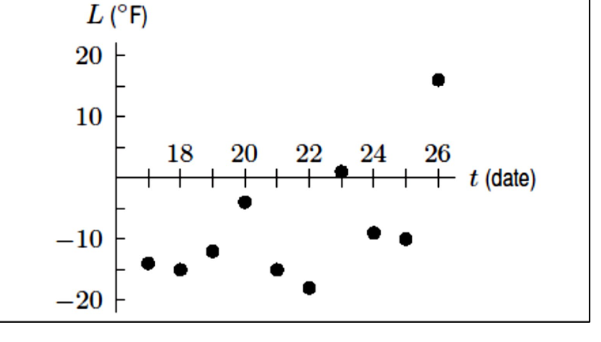
Date (t)
17
18
19
20
21
Low temp (°F)
−14
−15
−12
−4
−15
Date (t)
22
23
24
25
26
Low temp (°F)
−18
1
−9
−10
16
Domain What is the domain?
{17, 18, 19, 20, 21, 22, 23, 24, 25, 26}
The inputs are the dates t: Domain = {17, 18, 19, 20, 21, 22, 23, 24, 25, 26}.
Domain = the t values (dates).
Range What is the range?
{−18, −15, −14, −12, −10, −9, −4, 1, 16}
The outputs are the temperatures. Listed once each (−15 appears twice): Range = {−18, −15, −14, −12, −10, −9, −4, 1, 16}.
Range = the L values; a repeated value is written only once.
Lecture Question · Ex 3
Other functions arise naturally as graphs. The figure contains electrocardiogram (EKG) pictures showing the heartbeat patterns of two patients, one normal and one not.
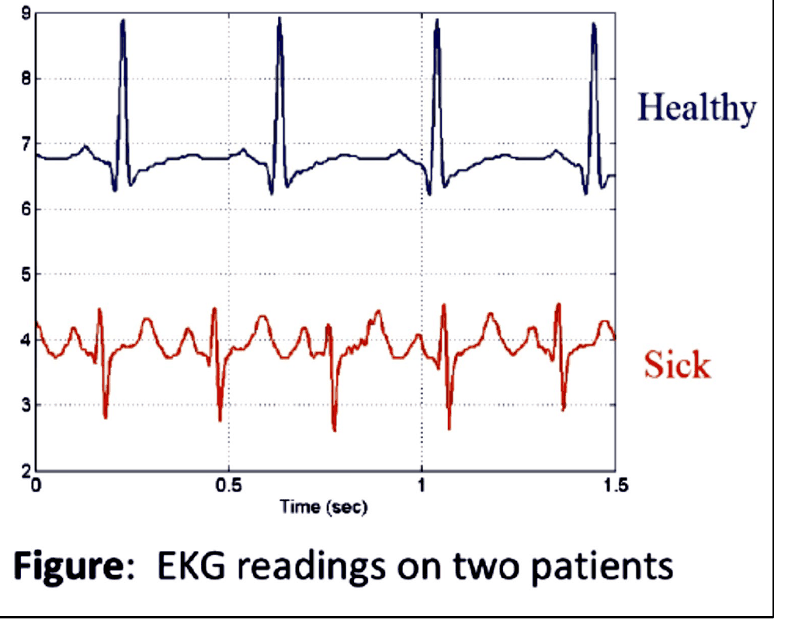
Why are such functions usually shown as graphs instead of formulas?
The pattern of repetitions, which the doctor needs, is easier to see on a graph
Although it is possible to construct a formula to approximate an EKG function, this is seldom done. The pattern of repetitions is what a doctor needs to know, and it is more easily seen from a graph than from a formula.
Functions can be tables, graphs, formulas or words; pick the clearest one.
Textbook Question · Problem 7
For the functions in Problems 7–11, find f(5).
f(x) = 2x + 3
13
f(5) = 2(5) + 3 = 10 + 3 = 13.
Replace x with 5.
Textbook Question · Problem 8
Find f(5):
f(x) = 10x − x²
25
f(5) = 10(5) − 5² = 50 − 25 = 25.
Square first, then subtract.
Textbook Question · Problem 11
Find f(5) from the table:
x
1
2
3
4
5
6
7
8
f(x)
2.3
2.8
3.2
3.7
4.1
5.0
5.6
6.2
f(5) = ?
4.1
In the table, the column x = 5 gives f(5) = 4.1.
Find x = 5 in the top row and read the value below it.
Textbook Question · Problem 12
Let y = f(x) = x² + 2.
a. Find the value of y when x is zero.
2
y = f(0) = 0² + 2 = 2.
Put x = 0 into the formula.
b. What is f(3)?
11
f(3) = 3² + 2 = 9 + 2 = 11.
Square 3, then add 2.
c. What values of x give y a value of 11?
x = 3 and x = −3
x² + 2 = 11 → x² = 9 → x = ±3.
Both 3² and (−3)² equal 9.
d. Are there any values of x that give y a value of 1?
No, because x² would have to equal −1
x² + 2 = 1 → x² = −1, which has no real solution. So no value of x gives y = 1 (the smallest value of y is 2).
A square can never be negative.
2. Function Notation & Interpretation
3 lecture · 6 textbook questions
Lecture Question · Ex 6
The value of a car, V, is a function of the age of the car, a, so V = g(a).
i. Interpret the statement g(5) = 9 in terms of the value of a car if V is in thousands of dollars and a is in years.
A 5-year-old car is worth $9,000
The input 5 is the age (years) and the output 9 is the value (thousands of dollars): when the car is 5 years old, its value is 9 thousand dollars.
Inside the brackets = input (age); after the = sign = output (value).
ii. In the same units, the value of a Honda is approximated by g(a) = 13.78 − 0.8a. Find and interpret the vertical and horizontal intercepts of the graph of this depreciation function g.
Vertical 13.78: a new car is worth $13,780; horizontal a ≈ 17.2: the car is worth $0 after about 17.2 years
Vertical intercept: g(0) = 13.78 − 0.8(0) = 13.78 → a new Honda (age 0) is worth $13,780. Horizontal intercept: 13.78 − 0.8a = 0 → a = 13.78 ÷ 0.8 ≈ 17.2 → the car is worth $0 after about 17.2 years.
Vertical: put a = 0. Horizontal: put g(a) = 0.
Lecture Question · Ex 7
Same as Textbook Problem 4
The concentration of carbon dioxide, C = f(t), in the atmosphere, in parts per million (ppm), is a function of years, t, since 1960.
i. Interpret f(40) = 370 in terms of carbon dioxide.
In 2000, the CO₂ concentration was 370 ppm
t = 40 means 40 years after 1960, i.e. the year 2000. So in the year 2000, the concentration of carbon dioxide in the atmosphere was 370 parts per million.
Add t to the starting year: 1960 + 40 = 2000.
ii. What is the meaning of f(50)?
The CO₂ concentration in the year 2010
f(50) represents the concentration of carbon dioxide in the atmosphere in the year 1960 + 50 = 2010.
f(50) is an output: a concentration, not a year.
Lecture Question · Ex 8
Same as Textbook Problem 6
The graph of r = f(p) is given in the figure.
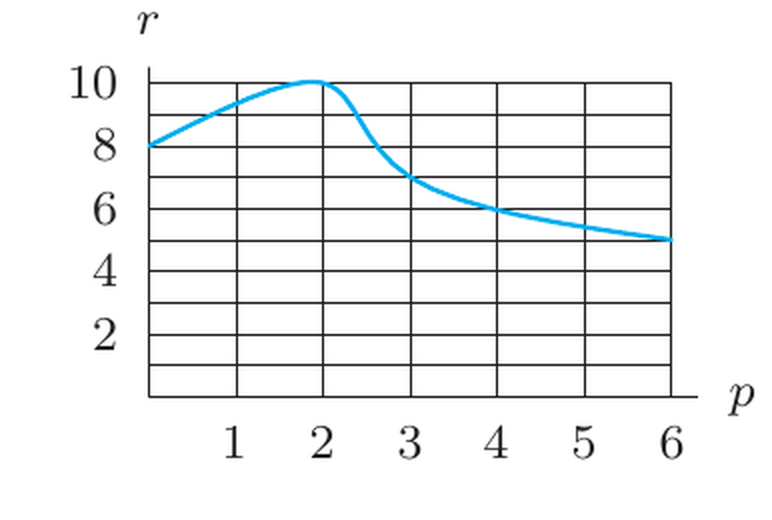
i. What is the value of r when p = 0?
8
At p = 0 the graph starts at r = 8.
Go to p = 0 on the horizontal axis and read the height of the graph.
ii. What is the value of r when p = 3?
7
At p = 3 the graph is at r = 7.
Move up from p = 3 to the curve, then across to the r-axis.
iii. What is f(2)?
10
f(2) is the value of r when p = 2: the highest point of the graph, r = 10.
f(2) means "r when p = 2".
Textbook Question · Problem 2
The population of a city, P, in millions, is a function of t, the number of years since 1970, so P = f(t).
Explain the meaning of the statement f(35) = 12 in terms of the population of this city.
In 2005, the population of the city was 12 million
t = 35 → 1970 + 35 = 2005. In 2005, the population of the city was 12 million.
Input = years since 1970; output = population in millions.
Textbook Question · Problem 3
Let W = f(t) represent wheat production in Argentina, in millions of metric tons, where t is years since 1990.
Interpret the statement f(12) = 9 in terms of wheat production.
In 2002, wheat production was 9 million metric tons
t = 12 → 1990 + 12 = 2002. In 2002, wheat production in Argentina was 9 million metric tons.
Same idea as the CO₂ example.
Textbook Question · Problem 4
Same as Lecture Example 7
The concentration of carbon dioxide, C = f(t), in the atmosphere, in parts per million (ppm), is a function of years, t, since 1960.
a. Interpret f(40) = 370 in terms of carbon dioxide.
In 2000, the CO₂ concentration was 370 ppm
t = 40 means 40 years after 1960, i.e. the year 2000. So in the year 2000, the concentration of carbon dioxide in the atmosphere was 370 parts per million.
Add t to the starting year: 1960 + 40 = 2000.
b. What is the meaning of f(50)?
The CO₂ concentration in the year 2010
f(50) represents the concentration of carbon dioxide in the atmosphere in the year 1960 + 50 = 2010.
f(50) is an output: a concentration, not a year.
Textbook Question · Problem 6
Same as Lecture Example 8
The graph of r = f(p) is in Figure 1.6.
(a) What is the value of r when p is 0?
8
At p = 0 the graph starts at r = 8.
Go to p = 0 on the horizontal axis and read the height of the graph.
(a) When p is 3?
7
At p = 3 the graph is at r = 7.
Move up from p = 3 to the curve, then across to the r-axis.
(b) What is f(2)?
10
f(2) is the value of r when p = 2: the highest point of the graph, r = 10.
f(2) means "r when p = 2".
Textbook Question · Problem 9
Find f(5) from the graph:
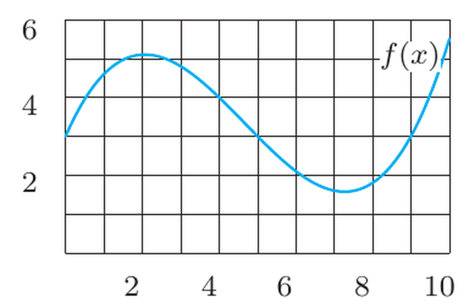
f(5) ≈ ?
About 3.3
At x = 5 the curve is going down between its high point (near x = 2) and its low point (near x = 7.5); its height there is about 3.3.
Read the height of the curve above x = 5.
Textbook Question · Problem 10
Find f(5) from the graph:
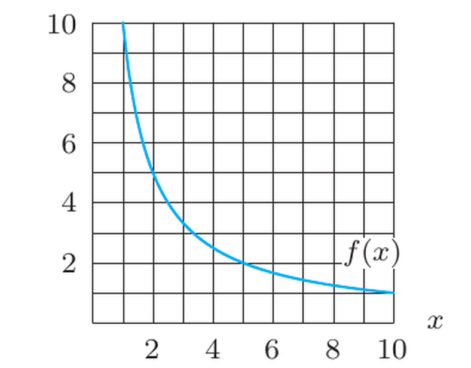
f(5) = ?
2
At x = 5 the curve is at height 2, so f(5) = 2.
Go up from x = 5 to the curve, then across.
3. Horizontal & Vertical Intercepts
3 lecture · 6 textbook questions
Lecture Question · Ex 4
All snow tree crickets chirp at essentially the same rate at the same temperature. The chirp rate, C, in chirps per minute, can be computed using the formula C = f(T) = 4T − 160, where T is the temperature in °F.
a. Solve f(T) = 0, and interpret the result.
T = 40°F: at 40°F the crickets stop chirping
4T − 160 = 0 → 4T = 160 → T = 40. At 40°F the chirp rate is 0: the crickets do not chirp.
Set the output to 0 and solve for the input.
b. Plot the function. Which description matches the graph?
An increasing straight line through (40, 0) and (100, 240)
C = 4T − 160 is linear with a positive coefficient (4), so it is an increasing straight line. It crosses the T-axis at T = 40 (C = 0), and at T = 100: C = 4(100) − 160 = 240. Plot (40, 0) and (100, 240) and join them.
A straight line needs two points: find C at two values of T.
Lecture Question · Ex 5
Find the horizontal intercept (x-intercept) and the vertical intercept (y-intercept) of each of the following functions:
i. Table
Date
5
6
7
8
Snowfall
6.8
12.2
0
9.3
Date
9
10
11
12
Snowfall
14.5
1.9
0
0.1
Horizontal intercepts: Date = 7 and Date = 11; vertical intercept: none
Horizontal intercepts (output = 0): snowfall is 0 on Date 7 and Date 11 → x = 7 and x = 11. Vertical intercept (input = 0): the table has no Date = 0, so there is no vertical intercept.
Zeros in the output row give the horizontal intercepts; look for input 0 for the vertical one.
ii. Graph
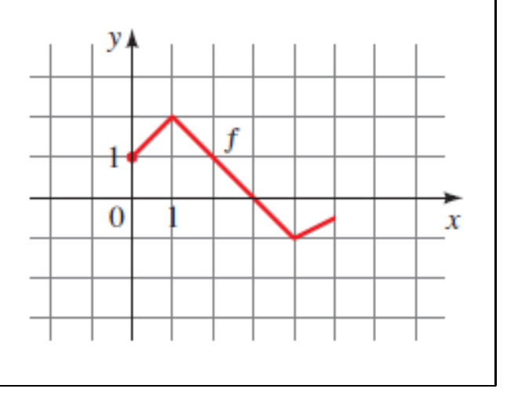
Horizontal intercept: x = 3; vertical intercept: y = 1
The graph crosses the horizontal axis at x = 3 (y = 0) and the vertical axis at y = 1 (x = 0).
Where it crosses the x-axis → horizontal; the y-axis → vertical.
iii. Formula: y = f(x) = 4x − 12.
Horizontal: x = 3; vertical: y = −12
Horizontal intercept: set y = 0 → 4x − 12 = 0 → x = 3. Vertical intercept: set x = 0 → y = 4(0) − 12 = −12.
y = 0 for the horizontal one; x = 0 for the vertical one.
Lecture Question · Ex 9
Same as Textbook Problem 14
The figure shows the amount of nicotine, N = f(t), in mg, in a person's bloodstream as a function of the time, t in hours, since the person finished smoking a cigarette.
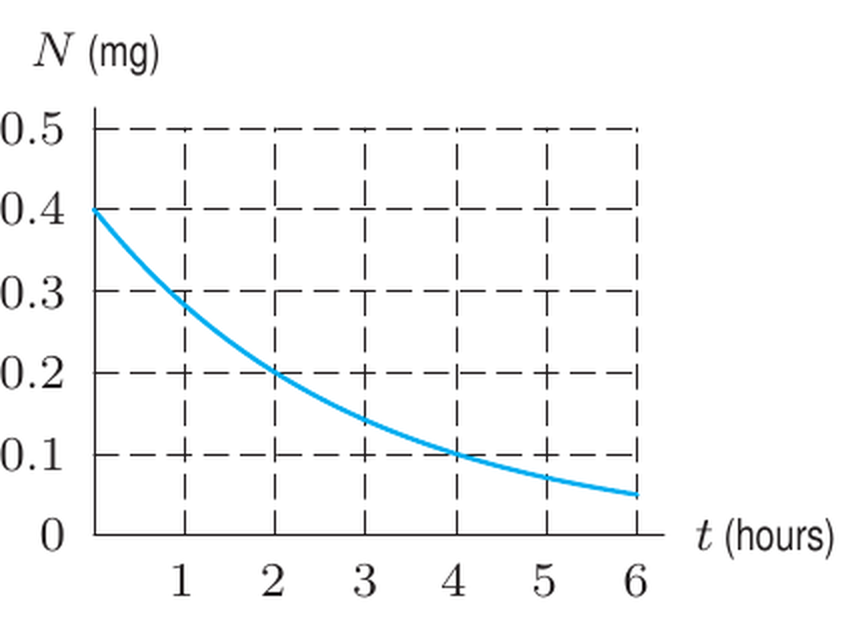
i. Estimate f(3) and interpret it in terms of nicotine.
f(3) ≈ 0.15 mg: 3 hours after smoking, about 0.15 mg of nicotine is in the blood
At t = 3 the curve is at about 0.15 mg (the doctor's answer; the booklet key reads it as 0.14). So f(3) ≈ 0.15 mg: three hours after the person finished smoking, about 0.15 mg of nicotine is in the bloodstream.
Read the height of the curve above t = 3.
ii. About how many hours have passed before the nicotine level is down to 0.1 mg?
About 4 hours
The curve reaches N = 0.1 mg at about t = 4 hours.
Go across from 0.1 on the N-axis to the curve, then down to t.
iii. What is the vertical intercept? What does it represent in terms of nicotine?
0.4 mg: the amount of nicotine when the person finished smoking
At t = 0 the graph is at N = 0.4 mg: the amount of nicotine in the bloodstream right when the person finished smoking.
Vertical intercept = the value at t = 0.
iv. If this function had a horizontal intercept, what would it represent?
The time when all the nicotine is gone from the blood
A horizontal intercept is where N = 0: the time when all the nicotine has left the bloodstream.
Horizontal intercept = when the output becomes 0.
Textbook Question · Problem 13
The use of CFCs has declined since the 1987 Montreal Protocol came into force to reduce the use of substances that deplete the ozone layer. World annual CFC consumption, C = f(t), in million tons, is a function of time, t, in years since 1987.
a. Interpret f(10) = 0.2 in terms of CFCs.
In 1997, world CFC consumption was 0.2 million tons
t = 10 → 1987 + 10 = 1997. In 1997, world CFC consumption was 0.2 million tons.
Add t to 1987.
b. Interpret the vertical intercept of the graph of this function in terms of CFCs.
The CFC consumption in 1987
The vertical intercept is f(0), the value at t = 0, i.e. CFC consumption in 1987.
t = 0 → 1987.
c. Interpret the horizontal intercept of the graph of this function in terms of CFCs.
The year when CFC consumption becomes zero
The horizontal intercept is where C = 0: the year when world CFC consumption drops to zero.
Output 0 → no more CFC use.
Textbook Question · Problem 14
Same as Lecture Example 9
Figure 1.7 shows the amount of nicotine, N = f(t), in mg, in a person's bloodstream as a function of the time, t, in hours, since the person finished smoking a cigarette.
a. Estimate f(3) and interpret it in terms of nicotine.
f(3) ≈ 0.15 mg: 3 hours after smoking, about 0.15 mg of nicotine is in the blood
At t = 3 the curve is at about 0.15 mg (the doctor's answer; the booklet key reads it as 0.14). So f(3) ≈ 0.15 mg: three hours after the person finished smoking, about 0.15 mg of nicotine is in the bloodstream.
Read the height of the curve above t = 3.
b. About how many hours have passed before the nicotine level is down to 0.1 mg?
About 4 hours
The curve reaches N = 0.1 mg at about t = 4 hours.
Go across from 0.1 on the N-axis to the curve, then down to t.
c. What is the vertical intercept? What does it represent in terms of nicotine?
0.4 mg: the amount of nicotine when the person finished smoking
At t = 0 the graph is at N = 0.4 mg: the amount of nicotine in the bloodstream right when the person finished smoking.
Vertical intercept = the value at t = 0.
d. If this function had a horizontal intercept, what would it represent?
The time when all the nicotine is gone from the blood
A horizontal intercept is where N = 0: the time when all the nicotine has left the bloodstream.
Horizontal intercept = when the output becomes 0.
Textbook Question · Problem 15
The number of sales per month, S, is a function of the amount, a (in dollars), spent on advertising that month, so S = f(a).
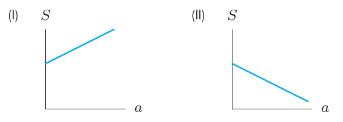
a. Interpret the statement f(1000) = 3500.
Spending $1000 on advertising in a month gives 3500 sales that month
Input a = 1000 dollars of advertising; output S = 3500 sales. Spending $1000 on advertising in a month results in 3500 sales that month.
Input = advertising dollars; output = number of sales.
b. Which of the graphs in Figure 1.8 is more likely to represent this function?
(I), because sales increase as advertising increases
More advertising should give more sales, so the function is increasing: graph (I).
More advertising → more sales.
c. What does the vertical intercept of the graph of this function represent, in terms of sales and advertising?
The number of sales in a month with no advertising
The vertical intercept is f(0): the number of sales in a month when nothing (a = 0) is spent on advertising.
a = 0 → no advertising.
Textbook Question · Problem 16
A deposit is made into an interest-bearing account. Figure 1.9 shows the balance, B, in the account t years later.
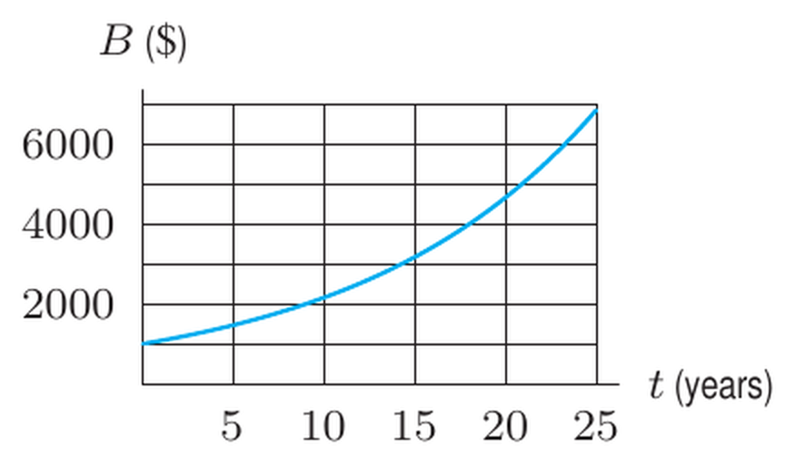
a. What was the original deposit?
About $1000
The original deposit is the balance at t = 0: about $1000.
Original = the value at t = 0.
b. Estimate f(10) and interpret it.
f(10) ≈ $2200: the balance after 10 years
At t = 10 the curve is at about B = 2200: after 10 years the balance is about $2200.
Read the height of the curve above t = 10.
c. When does the balance reach $5000?
After about 21 years
B = 5000 is reached at about t = 21 years.
Go across from 5000 to the curve, then down.
Textbook Question · Problem 18
In the Andes mountains in Peru, the number, N, of species of bats is a function of the elevation, h, in feet above sea level, so N = f(h).
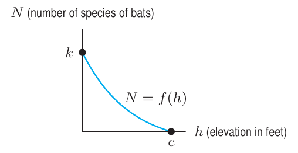
a. Interpret the statement f(500) = 100 in terms of bat species.
At 500 feet above sea level there are 100 species of bats
Input h = 500 feet, output N = 100 species: at an elevation of 500 feet there are 100 species of bats.
Input = elevation; output = number of species.
b. What are the meanings of the vertical intercept, k, and horizontal intercept, c, in Figure 1.10?
k: number of bat species at sea level; c: elevation above which there are no bats
k = f(0): the number of bat species at sea level (h = 0). c is where N = 0: the elevation above which there are no bat species.
Vertical intercept → h = 0; horizontal intercept → N = 0.
Textbook Question · Problem 20
An object is put outside on a cold day at time t = 0. Its temperature, H = f(t), in °C, is graphed in Figure 1.11 (t in minutes).
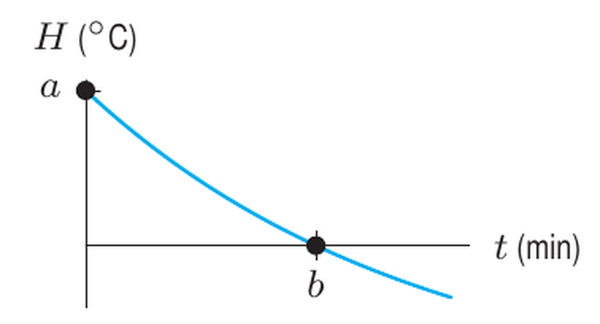
a. What does the statement f(30) = 10 mean in terms of temperature? Include units for 30 and for 10 in your answer.
After 30 minutes outside, the object's temperature is 10°C
Input t = 30 minutes; output H = 10°C. Thirty minutes after being put outside, the object's temperature is 10°C.
Include the units: 30 minutes, 10°C.
b. Explain what the vertical intercept, a, and the horizontal intercept, b, represent in terms of temperature of the object and time outside.
a: the initial temperature at t = 0; b: the minutes until the temperature reaches 0°C
a = f(0): the temperature of the object when it was put outside (t = 0). b is where H = 0: the number of minutes until the object's temperature reaches 0°C.
a is on the H-axis (t = 0); b is on the t-axis (H = 0).
4. Behavior & Graphs of Functions
0 lecture · 10 textbook questions
Textbook Question · Problem 1
Which graph in Figure 1.5 best matches each of the following stories? Write a story for the remaining graph.
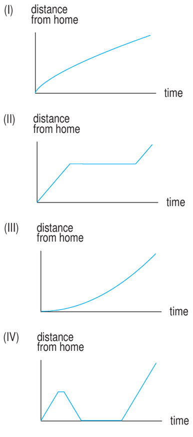
a. I had just left home when I realized I had forgotten my books, and so I went back to pick them up.
(IV)
Distance from home goes up, then back down to zero (returned home), then up again: graph (IV).
Going back home = distance returns to 0.
b. Things went fine until I had a flat tire.
(II)
Distance increases, then stays constant (stopped with the flat tire): graph (II).
Stopped = distance stays the same (flat part).
c. I started out calmly but sped up when I realized I was going to be late.
(III)
Distance increases slowly at first, then faster and faster (the curve gets steeper): graph (III).
Speeding up = the graph gets steeper.
Remaining graph Which story fits the remaining graph, (I)?
"I started walking fast, then slowed down."
Graph (I) rises steeply at first and then less steeply: fast at the start, then slower.
Steep then less steep = fast then slow.
Textbook Question · Problem 5
The population of Washington DC grew from 1900 to 1950, stayed approximately constant during the 1950s, and decreased from about 1960 to 2005.
Graph the population as a function of years since 1900. Which description matches the graph?
Increasing from 0 to 50, constant from 50 to 60, then decreasing to 105
1900–1950 → t = 0 to 50 (increasing); the 1950s → t = 50 to 60 (constant); 1960–2005 → t = 60 to 105 (decreasing).
Change years into "years since 1900".
Textbook Question · Problem 17
When a patient with a rapid heart rate takes a drug, the heart rate plunges dramatically and then slowly rises again as the drug wears off.
Sketch the heart rate against time from the moment the drug is administered. Which description matches the sketch?
Drops steeply at first, then rises slowly
Heart rate starts high, falls sharply (plunges), then increases gradually as the drug wears off.
Plunge = steep drop; slowly rises = gentle climb.
Textbook Question · Problem 19
After an injection, the concentration of a drug in a patient's body increases rapidly to a peak and then slowly decreases. Graph the concentration of the drug in the body as a function of the time since the injection was given. Assume that the patient has none of the drug in the body before the injection. Label the peak concentration and the time it takes to reach that concentration.
Graph Which description matches the graph?
At 0, rises steeply to a peak, then decreases slowly
The concentration starts at 0 (no drug before the injection), increases quickly to the peak concentration at time t(peak), then decreases slowly.
Fast up, slow down.
Peak What does the peak on the graph represent?
The highest concentration and the time t(peak) it takes to reach it
The peak is the highest point of the graph: the peak concentration, reached at time t(peak) after the injection.
Peak = top of the curve.
Textbook Question · Problem 21
Financial investors know that, in general, the higher the expected rate of return on an investment, the higher the corresponding risk.
a. Graph this relationship, showing expected return as a function of risk. Expected return as a function of risk is:
An increasing function
Higher risk goes with higher expected return, so return increases as risk increases. (An opportunity with high return and low risk would lie above the graph, at the upper left.)
Both go up together.
b. On the figure from part (a), mark a point with high expected return and low risk. Where is it?
Above the curve, at the upper left
Low risk = left side; high return = top. Such a point lies above the curve, at the upper left. (Investors hope to find such opportunities.)
Left = low risk, up = high return.
Textbook Question · Problem 22
In tide pools on the New England coast, snails eat algae.
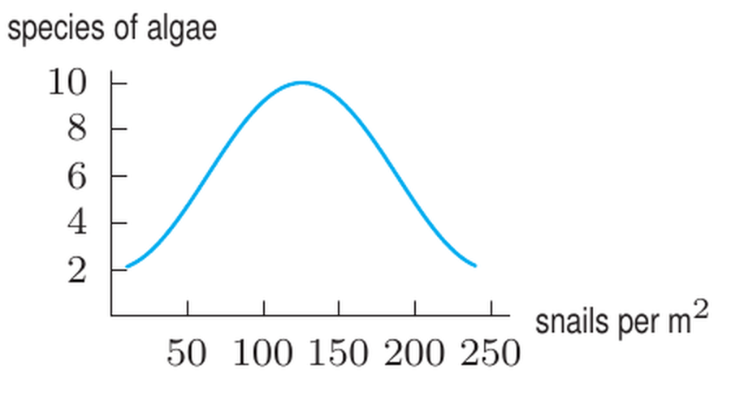
Describe what Figure 1.12 tells you about the effect of snails on the diversity of algae. Does the graph support the statement that diversity peaks at intermediate predation levels?
It increases, peaks near 125 snails/m², then decreases
The number of algae species rises to a peak at about 125 snails per m² and then falls, so diversity is highest at intermediate predation levels. Yes, the graph supports the statement.
The top of the hill is in the middle.
Textbook Question · Problem 23
A potato is put in an oven to bake at time t = 0.
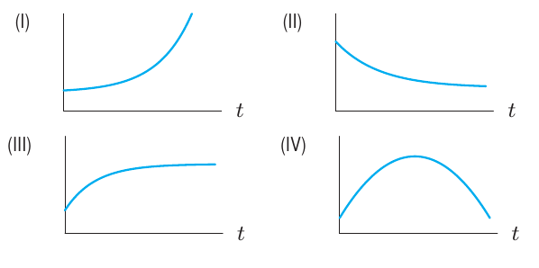
(a) Which of the graphs in Figure 1.13 could represent the potato's temperature as a function of time?
(III)
The potato's temperature rises quickly at first, then levels off as it approaches the oven temperature: graph (III).
It heats up and then levels off near the oven temperature.
(b) What does the vertical intercept represent in terms of the potato's temperature?
The initial (room) temperature of the potato
The vertical intercept is the temperature at t = 0: the potato's initial (room) temperature when it is put in the oven.
Vertical intercept = starting value.
Textbook Question · Problem 24
Figure 1.14 shows fifty years of fertilizer use in the US, India, and the former Soviet Union.
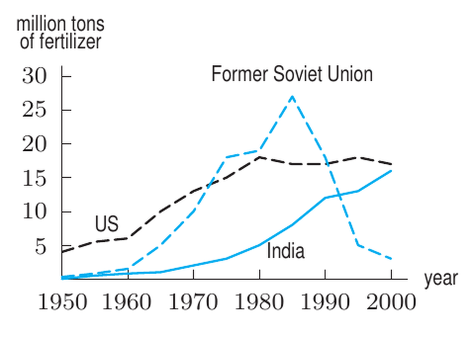
a. Estimate fertilizer use in 1970 in the US, India, and the former Soviet Union.
US ≈ 13, India ≈ 2, former Soviet Union ≈ 10
Above 1970: the US curve is at about 13, India at about 2 and the former Soviet Union at about 10 million tons.
Go up from 1970 and read each curve.
b. India Describe how fertilizer use has changed in India over this 50-year period.
It increased steadily
India: increased steadily. US: increased until about 1980, then leveled off. Former Soviet Union: rose to a peak around 1985, then dropped sharply.
Follow the solid blue (India) curve from left to right.
b. US Describe how fertilizer use has changed in the US over this 50-year period.
It increased until about 1980, then leveled off
US (black dashed curve): increased until about 1980, then leveled off.
Follow the black dashed (US) curve from left to right.
b. Former Soviet Union Describe how fertilizer use has changed in the former Soviet Union over this 50-year period.
It rose to a peak around 1985, then dropped sharply
Former Soviet Union (blue dashed curve): rose to a peak around 1985, then dropped sharply.
Follow the blue dashed curve from left to right.
Textbook Question · Problem 25
The gas mileage of a car (in miles per gallon) is highest when the car is going about 45 miles per hour and is lower when the car is going faster or slower than 45 mph.
Graph gas mileage as a function of speed of the car. Which description matches the graph?
Rises to a maximum at 45 mph, then falls
Mileage increases up to the highest point at 45 mph, then decreases for higher speeds: a curve with a peak at 45.
Highest at 45 → a hill shape with its top at 45.
Textbook Question · Problem 26
The six graphs in Figure 1.15 show frequently observed patterns of age-specific cancer incidence rates, in number of cases per 1000 people, as a function of age. The scales on the vertical axes are equal.
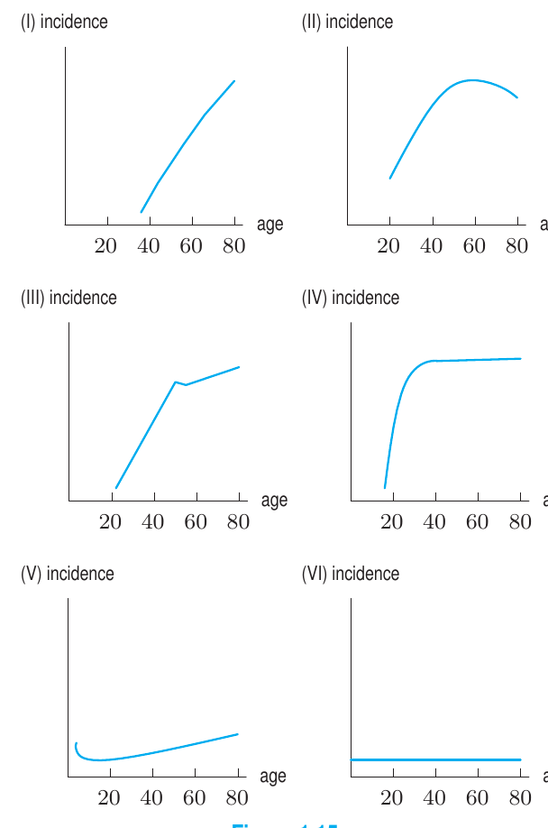
a. Which graph shows an incidence rate that rises quickly with age and then stays constant?
(IV)
Graph (IV): the rate increases quickly, then stays constant.
Steep rise, then flat.
a. Which graph shows an incidence rate that increases with age and then decreases slightly after about 60–70?
(II)
Graph (II): the rate increases, then decreases slightly after age 60–70.
Rises, then dips a little at older ages.
a. Which graph shows an incidence rate that does not depend on age?
(VI)
Graph (VI) is a horizontal line: the incidence rate is constant at all ages.
Flat line = constant.
b. Which graph shows a relatively high incidence rate for children?
(V)
Graph (V) starts high at young ages, drops, then increases slowly: a cancer such as leukemia.
High at the left end (young ages).
c. Which graph shows a brief decrease in the incidence rate at around age 50?
(III)
Graph (III) increases, dips briefly at about age 50, then increases again: a cancer such as breast cancer.
Look for a small dip near 50.
d. Which graph or graphs might represent a cancer that is caused by toxins which build up in the body over time? (For example, lung cancer.)
(I)
If toxins build up over time, the risk keeps growing with age: graph (I), which increases with age (for example, lung cancer).
Build-up over time → keeps rising.
Lecture 2Linear Functions (1.2)
11 lecture · 34 textbook · 3 past exam questions
الدالة الخطية (Linear function) رسمها خط مستقيم، لأنها تتغير بمقدار ثابت كل خطوة.
📈 الميل (Slope) mكم يطلع أو ينزل الخط كل خطوة
🏁 المقطع (Intercept) bوين يبدأ الخط (لما x = 0)
🚕 تشبيه: التاكسي: فتح العداد مبلغ ثابت (هذا b) + مبلغ ثابت لكل كيلو (هذا m). كل ما زادت الكيلوات، الفلوس تزيد بنفس المقدار.
بهالمحاضرة بتتعلمين 3 أشياء:
الميل من نقطتين أو من رسم
y = b + mx وتفسيرها، وإيجاد معادلة الخط
الجداول الخطية وعائلات الخطوط (Families of lines)
m = (y₂ − y₁) ÷ (x₂ − x₁) = Δy / Δxالتغير في y ÷ التغير في x (Rise over run)
(1 − 5) ÷ (3 − 1) = −4 ÷ 2 = −2. y فوق و x تحت دايماً.
y = b + mxb = البداية · m = التغير لكل 1
b = قيمة y لما x = 0
m = كم y يزيد أو ينقص كل ما x يزيد 1
وحدة الميل = وحدة y per وحدة x (مثلاً seconds per year)
Ex 3الرقم القياسي للميل y = 260 − 0.4t (ثواني، t = سنين بعد 1900). فسري 260 و −0.4، وارسمي.
260 = y لما t = 0 (سنة 1900) ← الرقم القياسي كان 260 ثانية
−0.4 سالب ← الرقم ينقص 0.4 ثانية كل سنة
نقطتين للرسم: t = 0 → 260 , t = 100 → 260 − 40 = 220
260: رقم 1900 | −0.4: يقل 0.4 ث كل سنة | خط نازل (0, 260) و (100, 220)
فاتورة جوال C = 25 + 0.05m ($، m = دقايق). شنو معنى 0.05؟
0.05 هو الميل ← التغير لكل دقيقة. (25 هو المقطع = الرسوم الثابتة.)
Ex 4رسم المسافة من البيت D (miles) برحلة 5 ساعات: يقطع المحور الرأسي عند 300 ويمر بـ (2, 400). المقطع؟ الميل؟ المعادلة؟
المقطع (t = 0): 300 miles ← ببداية الرحلة كان بعيد 300 ميل
m = (400 − 300) ÷ (2 − 0) = 50 miles/hour ← يبعد 50 ميل كل ساعة
D = b + mt
D = 300 + 50t
2024 Q22400 خلية بالبداية، وتزيد 70 خلية كل ساعة. (a) القانون (b) كم بعد 10 ساعات؟ (c) متى توصل 86,400؟
"بالبداية" = b ، "كل ساعة" = m: N = 2400 + 70t
N = 2400 + 70(10) = 3100
86400 = 2400 + 70t → 70t = 84000
t = 84000 ÷ 70 = 1200
N = 2400 + 70t | 3100 خلية | 1200 ساعة
y − y₁ = m(x − x₁)نقطة + ميل = معادلة
🔑 عندج نقطتين؟ ① طلعي m ② خذي أي نقطة ③ عوّضي ④ فكي القوس وخلي y لحالها
Ex 5الخط يمر بـ (2, 5) وميله m = 7.
y − 5 = 7(x − 2)
y − 5 = 7x − 14
y = 7x − 14 + 5
y = 7x − 9
Ex 6الخط يمر بـ (1, 2) و (4, −7).
m = (−7 − 2) ÷ (4 − 1) = −9 ÷ 3 = −3
y − 2 = −3(x − 1)
y − 2 = −3x + 3 → y = −3x + 5
y = −3x + 5 (لو استخدمتي (4, −7) نفس الجواب)
خط يمر بـ (1, 3) وميله 2. المعادلة؟
y − 3 = 2(x − 1) → y = 2x − 2 + 3 = 2x + 1
Ex 7النفايات W كانت 238.3 (مليون طن) سنة 2000، و 251.3 سنة 2006. (i) المعادلة (ii) توقعي 2020.
هني t = السنة نفسها: (2000, 238.3) , (2006, 251.3)
m = 13 ÷ 6 ≈ 2.167
W − 238.3 = 2.167(t − 2000) = 2.167t − 4334
W = 2.167t − 4095.7
(ii) t = 2020: 4377.34 − 4095.7 ≈ 281.6
W = 2.167t − 4095.7 | سنة 2020 ≈ 281.6 million tons
2024 Q3CO₂ كان 325 ppm سنة 1970، و 385 سنة 2000. t = سنين بعد 1950. (a) المعادلة (b) فسري الميل (c) متى يوصل 500؟
t مو السنة! 1970 → t = 20 , 2000 → t = 50
m = (385 − 325) ÷ (50 − 20) = 60 ÷ 30 = 2
C − 325 = 2(t − 20) → C = 285 + 2t
500 = 285 + 2t → t = 107.5
السنة: 1950 + 107.5 = 2057.5
C = 285 + 2t | يزيد 2 ppm كل سنة | سنة 2057
الجدول خطي (Linear) إذا y يتغير بنفس المقدار كل ما x تزيد بخطوات متساوية.
Ex 8أي جدول ممكن يكون خطي؟ a) x: 0, 1, 2, 3 ← 25, 30, 35, 40 b) x: 0, 2, 4, 6 ← 10, 16, 26, 40 c) t: 20, 30, 40, 50 ← 2.4, 2.2, 2.0, 1.8
a) +5, +5, +5 ← ثابت ✓
b) +6, +10, +14 ← مو ثابت ✗
c) −0.2 كل مرة ← m = −0.2 ÷ 10 = −0.02 ✓
a) و c) بس
x: 0, 1, 2, 3 و y: 27, 25, 23, 21. خطي؟
ينقص 2 كل مرة (ثابت) ← خطي وميله −2. النقصان عادي بالخطي.
💡 "q as a function of p" ← p المدخل (تحت بالكسر)، و q المخرج (فوق).
Ex 9p (dollars): 5, 10, 15, 20 و q (tons): 100, 90, 80, 70. (i) q كدالة في p (ii) p كدالة في q، مع وحدة الميل.
(i) النقاط (p, q): (5, 100) , (10, 90)
m = (90 − 100) ÷ (10 − 5) = −2
q − 100 = −2(p − 5) → q = 110 − 2p
(ii) نقلب الأدوار: (q, p): (100, 5) , (90, 10)
m = (10 − 5) ÷ (90 − 100) = −0.5
p − 5 = −0.5(q − 100) → p = 55 − 0.5q
q = 110 − 2p (−2 tons per dollar) | p = 55 − 0.5q (−0.5 dollars per ton)
الشرط
بالرسم
m > 0
طالع ↗
m < 0
نازل ↘
b > 0
يقطع المحور الرأسي فوق الصفر
b < 0
يقطعه تحت الصفر
Ex 10طابقي l₁, l₂, l₃, l₄ (رسم الملزمة) مع: a) m > 0, b > 0 b) m < 0, b > 0 c) m > 0, b < 0 d) m < 0, b < 0
لكل خط اسألي: ① طالع ولا نازل؟ ② يقطع فوق ولا تحت؟
a) طالع + فوق ← l₁ b) نازل + فوق ← l₃
c) طالع + تحت ← l₂ d) نازل + تحت ← l₄
a) l₁ b) l₃ c) l₂ d) l₄
نفس الميلخطين متوازيين (Parallel)، ما يتقابلون
نفس المقطعيتقابلون على المحور الرأسي
Ex 11من رسم الملزمة: (i) أي خطين نفس الميل؟ وأيهم مقطعه أكبر؟ (ii) أي خطين نفس المقطع؟ وأيهم ميله أكبر؟
(i) المتوازيين: l₂ , l₃
l₂ يقطع المحور الرأسي أعلى ← مقطعه أكبر
(ii) يتقابلون على المحور الرأسي: l₁ , l₃
l₁ أوقف (Steeper) ← ميله أكبر
(i) l₂ و l₃، الأكبر مقطع l₂ | (ii) l₁ و l₃، الأكبر ميل l₁
حيوانات A: P = 45,000 + 1000t، و B: P = 20,000 + 2500t. مين يكبر أسرع؟ (2022 Q3)
السرعة = الميل: 2500 > 1000. (من الرسم: A من 45,000 لـ 60,000 عند t = 15 ← 1000، و B من 20,000 لـ 60,000 عند t = 16 ← 2500.)
m = Δy / Δx · y = b + mx · y − y₁ = m(x − x₁)الميل · المعادلة · نقطة + ميل
إذا السؤال فيه…
سوّي
"slope" ونقطتين
(y₂ − y₁) ÷ (x₂ − x₁)
"initially" / "starts at"
هذا b
"per hour" / "each year"
هذا m
"interpret the slope"
يزيد/ينقص m [وحدة y] كل [وحدة x]
نقطتين وتبين المعادلة
m أول ← y − y₁ = m(x − x₁)
"years since 1950"
t = year − 1950
"when will it reach…"
حطي y = الرقم وحلي t ← رجعيها سنة
"could be linear"
الفروق ثابتة؟
"A as a function of B"
B تحت، A فوق
"grows faster" / "steeper"
الميل الأكبر
⚠️ أخطاء شائعة: x فوق بدل y · ترتيب طرح مختلف فوق وتحت · "since 1950" وتحطين السنة نفسها · نسيان وحدة الميل · نسيان ترجعين t لسنة
1. Slope of a Straight Line
2 lecture · 4 textbook questions
Lecture Question · Ex 1
Find the slope of the line passes through the points (2, 3) and (4, 9).
m = ?
m = 3
m = (y₂ − y₁)/(x₂ − x₁) = (9 − 3)/(4 − 2) = 6/2 = 3 Or: m = (3 − 9)/(2 − 4) = −6/−2 = 3 (same answer) Positive slope ⇒ y = f(x) is increasing.
Subtract the y's, then the x's, in the same order.
Lecture Question · Ex 2
Find the slope of the line given in the figure.
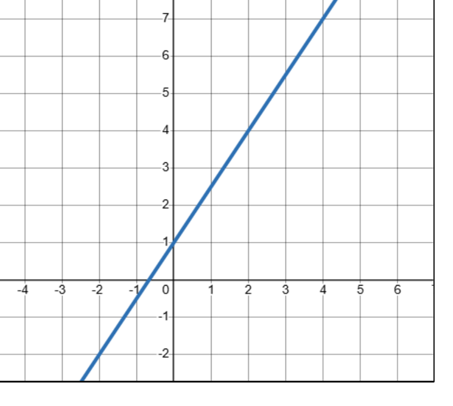
m = ?
m = 3/2
Points from the line: (0, 1) and (2, 4) m = (y₂ − y₁)/(x₂ − x₁) = (4 − 1)/(2 − 0) = 3/2
Choose two points where the line crosses the grid exactly.
Textbook Question · Problem 1
For Problems 1–4, determine the slope and the y-intercept of the line whose equation is given.
7y + 12x − 2 = 0
m = −12/7, b = 2/7
7y = 2 − 12x → y = 2/7 − (12/7)x. So m = −12/7 and b = 2/7.
Solve for y first, then read the number with x (slope) and the constant (intercept).
Textbook Question · Problem 2
Determine the slope and the y-intercept of the line:
3x + 2y = 8
m = −3/2, b = 4
2y = 8 − 3x → y = 4 − (3/2)x. So m = −3/2 and b = 4.
Divide every term by 2.
Textbook Question · Problem 3
Determine the slope and the y-intercept of the line:
12x = 6y + 4
m = 2, b = −2/3
6y = 12x − 4 → y = 2x − 4/6 = 2x − 2/3. So m = 2 and b = −2/3.
Move the 4 to the other side, then divide by 6.
Textbook Question · Problem 4
Determine the slope and the y-intercept of the line:
−4y + 2x + 8 = 0
m = 1/2, b = 2
4y = 2x + 8 → y = (1/2)x + 2. So m = 1/2 and b = 2.
Move −4y to the other side to make it positive, then divide by 4.
2. Slope-Intercept Form & Interpretation
2 lecture · 11 textbook · 1 past exam questions
Lecture Question · Ex 3
If y is the world record time to run the mile, in seconds, and t is the number of years since 1900, then records show that, approximately, y = g(t) = 260 − 0.4t. Explain the meaning of the intercept, 260, and the slope, −0.4, in terms of the world record time to run the mile and sketch the graph.
Intercept What is the meaning of the intercept, 260?
In 1900, the world record time to run the mile was 260 seconds
i) y = 260 when t = 0 The world record time to run the mile in year 1900 was 260 seconds.
Intercept = the value at t = 0, which is the year 1900.
Slope What is the meaning of the slope, −0.4?
Since 1900, the world record time has been decreasing by 0.4 seconds every year
ii) m = −0.4 Since 1900, the world record time to run the mile is decreasing by 0.4 sec every year.
Negative slope = decreasing; units = seconds per year.
Sketch To sketch the graph, which two points lie on it?
(0, 260) and (100, 220)
y = 260 − 0.4t t = 0 ⇒ y = 260 t = 10 ⇒ y = 260 − 0.4(10) = 256 t = 100 ⇒ y = 260 − 0.4(100) = 220 Draw a decreasing line starting at 260 on the y-axis.
Put t = 0 and t = 100 into the formula.
Lecture Question · Ex 4
Same as Textbook Problem 20
The figure shows the distance from home, in miles, of a person on a 5-hour trip.
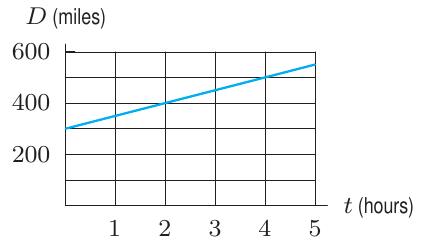
i. Estimate the vertical intercept. Give units and interpret it in terms of distance from home.
300 miles: at the beginning of the trip, the person was 300 miles from home
y-intercept: y = 300 miles when t = 0 It means at the beginning of the person's trip, he was 300 miles away from home.
Read the graph where t = 0.
ii. Estimate the slope of this linear function. Give units and interpret it in terms of distance from home.
50 miles/hour: the distance from home increases by 50 miles each hour
Points (0, 300) and (2, 400) slope = (y₂ − y₁)/(x₂ − x₁) = (400 − 300)/(2 − 0) = 100/2 = 50 miles/hour Or: slope = Rise/Run = 200/4 = 50 Since the beginning of the trip up to 5 hours, the distance from home is increasing by 50 miles per hour.
Rise / run between two clear grid points.
iii. Give a formula for distance, D, from home as a function of time, t in hours.
D = 50t + 300
y = mx + b m = 50, b = 300 D = 50t + 300
Put the intercept and the slope into D = b + mt.
Textbook Question · Problem 11
A city's population was 30,700 in the year 2000 and is growing by 850 people a year.
a. Give a formula for the city's population, P, as a function of the number of years, t, since 2000.
P = 30,700 + 850t
Starting value (t = 0) b = 30,700; rate of change m = 850 people per year. P = 30,700 + 850t.
Starting value + (rate × time).
b. What is the population predicted to be in 2010?
39,200
2010 → t = 10. P = 30,700 + 850(10) = 30,700 + 8,500 = 39,200.
t = 2010 − 2000.
c. When is the population expected to reach 45,000?
t ≈ 16.8 years (in about 2017)
45,000 = 30,700 + 850t → 850t = 14,300 → t = 14,300 / 850 ≈ 16.8 years after 2000, in about 2017.
Subtract the starting value first, then divide by 850.
Textbook Question · Problem 12
A cell phone company charges a monthly fee of $25 plus $0.05 per minute.
Find a formula for the monthly charge, C, in dollars, as a function of the number of minutes, m, the phone is used during the month.
C = 25 + 0.05m
Fixed fee = 25 (the intercept); cost per minute = 0.05 (the slope). C = 25 + 0.05m.
Fixed amount + (price per minute × minutes).
Textbook Question · Problem 13
A company rents cars at $40 a day and 15 cents a mile. Its competitor's cars are $50 a day and 10 cents a mile.
a. For each company, give a formula for the cost of renting a car for a day as a function of the distance traveled.
C₁ = 40 + 0.15d and C₂ = 50 + 0.10d
First company: $40 fixed + $0.15 per mile → C₁ = 40 + 0.15d. Competitor: $50 fixed + $0.10 per mile → C₂ = 50 + 0.10d.
Change cents to dollars: 15 cents = 0.15.
b. On the same axes, graph both functions. Where do the two graphs cross?
At (200, 70): 200 miles, $70
40 + 0.15d = 50 + 0.10d → 0.05d = 10 → d = 200 miles. Cost: 40 + 0.15(200) = 40 + 30 = $70. The lines cross at (200, 70); C₁ starts lower but is steeper.
Set C₁ = C₂ and solve for d, then find C.
c. How should you decide which company is cheaper?
Under 200 miles the first company is cheaper; over 200 miles the competitor is cheaper
The graphs cross where 40 + 0.15d = 50 + 0.10d → 0.05d = 10 → d = 200 miles (cost $70). For less than 200 miles the first company is cheaper; for more than 200 miles the competitor is cheaper.
Find where the two costs are equal, then test a distance on each side.
Textbook Question · Problem 14
World milk production rose at an approximately constant rate between 1997 and 2003. See Figure 1.23.
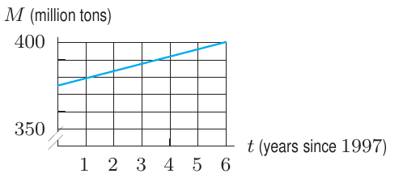
a. Estimate the vertical intercept and interpret it in terms of milk production.
≈ 375 million tons: the milk production in 1997
At t = 0 the line is at about 375 million tons, so world milk production in 1997 was about 375 million tons.
t = 0 is the year 1997. Each grid row is 10 million tons.
b. Estimate the slope and interpret it in terms of milk production.
≈ 4.2 million tons/year: production increases by about 4.2 million tons per year
From (0, 375) to (6, 400): slope ≈ (400 − 375) / 6 = 25/6 ≈ 4.2 million tons per year.
Total rise over the 6 years, divided by 6.
c. Give an approximate formula for milk production, M, as a function of t.
M ≈ 375 + 4.2t
Intercept ≈ 375, slope ≈ 4.2: M ≈ 375 + 4.2t.
M = intercept + slope × t.
Textbook Question · Problem 15
Annual revenue R from McDonald's restaurants worldwide can be estimated by R = 19.1 + 1.8t, where R is in billion dollars and t is in years since January 1, 2005.
a. What is the slope of this function? Include units. Interpret the slope in terms of McDonald's revenue.
1.8 billion dollars/year: revenue increases by 1.8 billion dollars each year
The slope is 1.8 billion dollars per year: McDonald's revenue increases by 1.8 billion dollars every year.
The slope is the number multiplied by t.
b. What is the vertical intercept of this function? Include units. Interpret the vertical intercept in terms of McDonald's revenue.
19.1 billion dollars: the revenue in 2005
At t = 0 (2005), R = 19.1 billion dollars: McDonald's annual revenue in 2005.
t = 0 is 2005, not 2000.
c. What annual revenue does the function predict for 2010?
28.1 billion dollars
2010 → t = 5. R = 19.1 + 1.8(5) = 19.1 + 9 = 28.1 billion dollars.
t = 2010 − 2005 = 5.
d. When is annual revenue predicted to hit 30 billion dollars?
t ≈ 6.06 (early 2011)
30 = 19.1 + 1.8t → 1.8t = 10.9 → t ≈ 6.06 years after 2005, early 2011.
Subtract 19.1, then divide by 1.8.
Textbook Question · Problem 16
Let y be the percent increase in annual US national production during a year when the unemployment rate changes by u percent. (For example, u = 2 if unemployment increases from 4% to 6%.) Okun's law states that y = 3.5 − 2u.
a. What is the meaning of the number 3.5 in Okun's law?
Production increases by 3.5% in a year when unemployment does not change
When u = 0 (unemployment does not change), y = 3.5: national production increases by 3.5% that year.
3.5 is the value of y when u = 0.
b. What is the effect on national production of a year when unemployment rises from 5% to 8%?
Production decreases by 2.5%
u = 8 − 5 = 3. y = 3.5 − 2(3) = 3.5 − 6 = −2.5: production decreases by 2.5%.
u is the change in unemployment, not 8.
c. What change in the unemployment rate corresponds to a year when production is the same as the year before?
Unemployment increases by 1.75 percentage points
Same production → y = 0. 0 = 3.5 − 2u → u = 1.75: unemployment rises by 1.75 percentage points.
No change in production means y = 0.
d. What is the meaning of the coefficient −2 in Okun's law?
Each 1-point increase in unemployment reduces production growth by 2 points
−2 is the slope: for each 1 percentage point increase in unemployment, the growth in production goes down by 2 percentage points.
Slope = change in y for each 1 unit increase in u.
Textbook Question · Problem 20
Same as Lecture Example 4
Figure 1.24 shows the distance from home, in miles, of a person on a 5-hour trip.
a. Estimate the vertical intercept. Give units and interpret it in terms of distance from home.
300 miles: at the beginning of the trip, the person was 300 miles from home
The y-intercept is D = 300 miles when t = 0: at the beginning of the trip, the person was 300 miles away from home.
Read the graph where t = 0.
b. Estimate the slope of this linear function. Give units, and interpret it in terms of distance from home.
50 miles/hour: the distance from home increases by 50 miles each hour
Points (0, 300) and (2, 400): slope = (400 − 300) / (2 − 0) = 100/2 = 50 miles per hour. From the beginning of the trip up to 5 hours, the distance from home is increasing by 50 miles per hour.
Rise / run between two clear grid points.
c. Give a formula for distance, D, from home as a function of time, t in hours.
D = 300 + 50t
D = b + mt with b = 300 and m = 50: D = 50t + 300.
Put the intercept and the slope into D = b + mt.
Textbook Question · Problem 28
Problems 28–33 concern the maximum heart rate (MHR), which is the maximum number of times a person's heart can safely beat in one minute.
Maximum heart rate (MHR), in beats per minute, a = age in years: Females: MHR = 226 − a, Males: MHR = 220 − a.
Which of the following is the correct statement?
As you age, your maximum heart rate decreases by one beat per minute per year
The slope of MHR = 226 − a (or 220 − a) is −1. Its units are (beats per minute) per year: MHR decreases by one beat per minute for each year of age.
Units of slope = units of MHR (beats per minute) over units of a (years).
Textbook Question · Problem 29
Maximum heart rate (MHR), in beats per minute, a = age in years: Females: MHR = 226 − a, Males: MHR = 220 − a.
Which of the following is the correct statement for a male and female of the same age?
The female's maximum heart rate exceeds the male's
Same age a: female 226 − a, male 220 − a. The female's MHR is always 6 beats per minute higher.
Compare 226 and 220.
Textbook Question · Problem 30
Maximum heart rate (MHR), in beats per minute, a = age in years: Females: MHR = 226 − a, Males: MHR = 220 − a.
What can be said about the ages of a male and a female with the same maximum heart rate?
The female is 6 years older
226 − a(female) = 220 − a(male) → a(female) − a(male) = 6. The female is 6 years older.
Set the two formulas equal.
Textbook Question · Problem 31
Maximum heart rate (MHR), in beats per minute, a = age in years: Females: MHR = 226 − a, Males: MHR = 220 − a.
Recently it has been suggested that a more accurate predictor of MHR for both males and females is given by MHR = 208 − 0.7a.
a. At what age do the old and new formulas give the same MHR for females? For males?
Females: 60 years; males: 40 years
Females: 226 − a = 208 − 0.7a → 18 = 0.3a → a = 60. Males: 220 − a = 208 − 0.7a → 12 = 0.3a → a = 40.
Set each old formula equal to the new one and solve for a.
b. Which of the following is true?
The new formula predicts a lower MHR for young people and a higher MHR for older people
At a = 0 the new formula gives 208, less than 226 or 220 (lower for the young). The new formula decreases more slowly (slope −0.7 instead of −1), so it becomes higher for older people. Statement (ii).
Compare the intercepts (young) and the slopes (how fast it drops).
c. When testing for heart disease, doctors ask patients to walk on a treadmill until their heart rates reach 85 percent of the MHR. For a 65-year-old male, what is the difference in beats per minute between the heart rate reached if the old formula is used and the heart rate reached if the new formula is used?
Find an equation of the line passes through the point (2, 5) and has slope m = 7.
Equation = ?
7x − y = 9
y − y₀ = m(x − x₀) y − 5 = 7(x − 2) y − 5 = 7x − 14 7x − y = −5 + 14 7x − y = 9 (or y − 7x = −9)
Use y − y₀ = m(x − x₀), then move the 5 to the right.
Lecture Question · Ex 6
Find an equation of the line passes through the points (1, 2) and (4, −7).
Equation = ?
y + 3x = 5
1) Find slope: m = (y₂ − y₁)/(x₂ − x₁) = (−7 − 2)/(4 − 1) = −9/3 = −3 2) Eq. of the line with m = −3, P(1, 2) (or you choose P(4, −7)) y − y₁ = m(x − x₁) y − 2 = −3(x − 1) y − 2 = −3x + 3 y + 3x = 3 + 2 y + 3x = 5 (or y = −3x + 5)
Find m first, then use either point.
Lecture Question · Ex 7
The solid waste generated each year in the cities of the US is increasing. The solid waste generated, in millions of tons, was 238.3 in 2000 and 251.3 in 2006.
i. Assuming that the amount of solid waste (W) generated by US cities is a linear function of time (t), find a formula for this function by finding the equation of the line through these two points.
W = 2.167t − 4095.7
(t, W) ⇒ (2000, 238.3) and (2006, 251.3) m = (W₂ − W₁)/(t₂ − t₁) = (251.3 − 238.3)/(2006 − 2000) = 2.167 millions of tons/year W − W₁ = m(t − t₁) W − 238.3 = 2.167(t − 2000) W − 238.3 = 2.167t − 4334 W = 2.167t − 4095.7
Here t is the actual year, so use the point (2000, 238.3).
ii. Use this formula to predict the amount of solid waste generated in the year 2020.
281.64 millions of tons
t = 2020 W = 2.167(2020) − 4095.7 = 281.64 millions of tons
Put t = 2020 (the year itself) into the formula.
Textbook Question · Problem 5
For Problems 5–8, find an equation for the line that passes through the given points.
(0, 2) and (2, 3)
y = 2 + 0.5x
m = (3 − 2) / (2 − 0) = 1/2. The line passes through (0, 2), so b = 2: y = 2 + 0.5x.
(0, 2) is already the y-intercept.
Textbook Question · Problem 6
Find an equation for the line that passes through the given points.
(0, 0) and (1, 1)
y = x
m = (1 − 0) / (1 − 0) = 1 and b = 0: y = x.
It passes through the origin, so b = 0.
Textbook Question · Problem 7
Find an equation for the line that passes through the given points.
(−2, 1) and (2, 3)
y = 0.5x + 2
m = (3 − 1) / (2 − (−2)) = 2/4 = 0.5. y − 1 = 0.5(x + 2) → y = 0.5x + 2.
2 − (−2) = 4.
Textbook Question · Problem 8
Find an equation for the line that passes through the given points.
(4, 5) and (2, −1)
y = 3x − 7
m = (−1 − 5) / (2 − 4) = −6 / −2 = 3. y − 5 = 3(x − 4) → y = 3x − 7.
Negative over negative is positive.
Textbook Question · Problem 22
World grain production was 1241 million tons in 1975 and 2048 million tons in 2005, and has been increasing at an approximately constant rate.
a. Find a linear function for world grain production, P, in million tons, as a function of t, the number of years since 1975.
P = 1241 + 26.9t
Points (0, 1241) and (30, 2048): m = (2048 − 1241) / 30 = 807/30 = 26.9. P = 1241 + 26.9t.
1975 → t = 0 and 2005 → t = 30.
b. Using units, interpret the slope in terms of grain production.
Production increases by 26.9 million tons per year
Slope = 26.9 million tons per year: world grain production increases by 26.9 million tons every year.
Slope units: million tons per year.
c. Using units, interpret the vertical intercept in terms of grain production.
Production in 1975 was 1241 million tons
At t = 0 (1975), P = 1241: world grain production in 1975 was 1241 million tons.
t = 0 means 1975.
d. According to the linear model, what is the predicted world grain production in 2015?
2317 million tons
2015 → t = 40. P = 1241 + 26.9(40) = 1241 + 1076 = 2317 million tons.
t = 2015 − 1975 = 40.
e. According to the linear model, when is grain production predicted to reach 2500 million tons?
t ≈ 46.8, in 2022
2500 = 1241 + 26.9t → 26.9t = 1259 → t ≈ 46.8 years after 1975, in 2022.
Add t to 1975, not to 2000.
Textbook Question · Problem 24
Annual sales of music compact discs (CDs) have declined since 2000. Sales were 942.5 million in 2000 and 384.7 million in 2008.
a. Find a formula for annual sales, S, in millions of music CDs, as a linear function of the number of years, t, since 2000.
S = 942.5 − 69.725t
Points (0, 942.5) and (8, 384.7): m = (384.7 − 942.5) / 8 = −557.8 / 8 = −69.725. S = 942.5 − 69.725t.
Sales declined, so the slope is negative.
b. Give units for and interpret the slope and the vertical intercept of this function.
Sales decrease by 69.725 million CDs per year; 942.5 million CDs were sold in 2000
Slope = −69.725 million CDs per year: sales decrease by 69.725 million CDs each year. Intercept = 942.5 million CDs: sales in 2000.
Slope = yearly change; intercept = value at t = 0 (2000).
c. Use the formula to predict music CD sales in 2012.
≈ 105.8 million CDs
2012 → t = 12. S = 942.5 − 69.725(12) = 942.5 − 836.7 = 105.8 million CDs.
t = 12, and the slope is negative.
Textbook Question · Problem 25
In a California town, the monthly charge for waste collection is $8 for 32 gallons of waste and $12.32 for 68 gallons of waste.
a. Find a linear formula for the cost, C, of waste collection as a function of the number of gallons of waste, w.
C = 4.16 + 0.12w
m = (12.32 − 8) / (68 − 32) = 4.32 / 36 = 0.12. C − 8 = 0.12(w − 32) → C = 0.12w − 3.84 + 8 → C = 4.16 + 0.12w.
Find the slope, then use point-slope with (32, 8).
b. What is the slope of the line found in part (a)? Give units and interpret your answer in terms of the cost of waste collection.
$0.12 per gallon: each extra gallon of waste costs 12 cents
Slope = 0.12 dollars per gallon: each additional gallon of waste costs 12 cents more.
Units of slope = dollars per gallon.
c. What is the vertical intercept of the line found in part (a)? Give units and interpret your answer in terms of the cost of waste collection.
$4.16: the fixed charge, even with no waste
Intercept = $4.16 (when w = 0): the fixed charge for waste collection.
Intercept = the cost when w = 0.
Textbook Question · Problem 26
The number of species of coastal dune plants in Australia decreases as the latitude, in °S, increases. There are 34 species at 11°S and 26 species at 44°S.
a. Find a formula for the number, N, of species of coastal dune plants in Australia as a linear function of the latitude, l, in °S.
N ≈ 36.7 − 0.24l
m = (26 − 34) / (44 − 11) = −8/33 ≈ −0.24. N − 34 = −0.24(l − 11) → N ≈ 36.7 − 0.24l.
The number of species decreases, so the slope is negative.
b. Give units for and interpret the slope and the vertical intercept of this function.
About 0.24 fewer species per degree south; 36.7 species at 0° (outside Australia, no real meaning)
Slope ≈ −0.24 species per degree: about 0.24 fewer species for each degree further south. Intercept 36.7 species at latitude 0°, which is outside Australia, so it has no real meaning here.
Australia lies between 11°S and 44°S.
c. Graph this function between l = 11°S and l = 44°S. Which points are the two ends of the graph?
(11, 34) and (44, 26)
At l = 11, N = 34 and at l = 44, N = 26. The graph is a decreasing line segment from (11, 34) to (44, 26).
Points are (latitude, species).
Textbook Question · Problem 34
An Australian study found that, if other factors are constant (education, experience, etc.), taller people receive higher wages for the same work. The study reported a "height premium" for men of 3% of the hourly wage for a 10 cm increase in height; for women the height premium reported was 2%. We assume that hourly wages are a linear function of height, with slope given by the height premium at the average hourly wage for that gender.
a. The average hourly wage for a 178 cm Australian man is AU$29.40. Express the average hourly wage of an Australian man as a function of his height, x cm.
W = 13.70 + 0.0882x
Slope = 3% of 29.40 per 10 cm = 0.882 / 10 = 0.0882 dollars per cm. W − 29.40 = 0.0882(x − 178) → W = 29.40 − 15.70 + 0.0882x = 13.70 + 0.0882x.
3% of $29.40 is for 10 cm, so divide by 10 to get per cm.
b. The average hourly wage for a 164 cm Australian woman is AU$24.78. Express the average hourly wage of an Australian woman as a function of her height, y cm.
W = 16.65 + 0.04956y
Slope = 2% of 24.78 per 10 cm = 0.4956 / 10 = 0.04956 dollars per cm. W − 24.78 = 0.04956(y − 164) → W = 24.78 − 8.13 + 0.04956y ≈ 16.65 + 0.04956y.
2% of $24.78 is for 10 cm.
c. What is the difference in average hourly wages between men and women of height 178 cm?
≈ AU$3.93 per hour
Men at 178 cm: 29.40. Women at 178 cm: 16.65 + 0.04956(178) ≈ 25.47. Difference ≈ 29.40 − 25.47 ≈ AU$3.93 per hour.
Put 178 into both formulas.
d. Is there a height for which men and women are predicted to have the same wage? If so, what is it?
Yes, h ≈ 76.4 cm
13.70 + 0.0882h = 16.65 + 0.04956h → 0.03864h ≈ 2.95 → h ≈ 76.4 cm. This height (76.4 cm) is not realistic for adults.
Set the two formulas equal and solve.
Past Exam Question · 2024 Q3
The concentration of carbon dioxide in the atmosphere, C (in ppm), has been rising steadily with time, t, in years since 1950.
a. If the carbon dioxide concentration was 325 ppm in 1970 and 385 ppm in 2000, find a formula for C as a linear function of t.
C = 285 + 2t
1970 → t = 20; 2000 → t = 50. m = (385 − 325) / (50 − 20) = 60/30 = 2. C − 325 = 2(t − 20) → C = 2t + 285.
t is measured from 1950, so 1970 is t = 20, not 0.
b. Provide units and interpretation of the slope of this function.
2 ppm/year: CO₂ concentration increases by 2 ppm each year
Slope = 2 ppm per year: the CO₂ concentration increases by 2 ppm every year.
Units of slope = units of C over units of t.
c. In what year do you expect the concentration of carbon dioxide to reach 500 ppm?
2057
500 = 285 + 2t → 2t = 215 → t = 107.5. Year = 1950 + 107.5 = 2057.5, so in 2057.
Add t to 1950.
Past Exam Question · 2022 Q3
The figure below shows the size of two animal populations as a function of time.
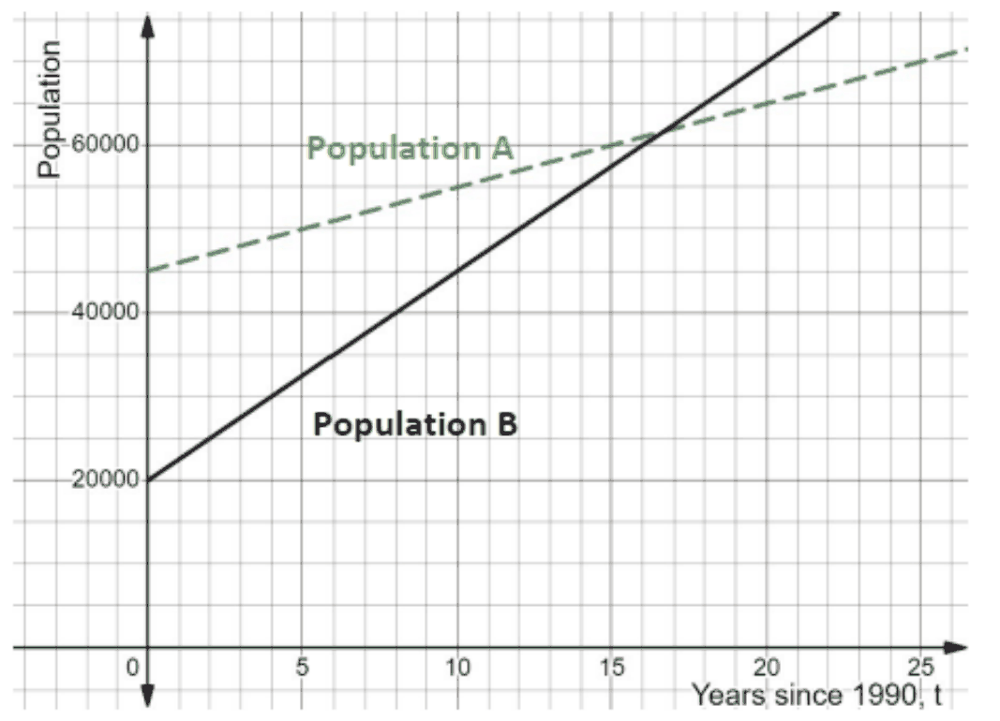
a. Find a formula for the size of each animal population, P, as a function of the number of years since 1990, t.
A: P = 45,000 + 1000t; B: P = 20,000 + 2500t
A: starts at 45,000 and reaches 60,000 at t = 15 → m = 15,000/15 = 1000 → P = 45,000 + 1000t. B: starts at 20,000 and reaches 60,000 at t = 16 → m = 40,000/16 = 2500 → P = 20,000 + 2500t.
Read each starting value at t = 0, then a second clear point.
b. Which population is growing faster than the other? Explain why.
B, because it has the larger slope
B grows by 2500 animals per year and A by 1000 per year. B has the larger slope, so it is growing faster.
Faster growth = steeper line = larger slope.
4. Recognizing Linear Data from Tables
2 lecture · 8 textbook questions
Lecture Question · Ex 8
Which of the following tables of values could represent a linear function?
a)
x
0
1
2
3
f(x)
25
30
35
40
b)
x
0
2
4
6
g(x)
10
16
26
40
c)
t
20
30
40
50
h(t)
2.4
2.2
2.0
1.8
Which tables could be linear?
a) and c) are linear; b) is not
a) x: +1, +1, +1 and f(x): +5, +5, +5 The differences in y-values are constant for equal differences in x-values ⇒ it represents a linear function. m₁ = (30 − 25)/(1 − 0) = 5, m₂ = (35 − 30)/(2 − 1) = 5, m₃ = (40 − 35)/(3 − 2) = 5 Constant slope ⇒ linear function.
b) y₂ − y₁ = 6 ≠ y₃ − y₂ = 10, but changes in x-values are constant ⇒ not linear function. m₁ = (16 − 10)/(2 − 0) = 6/2 = 3, m₂ = (26 − 16)/(4 − 2) = 10/2 = 5 m₁ ≠ m₂ ⇒ not linear function.
c) Constant change in y-values for constant change in x-values ⇒ linear function. m₁ = (2.2 − 2.4)/(30 − 20) = −0.2/10 = −0.02 m₂ = (2 − 2.2)/(40 − 30) = −0.2/10 = −0.02 m₃ = (1.8 − 2)/(50 − 40) = −0.2/10 = −0.02 Constant slope ⇒ linear function.
Check if the y-differences stay the same.
Lecture Question · Ex 9
The data in the following table lie on a line. Find formulas for each of the following functions, and give units for the slope in each case:
p decreases by 3 for each +1 in q: m = −3. p − 15 = −3(q − 3) → p = −3q + 9 + 15 = 24 − 3q.
Now q is the input.
Textbook Question · Problem 21
The percentage of people, P, below the poverty level in the US is given in Table 1.4.
Year (since 2000)
0
1
2
3
P (percentage)
11.3
11.7
12.1
12.5
a. Find a formula for the percentage in poverty as a linear function of time in years since 2000.
P = 11.3 + 0.4t
P increases by 0.4 each year (constant) and P = 11.3 at t = 0: P = 11.3 + 0.4t.
Find the yearly change and the value at t = 0.
b. Use the formula to predict the percentage in poverty in 2006.
13.7%
2006 → t = 6. P = 11.3 + 0.4(6) = 11.3 + 2.4 = 13.7%.
t = 6.
c. What is the difference between the prediction and the actual percentage, 12.3%?
1.4 percentage points
13.7 − 12.3 = 1.4 percentage points (the model overestimates).
Subtract the actual value from the prediction.
Textbook Question · Problem 23
Search and rescue teams work to find lost hikers. Members of the search team separate and walk parallel to one another through the area to be searched. Table 1.5 shows the percent, P, of lost individuals found for various separation distances, d, of the searchers.
Separation distance d (ft)
20
40
60
80
100
Approximate percent found, P
90
80
70
60
50
a. Explain how you know that the percent found, P, could be a linear function of separation distance, d.
For every 20 ft increase in d, P decreases by 10 (constant difference)
For every 20 ft increase in d, P decreases by 10: the differences are constant, so P could be linear in d.
Look at the change in P each time d goes up by 20.
b. Find P as a linear function of d.
P = 100 − 0.5d
m = −10/20 = −0.5. P − 90 = −0.5(d − 20) → P = −0.5d + 10 + 90 = 100 − 0.5d.
The slope is −10 over 20.
c. What is the slope of the function? Give units and interpret the answer.
−0.5 percent per foot: each extra foot of separation lowers the percent found by 0.5
Slope = −0.5 percent per foot: each extra foot of separation lowers the percent of lost people found by 0.5.
Units of slope = percent over feet.
d. What are the vertical and horizontal intercepts of the function? Give units and interpret the answers.
Vertical: 100% (searchers side by side); horizontal: d = 200 ft (nobody is found)
d = 0 → P = 100%: when the searchers walk side by side, everyone is found. P = 0 → 0.5d = 100 → d = 200 ft: at 200 ft apart, nobody is found.
Vertical: put d = 0. Horizontal: put P = 0.
Textbook Question · Problem 27
Table 1.6 gives the average weight, w, in pounds, of American men in their sixties for height, h, in inches.
h (inches)
68
69
70
71
w (pounds)
166
171
176
181
h (inches)
72
73
74
75
w (pounds)
186
191
196
201
a. How do you know that the data in this table could represent a linear function?
w increases by 5 for every 1 inch increase in h
For every 1 inch increase in h, w increases by 5 pounds: constant differences, so the data could be linear.
Look at the change in w for each inch.
b. Find weight, w, as a linear function of height, h. What is the slope of the line? What are the units for the slope?
w = 5h − 174; slope 5 pounds per inch
m = 5 lb/inch. w − 166 = 5(h − 68) → w = 5h − 340 + 166 = 5h − 174.
Use the point (68, 166) in point-slope form.
c. Find height, h, as a linear function of weight, w. What is the slope of the line? What are the units for the slope?
h = 0.2w + 34.8; slope 0.2 inches per pound
m = 1/5 = 0.2 inch/lb. h − 68 = 0.2(w − 166) → h = 0.2w − 33.2 + 68 = 0.2w + 34.8.
Switch the roles: now w is the input.
Textbook Question · Problem 32
Maximum heart rate (MHR), in beats per minute, a = age in years: Females: MHR = 226 − a, Males: MHR = 220 − a.
Experiments suggest that the female MHR decreases by 12 beats per minute by age 21, and by 19 beats per minute by age 33. Is this consistent with MHR being approximately linear with age?
Yes, the rates are almost equal (12/21 ≈ 0.57 and 19/33 ≈ 0.58)
12/21 ≈ 0.57 and 19/33 ≈ 0.58 beats per minute per year. The rates are almost the same, so it is consistent with an approximately linear function.
Linear = about the same rate at both ages.
Textbook Question · Problem 33
Maximum heart rate (MHR), in beats per minute, a = age in years: Females: MHR = 226 − a, Males: MHR = 220 − a.
Experiments suggest that the male MHR decreases by 9 beats per minute by age 21, and by 26 beats per minute by age 33. Is this consistent with MHR being approximately linear with age?
No, the rates are very different (9/21 ≈ 0.43 and 26/33 ≈ 0.79)
9/21 ≈ 0.43 and 26/33 ≈ 0.79. The rates are very different, so it is not consistent with MHR being approximately linear.
Compare the rate at each age.
5. Families of Linear Functions
2 lecture · 2 textbook questions
Lecture Question · Ex 10
Same as Textbook Problem 9
The figure below shows four lines given by y = b + mx. Match the lines to the conditions on the parameters m and b.
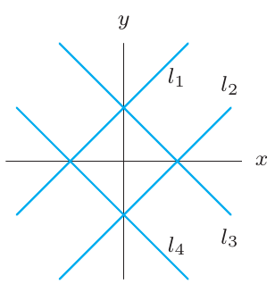
a) m > 0, b > 0
l₁
m > 0, b > 0 → l₁ (b is on the y-axis)
Rising line, crossing the y-axis above the origin.
b) m < 0, b > 0
l₃
m < 0, b > 0 → l₃
Falling line, crossing the y-axis above the origin.
c) m > 0, b < 0
l₂
m > 0, b < 0 → l₂
Rising line, crossing the y-axis below the origin.
d) m < 0, b < 0
l₄
m < 0, b < 0 → l₄
Falling line, crossing the y-axis below the origin.
Lecture Question · Ex 11
Same as Textbook Problem 10
Use the figure below.
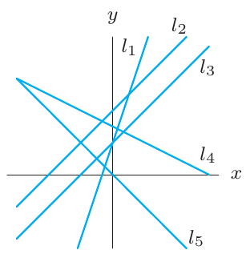
i. Which two lines in the figure below have the same slope?
l₂ and l₃
Same slope = parallel lines. l₂ and l₃ have same slopes.
Same slope = parallel lines.
i. Of these two lines, which has the larger y-intercept?
l₂
Larger y-intercept = b value is larger. l₂ has larger y-intercept.
Higher crossing point on the y-axis = larger b.
ii. Which two lines have the same y-intercept?
l₁ and l₃
Same y-intercept = they intersect the y-axis at the same point. l₁ and l₃ have same y-intercept.
Same y-intercept = they meet on the y-axis.
ii. Of these two lines, which has the larger slope?
l₁
Larger slope = line moving up faster. l₁ has larger slope.
Steeper rising line = larger slope.
Textbook Question · Problem 9
Same as Lecture Example 10
Figure 1.21 shows four lines given by equation y = b + mx. Match the lines to the conditions on the parameters m and b.
(a) m > 0, b > 0
l₁
m > 0: the line rises; b > 0: it crosses the y-axis above the origin → l₁.
Rising line, crossing the y-axis above the origin.
(b) m < 0, b > 0
l₃
m < 0: the line falls; b > 0: it crosses the y-axis above the origin → l₃.
Falling line, crossing the y-axis above the origin.
(c) m > 0, b < 0
l₂
m > 0: the line rises; b < 0: it crosses the y-axis below the origin → l₂.
Rising line, crossing the y-axis below the origin.
(d) m < 0, b < 0
l₄
m < 0: the line falls; b < 0: it crosses the y-axis below the origin → l₄.
Falling line, crossing the y-axis below the origin.
Textbook Question · Problem 10
Same as Lecture Example 11
Use Figure 1.22.
(a) Which two lines in Figure 1.22 have the same slope?
l₂ and l₃
l₂ and l₃ are parallel, so they have the same slope.
Same slope = parallel lines.
(a) Of these two lines, which has the larger y-intercept?
l₂
l₂ crosses the y-axis higher than l₃, so l₂ has the larger y-intercept (larger b value).
Higher crossing point on the y-axis = larger b.
(b) Which two lines have the same y-intercept?
l₁ and l₃
l₁ and l₃ intersect the y-axis at the same point, so they have the same y-intercept.
Same y-intercept = they meet on the y-axis.
(b) Of these two lines, which has the larger slope?
l₁
l₁ is steeper (moving up faster), so l₁ has the larger slope.
Steeper rising line = larger slope.
Lecture 3Average Rate of Change and Relative Change (1.3)
10 lecture · 50 textbook · 2 past exam questions
متوسط معدل التغير (Average rate of change) = كم تغير الشي ÷ كم وقت. يعني سرعة التغير بالمتوسط.
📏 ARCالتغير كل سنة بالوحدات (inch/year)
📊 RRCالتغير كل سنة بالنسبة (% per year)
🚗 تشبيه: قطعتي 300 كم بـ 3 ساعات ← سرعتج بالمتوسط 100 كم/ساعة، حتى لو وقفتي بالنص أو سرعتي. ما يهمنا إلا البداية والنهاية.
بهالمحاضرة بتتعلمين 3 أشياء:
ARC من جدول ورسم ومعادلة
التغير النسبي (Relative change) و RRC
التزايد والتقعر (Concavity) ومتوسط السرعة (Average velocity)
سيارة تبدأ بطيئة وبعدين تسرع. رسم المسافة مع الوقت؟
المسافة تزيد، وتزيد أسرع وأسرع ← ∪.
🔑 احسبي ARC بين كل نقطتين ورا بعض: يكبر ← ∪ · يصغر ← ∩ · ثابت ← خطي
Ex 9t: 0, 5, 10, 15, 20, 25, 30 و f(t): 12.6, 13.1, 14.1, 16.2, 20.0, 29.6, 42.7. يتزايد ولا يتناقص؟ مقعر لفوق ولا لتحت؟
القيم تزيد من 12.6 لين 42.7 ← Increasing
ARC (كل مرة ÷ 5): 0.1, 0.2, 0.42
0.76, 1.92, 2.62 ← قاعد يكبر
Increasing, concave up
F(t): 15, 22, 28, 33, 37, 40 (t تزيد 10 كل مرة). شكله؟
الزيادات 7, 6, 5, 4, 3 قاعدة تصغر ← ∩.
v = (s(b) − s(a)) ÷ (b − a)نفس ARC بس للمكان أو الارتفاع
موجب ← يطلع أو يبعد ⬆️ · سالب ← ينزل أو يقرب ⬇️
Ex 10جريب فروت انرمى لفوق. t: 0 → 6، y (feet): 6, 90, 142, 162, 150, 106, 30. متوسط السرعة من t = 4 لـ t = 6؟ وليش الإشارة؟
من الجدول: y(4) = 150 , y(6) = 30
v = (30 − 150) ÷ (6 − 4) = −120 ÷ 2 = −60
سالب ← الارتفاع ينقص ← قاعد يطيح
−60 ft/sec (سالب لأنه نازل)
نفس الجريب فروت: متوسط السرعة من t = 0 لـ t = 2؟
(142 − 6) ÷ 2 = 68، موجب لأنه قاعد يطلع.
ARC = Δy / Δx · RC = (new − old) ÷ old · RRC = ARC ÷ f(a)كل وحدة بسطر
إذا السؤال فيه…
سوّي
"change"
new − old
"average rate of change"
(f(b) − f(a)) ÷ (b − a)
"increased faster"
قارني الـ ARC، الأكبر أسرع
"interval where ARC positive"
وين الأرقام تزيد ورا بعض
"slope of which line"
الخط القاطع (Secant line)
"relative / percent change"
÷ القديم × 100%
"relative rate of change"
ARC ÷ قيمة البداية (% per year)
"concave" من جدول
ARC المتتالية: تكبر ∪ ، تصغر ∩
"average velocity"
نفس ARC للمكان + فسري الإشارة
⚠️ أخطاء شائعة: تقسمين RC أو RRC على القيمة الأخيرة بدل الأولى · تستخدمين أرقام النص بـ ARC · نسيان الإشارة السالبة · نسيان الوحدة
1. Average Rate of Change from Tables & Data
2 lecture · 14 textbook questions
Lecture Question · Ex 1
The table shows the height of the winning pole vault at the Olympics during the 1960s and 1990s. Winning height in men's Olympic pole vault (approximate):
Year
1960
1964
1968
…
1992
1996
2000
Height (inches)
185
201
213
…
228
233
232
i. Find the rate of change of the winning height between 1960 and 1968, and between 1992 and 2000.
ii. In which of these two periods did the height increase faster?
1960–1968, because its ARC is larger
Since ARC₁ (3.5) is larger than ARC₂ (0.5), the height increased faster in the first period (the 1960s).
Larger ARC = faster increase.
Lecture Question · Ex 2
Similar problem (different numbers): Textbook Problem 24
The table below shows the production of tobacco in the US (millions of pounds).
Year
2003
2004
2005
2006
Production
802
882
645
728
Year
2007
2008
2009
2010
Production
788
801
823
719
i. What is the average rate of change (ARC) in tobacco production between 2003 and 2010? Give units and interpret your answer in terms of tobacco production.
≈ −11.86 million pounds/year: production decreased by about 11.86 million pounds per year
ARC = (719 − 802)/(2010 − 2003) = −83/7 ≈ −11.86 million pounds/year. Tobacco production decreased by about 11.86 million pounds per year between 2003 and 2010. (Note: the lecture notes write −11.84; −83/7 = −11.857 ≈ −11.86.)
Use only the first and last values.
ii. During this seven-year period, is there any interval during which the average rate of change was positive? If so, when?
Yes: 2003–2004 and 2005–2009
The ARC was positive during 2003–2004 (802 → 882) and 2005–2009 (645 → 728 → 788 → 801 → 823). E.g. ARC = (882 − 802)/(2004 − 2003) = 80 million pounds/year.
Positive ARC = the value went up.
Textbook Question · Problem 15
Table 1.11 shows world bicycle production, in millions.
Year
1950
1960
1970
1980
1990
2000
Bicycles
11
20
36
62
92
101
a. Find the change in bicycle production between 1950 and 2000. Give units.
90 million bicycles
Change = 101 − 11 = 90 million bicycles.
Change = final − initial.
b. Find the average rate of change in bicycle production between 1950 and 2000. Give units and interpret your answer in terms of bicycle production.
1.8 million bicycles/year: production increased by 1.8 million bicycles per year
ARC = 90/(2000 − 1950) = 90/50 = 1.8 million bicycles per year.
Divide the change by 50 years.
Textbook Question · Problem 16
Table 1.12 gives the net sales of The Gap, Inc (millions of dollars).
Year
2003
2004
2005
Sales
15,854
16,267
16,019
Year
2006
2007
2008
Sales
15,923
15,763
14,526
a. Find the change in net sales between 2005 and 2008.
−1,493 million dollars
Change = 14,526 − 16,019 = −1,493 million dollars.
Final − initial; sales went down.
b. Find the average rate of change in net sales between 2005 and 2008. Give units and interpret your answer.
≈ −497.7 million dollars/year: sales decreased by about 497.7 million dollars per year
Table 1.15 shows world population, P (billions of people), world passenger automobile production, A (millions of cars), and world cell phone subscribers, C (millions of subscribers).
Year
1995
2000
2005
P (billions)
5.68
6.07
6.45
A (millions)
36.1
41.3
45.9
C (millions)
91
740
2168
a. P Find the average rate of change of P between 1995 and 2005, with units.
b. (i) Between 1995 and 2005, which increased faster: population or the number of automobiles?
Automobiles
P and A have different units, so compare how fast each grew relative to its 1995 value: automobiles 9.8/36.1 ≈ 27% versus population 0.77/5.68 ≈ 14% over the 10 years. Automobiles increased faster.
Compare how much each grew compared with its starting value.
b. (ii) Between 1995 and 2005, which increased faster: population or the number of cell phone subscribers?
Cell phone subscribers
Cell phone subscribers grew from 91 to 2168 million (more than 20 times), while population grew only about 14%. Cell phone subscribers increased faster.
Cell phones grew enormously.
Textbook Question · Problem 24
Similar problem (different numbers): Lecture Example 2
Table 1.16 shows the production of tobacco in the US (millions of pounds).
Year
1996
1997
1998
1999
Production
1517
1787
1480
1293
Year
2000
2001
2002
2003
Production
1053
991
879
831
a. What is the average rate of change in tobacco production between 1996 and 2003? Give units and interpret your answer in terms of tobacco production.
−98 million pounds/year: production decreased by 98 million pounds per year
b. During this seven-year period, is there any interval during which the average rate of change was positive? If so, when?
Yes: 1996–1997 only
Only 1996–1997 (1517 → 1787) increased.
Find where the number goes up.
Textbook Question · Problem 25
Do you expect the average rate of change (in units per year) of each of the following to be positive or negative? Explain your reasoning.
a. Number of acres of rain forest in the world.
Negative
Negative: rain forests are being cut down, so the number of acres decreases.
Shrinking → negative.
b. Population of the world.
Positive
Positive: the world population is increasing.
Growing → positive.
c. Number of polio cases each year in the US, since 1950.
Negative
Negative: vaccination made polio cases decrease.
Decreasing → negative.
d. Height of a sand dune that is being eroded.
Negative
Negative: erosion makes the dune lower.
Eroded = getting smaller.
e. Cost of living in the US.
Positive
Positive: prices (cost of living) increase over time.
Prices go up → positive.
Textbook Question · Problem 27
Table 1.17 shows the total US labor force, L, in thousands of workers. Find the average rate of change between 1940 and 2000; between 1940 and 1960; between 1980 and 2000. Give units and interpret your answers in terms of the labor force.
Year
1940
1960
1980
2000
L
47,520
65,778
99,303
136,891
1940–2000 ARC between 1940 and 2000?
≈ 1,489.5 thousand workers/year
ARC = (136,891 − 47,520)/60 = 89,371/60 ≈ 1,489.5 thousand workers/year: the labor force grew by about 1,489,500 workers per year.
Table 1.18 gives the revenues, R, of General Motors (billions of dollars).
Year
2003
2004
2005
R
184.0
192.9
193.1
Year
2006
2007
2008
R
205.6
181.1
149.0
a. Find the change in revenues between 2003 and 2008.
−35 billion dollars
Change = 149.0 − 184.0 = −35 billion dollars.
Final − initial.
b. Find the average rate of change in revenues between 2003 and 2008. Give units and interpret your answer.
−7 billion dollars/year: revenue decreased by 7 billion dollars per year
ARC = −35/5 = −7 billion dollars/year.
Divide by 5 years.
c. From 2003 to 2008, were there any one-year intervals during which the average rate of change was negative? If so, which?
Yes: 2006–2007 and 2007–2008
205.6 → 181.1 (2006–2007) and 181.1 → 149.0 (2007–2008) decreased.
Find where the value goes down.
Textbook Question · Problem 30
The number of US households with cable television was 12,168,450 in 1977 and 73,365,880 in 2003.
Estimate the average rate of change in the number of US households with cable television during this 26-year period. Give units and interpret your answer.
≈ 2,353,747 households/year: cable households increased by about 2.35 million per year
b. Explain the sign and relative magnitudes of your results in terms of creatinine.
Negative: the concentration is decreasing, and it decreases more slowly over time
Both rates are negative, so creatinine concentration is decreasing. |−0.016| < |−0.019|, so it decreases more slowly over time.
Compare the sizes of the two rates.
Textbook Question · Problem 33
The population of the world reached 1 billion in 1804, 2 billion in 1927, 3 billion in 1960, 4 billion in 1974, 5 billion in 1987 and 6 billion in 1999. Find the average rate of change of the population of the world, in people per minute, during each of these intervals. (1 year = 525,600 minutes.)
1804–1927 People per minute?
≈ 15.5
1 billion people in 123 years: 1,000,000,000 ÷ (123 × 525,600) ≈ 15.5 people/min.
Table 1.20 gives the sales, S, of Intel Corporation (millions of dollars).
Year
2003
2004
2005
S
30,100
34,200
38,800
Year
2006
2007
2008
S
35,400
38,300
37,600
a. Find the change in sales between 2003 and 2008.
7,500 million dollars
Change = 37,600 − 30,100 = 7,500 million dollars.
Final − initial.
b. Find the average rate of change in sales between 2003 and 2008. Give units and interpret your answer.
1,500 million dollars/year: sales increased by 1,500 million dollars per year
ARC = 7,500/5 = 1,500 million dollars/year.
Divide by 5 years.
2. Average Rate of Change from Graphs & Formulas
2 lecture · 7 textbook questions
Lecture Question · Ex 3
Use the given figure to estimate the average rate of change (ARC) of the number of farms in the US between 1950 and 1970.
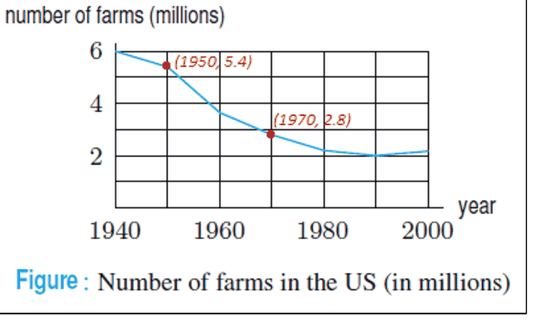
ARC = ?
−0.13 million farms/year
ARC = (2.8 − 5.4)/(1970 − 1950) = −2.6/20 = −0.13 million farms/year. The number of farms in the US decreased by 0.13 million (130,000) farms per year.
Read the two points, then rise ÷ run.
Lecture Question · Ex 4
f(x) = √x
(a) Find the average rate of change (ARC) of y = f(x) = √x between x = 1 and x = 4.
Graph Illustrate your answer graphically. The ARC is the slope of which line?
The secant line through (−2, 16) and (1, 7)
The ARC = −3 is the slope of the secant line joining (−2, 16) and (1, 7) on the graph of f(x) = 3x² + 4.
Join the two points of the graph.
Textbook Question · Problem 14
When a deposit of $1000 is made into an account paying 8% interest, compounded annually, the balance, $B, in the account after t years is given by B = 1000(1.08)ᵗ.
Find the average rate of change in the balance over the interval t = 0 to t = 5. Give units and interpret your answer in terms of the balance in the account.
≈ 93.87 dollars/year: the balance grows by about $93.87 per year
Figure 1.7 in Problem 14 of Section 1.1 shows the amount of nicotine N = f(t), in mg, in a person's bloodstream as a function of the time, t, in hours, since the last cigarette.
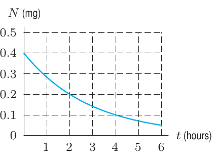
a. Is the average rate of change in nicotine level positive or negative? Explain.
Negative, because nicotine is decreasing
The nicotine level decreases over time, so the average rate of change is negative.
Decreasing → negative.
b. Find the average rate of change in the nicotine level between t = 0 and t = 3. Give units and interpret your answer in terms of nicotine.
≈ −0.087 mg/hour: nicotine decreased by about 0.087 mg per hour
ARC = (f(3) − f(0))/3 ≈ (0.14 − 0.4)/3 = −0.26/3 ≈ −0.087 mg/hour. (If f(3) is read as 0.15, ARC ≈ −0.083 mg/hour; either way about −0.08 to −0.09.)
f(0) = 0.4 mg.
Textbook Question · Problem 34
Problems 34–35 refer to Figure 1.38, which shows the contraction velocity of a muscle as a function of the load it pulls against.
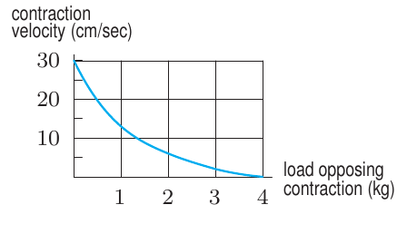
a. In terms of the muscle, interpret the vertical intercept.
30 cm/sec: the contraction velocity with no load
Vertical intercept = 30 cm/sec: the contraction velocity when there is no load.
Load = 0.
b. In terms of the muscle, interpret the horizontal intercept.
4 kg: the load at which the muscle cannot contract
Horizontal intercept = 4 kg: the load at which the contraction velocity is zero (the muscle cannot contract).
Velocity = 0.
Textbook Question · Problem 35
Use Figure 1.38 (contraction velocity of a muscle against load).
(a) Find the change in muscle contraction velocity when the load changes from 1 kg to 3 kg. Give units.
≈ −11 cm/sec
Velocity ≈ 14 cm/sec at 1 kg and ≈ 3 cm/sec at 3 kg. Change ≈ 3 − 14 = −11 cm/sec.
Final − initial.
(b) Find the average rate of change in the contraction velocity between 1 kg and 3 kg. Give units.
≈ −5.5 (cm/sec)/kg
ARC ≈ −11/(3 − 1) = −5.5 (cm/sec) per kg.
Divide the change by 2 kg.
3. Relative Change & Relative Rate of Change
2 lecture · 13 textbook · 2 past exam questions
Lecture Question · Ex 5
Find the relative change (RC) in the price of a $75.99 pair of jeans if the sale price is $52.99.
RC = ?
≈ −0.303 = −30.3%
RC = (52.99 − 75.99)/75.99 = −23/75.99 ≈ −0.303 = −30.3%. The discount in the price is about 30%.
Divide the change by the ORIGINAL price.
Lecture Question · Ex 6
Use the given figure to estimate the relative rate of change (RRC) of the number of farms in the US between 1950 and 1970.
RRC = ?
≈ −2.4% per year
From Ex 3, ARC = −0.13 million/year. RRC = ARC/f(1950) = −0.13/5.4 ≈ −0.0241 = −2.41% per year. The number of farms decreased by about 2.41% per year.
RRC = ARC ÷ original value.
Textbook Question · Problem 5
In Problems 5–8, find the relative, or percent, change.
On May 11, 2009, the cost to mail a letter in the US was raised from 42 cents to 44 cents.
Find the relative change in the cost.
≈ 4.76%
RC = (44 − 42)/42 = 2/42 ≈ 0.0476 = 4.76%.
Divide by the original 42 cents.
Textbook Question · Problem 49
The US Consumer Price Index (CPI) is a measure of the cost of living. The inflation rate is the annual relative rate of change of the CPI. Use the January data in Table 1.22 to estimate the inflation rate for each of years 2005–2008.
Year
2005
2006
2007
2008
2009
CPI
190.7
198.3
202.416
211.08
211.143
2005 Inflation rate in 2005?
≈ 3.99%
(198.3 − 190.7)/190.7 ≈ 3.99%.
Divide by the earlier year's CPI.
2006 Inflation rate in 2006?
≈ 2.08%
(202.416 − 198.3)/198.3 ≈ 2.08%.
Divide by 198.3.
2007 Inflation rate in 2007?
≈ 4.28%
(211.08 − 202.416)/202.416 ≈ 4.28%.
Divide by 202.416.
2008 Inflation rate in 2008?
≈ 0.03%
(211.143 − 211.08)/211.08 ≈ 0.03%.
A very small change.
Textbook Question · Problem 50
During 2008 the US economy stopped growing and began to shrink. Table 1.23 gives quarterly data on the US Gross Domestic Product (GDP).
t (years since 2008)
0
0.25
0.5
0.75
1.0
GDP (trillion dollars)
14.15
14.29
14.41
14.2
14.09
a. t = 0 Estimate the relative growth rate (percent per year) at t = 0.
The table below gives information about the number of patients diagnosed with pancreatic cancer in the United States.
Year
1997
2002
2004
Number of cases
27000
30300
31860
a. Find the average rate of change of the number of cases from 1997 to 2004. Give units and interpret your answer in terms of the number of diagnosed pancreatic cases.
≈ 694.3 cases/year: cases increased by about 694 per year
b. Find the relative rate of change of the number of cases from 1997 to 2004. Give units and interpret your answer in terms of the number of diagnosed pancreatic cases.
≈ 2.57% per year: cases increased by about 2.57% per year
Using the given figure, estimate the intervals over which:
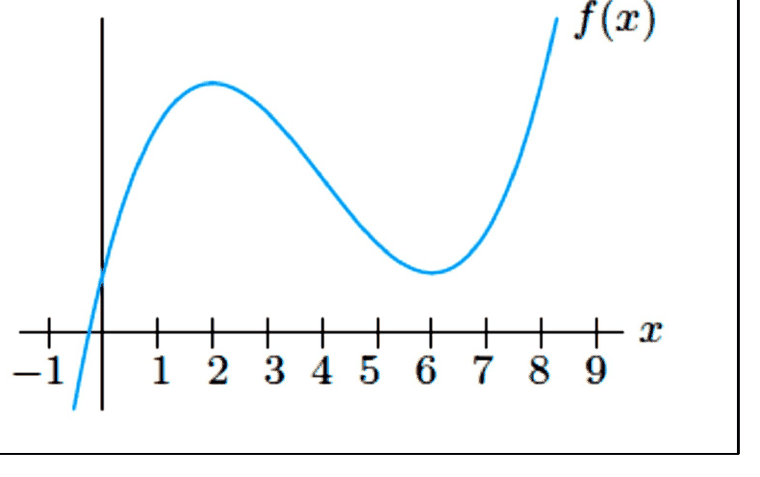
(a) The function is increasing; decreasing.
Increasing: x < 2 and x > 6; decreasing: 2 < x < 6
The graph rises up to x = 2, falls from x = 2 to x = 6, then rises again after x = 6.
Read from left to right: up, down, up.
(b) The graph is concave up; concave down.
Concave down: x < 4; concave up: x > 4
The graph bends downward (∩) until about x = 4, then bends upward (∪) after x = 4.
∩ = concave down; ∪ = concave up.
Lecture Question · Ex 8
Same as Textbook Problem 10
For which pairs of consecutive points in the given figure is the function:
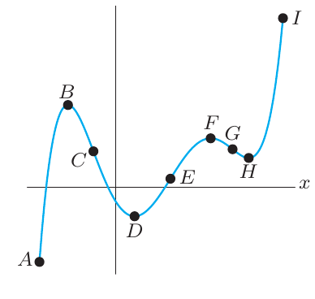
i. Increasing and concave up?
D–E and H–I
D–E and H–I: going up while bending upward.
Up + ∪.
ii. Increasing and concave down?
A–B and E–F
A–B and E–F: going up while bending downward.
Up + ∩.
iii. Decreasing and concave up?
C–D and G–H
C–D and G–H: going down while bending upward.
Down + ∪.
iv. Decreasing and concave down?
B–C and F–G
B–C and F–G: going down while bending downward.
Down + ∩.
Lecture Question · Ex 9
Use the following values of f(t).
t
0
5
10
15
20
25
30
f(t)
12.6
13.1
14.1
16.2
20.0
29.6
42.7
(i) Does f appear to be increasing or decreasing?
Increasing
f(t) increases from 12.6 to 42.7 as t goes from 0 to 30, so f is increasing.
The values keep getting bigger.
(ii) Do you think its graph is concave up or concave down?
Concave up
The ARC between consecutive points is 0.1, 0.2, 0.42, 0.76, 1.92, 2.62: the rate of change is increasing, so the graph is concave up.
Growing faster and faster = concave up.
Textbook Question · Problem 1
In Problems 1–4, decide whether the graph is concave up, concave down, or neither.
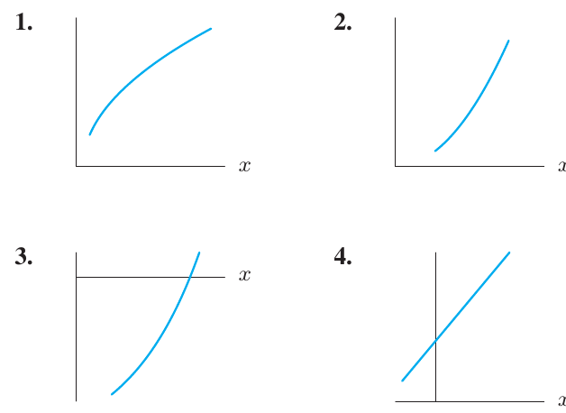
Graph 1
Concave down
Graph 1 bends downward: concave down.
∩ shape.
Textbook Question · Problem 2
Decide whether the graph is concave up, concave down, or neither.
Graph 2
Concave up
Graph 2 bends upward: concave up.
∪ shape.
Textbook Question · Problem 3
Decide whether the graph is concave up, concave down, or neither.
Graph 3
Concave up
Graph 3 bends upward: concave up.
∪ shape.
Textbook Question · Problem 4
Decide whether the graph is concave up, concave down, or neither.
Graph 4
Neither
Graph 4 is a straight line: neither concave up nor concave down.
A line has no bending.
Textbook Question · Problem 9
Table 1.10 gives values of a function w = f(t).
t
0
4
8
12
16
20
24
w
100
58
32
24
20
18
17
Is this function increasing or decreasing? Is the graph of this function concave up or concave down?
Decreasing, concave up
w decreases from 100 to 17. The decreases get smaller (−42, −26, −8, −4, −2, −1), so the rate of change is increasing (less negative): concave up.
Falling more and more slowly = concave up.
Textbook Question · Problem 10
Same as Lecture Example 8
For which pairs of consecutive points in Figure 1.33 is the function graphed:
a. Increasing and concave up
D–E and H–I
D–E and H–I.
Up + ∪.
b. Increasing and concave down
A–B and E–F
A–B and E–F.
Up + ∩.
c. Decreasing and concave up
C–D and G–H
C–D and G–H.
Down + ∪.
d. Decreasing and concave down
B–C and F–G
B–C and F–G.
Down + ∩.
Textbook Question · Problem 11
Graph a function f(x) which is increasing everywhere and concave up for negative x and concave down for positive x.
Which description matches such a graph?
Always rising; bends upward (∪) left of x = 0 and downward (∩) right of x = 0
Increasing everywhere means it always rises. Concave up for x < 0 (∪) and concave down for x > 0 (∩): an S-shaped rising curve.
Like a stretched "S" going up.
Textbook Question · Problem 26
Figure 1.37 shows the length, L, in cm, of a sturgeon (a type of fish) as a function of the time, t, in years.
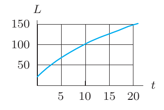
a. Is the function increasing or decreasing? Is the graph concave up or concave down?
Increasing, concave down
The length increases, but more and more slowly: increasing and concave down.
Rising and flattening = concave down.
b. Estimate the average rate of growth of the sturgeon between t = 5 and t = 15. Give units and interpret your answer in terms of the sturgeon.
≈ 6 cm/year: the sturgeon grows about 6 cm per year
L(5) ≈ 65 cm and L(15) ≈ 125 cm: ARC ≈ (125 − 65)/10 ≈ 6 cm/year.
Divide the growth by 10 years.
Textbook Question · Problem 38
Values of F(t), G(t), and H(t) are in Table 1.21.
t
10
20
30
40
50
60
F(t)
15
22
28
33
37
40
G(t)
15
18
21
24
27
30
H(t)
15
17
20
24
29
35
Which graph is concave up and which is concave down? Which function is linear?
F: concave down; G: linear; H: concave up
F increases by 7, 6, 5, 4, 3 (decreasing rate) → concave down. G increases by 3 each time → linear. H increases by 2, 3, 4, 5, 6 (increasing rate) → concave up.
Look at the differences of each column.
Textbook Question · Problem 39
Experiments suggest that the male maximum heart rate decreases by 9 beats per minute during the first 21 years of his life, and by 26 beats per minute during the first 33 years.
If you model the maximum heart rate as a function of age, should you use a function that is increasing or decreasing, concave up or concave down?
Decreasing, concave down
The heart rate decreases. The rate of decrease grows: 9/21 ≈ 0.43 then 26/33 ≈ 0.79 beats/min per year, so it falls faster and faster → concave down.
Falling faster and faster = concave down.
Textbook Question · Problem 40
A car starts slowly and then speeds up. Eventually the car slows down and stops.
Graph the distance that the car has traveled against time. Which description matches the graph?
Increasing: concave up at first, then concave down, then flat
Speeding up → distance rises faster (concave up ∪). Slowing down → rises more slowly (concave down ∩). Stopped → flat.
Speeding up = ∪; slowing down = ∩.
5. Average Velocity
1 lecture · 5 textbook questions
Lecture Question · Ex 10
A grapefruit is thrown up in the air. The height of the grapefruit above the ground first increases and then decreases. Height, y, of the grapefruit above the ground t seconds after it is thrown:
t (sec)
0
1
2
3
4
5
6
y (feet)
6
90
142
162
150
106
30
Find the average velocity of the grapefruit over the interval t = 4 to t = 6. Explain the sign of your answer.
−60 ft/sec; negative because the grapefruit is falling
Average velocity = (30 − 150)/(6 − 4) = −120/2 = −60 ft/sec. It is negative because the height is decreasing (the grapefruit is falling).
Average velocity = change in distance ÷ change in time.
Textbook Question · Problem 21
Figure 1.35 shows a particle's distance from a point.
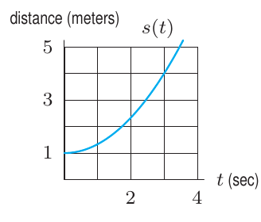
What is the particle's average velocity from t = 0 to t = 3?
1 m/sec
v = (s(3) − s(0))/(3 − 0) = (4 − 1)/3 = 1 m/sec.
Read s(0) and s(3).
Textbook Question · Problem 22
Figure 1.36 shows a particle's distance from a point.
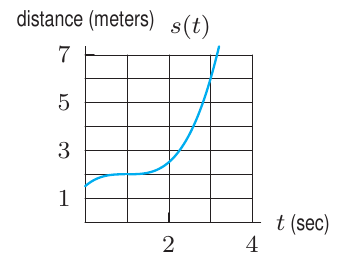
What is the particle's average velocity from t = 1 to t = 3?
2 m/sec
v = (s(3) − s(1))/(3 − 1) = (6 − 2)/2 = 2 m/sec.
Read s(1) and s(3).
Textbook Question · Problem 23
At time t in seconds, a particle's distance s(t), in cm, from a point is given in the table.
t
0
3
6
10
13
s(t)
0
72
92
144
180
What is the average velocity of the particle from t = 3 to t = 10?
≈ 10.29 cm/sec
v = (144 − 72)/(10 − 3) = 72/7 ≈ 10.29 cm/sec.
7 seconds.
Textbook Question · Problem 37
In an experiment, a lizard is encouraged to run as fast as possible. Figure 1.39 shows the distance run in meters as a function of the time in seconds.
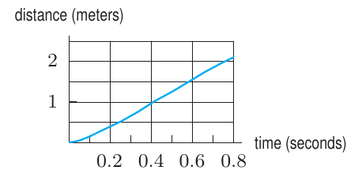
a. If the lizard were running faster and faster, what would be the concavity of the graph? Does this match what you see?
Concave up; no, the graph is nearly a straight line
Running faster and faster → distance grows faster → concave up. The graph is nearly a straight line, so it does not match.
Faster and faster = ∪.
b. Estimate the average velocity of the lizard during this 0.8 second experiment.
≈ 2.6 m/sec
The lizard ran about 2.1 m in 0.8 sec: v ≈ 2.1/0.8 ≈ 2.6 m/sec.
Total distance ÷ 0.8.
Textbook Question · Problem 41
Figure 1.40 shows the position of an object at time t.
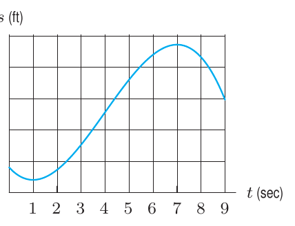
a. Draw a line on the graph whose slope represents the average velocity between t = 2 and t = 8. Which line is it?
The secant line joining the points on the graph at t = 2 and t = 8
The average velocity between t = 2 and t = 8 is the slope of the secant line joining the points at t = 2 and t = 8.
Average velocity = slope of the secant line.
b. Is average velocity greater between t = 0 and t = 3 or between t = 3 and t = 6?
Between t = 3 and t = 6
The graph rises much more between t = 3 and t = 6 than between t = 0 and t = 3, so the average velocity is greater there.
Steeper secant = greater velocity.
c. Is average velocity positive or negative between t = 6 and t = 9?
Negative
The position at t = 9 is lower than at t = 6, so the average velocity is negative.
Ending lower = negative.
Lecture 4Exponential Functions (1.5)
6 lecture · 31 textbook · 1 past exam questions
الدالة الأُسّية (Exponential function) يعني الكمية تنضرب بنفس الرقم كل سنة (أو كل ساعة).
📈 نمو (Growth)تنضرب برقم أكبر من 1، مثل 1.05
📉 تناقص (Decay)تنضرب برقم أصغر من 1، مثل 0.94
🐷 تشبيه: حصالة كل سنة اللي فيها ينضرب بـ 1.05 ← هذا أُسّي. لو كل سنة ينزاد عليها 5 دنانير بس ← هذا خطي.
بهالمحاضرة بتتعلمين 4 أشياء:
القانون P = P₀at ومعامل النمو a
التناقص الأُسّي (Exponential decay)
الفرق بين الخطي والأُسّي (Linear vs. Exponential)
كيف تطلعين القانون من رقمين
P = P₀ atP₀ = البداية · a = معامل النمو
P₀ = الكمية بالبداية (Initial value) لما t = 0، هو الرقم اللي قدام
a = معامل النمو (Growth factor)، الرقم اللي تنضرب فيه كل وحدة زمن
r = نسبة النمو (Growth rate)
a = 1 + r ⟺ r = a − 1مثال: a = 1.034 ← r = 3.4%
🔑 a > 1 ← تزيد 📈 | 0 < a < 1 ← تنقص 📉 | أكبر a = أسرع نمو
اقسمي كل قيمة على اللي قبلها. إذا طلع نفس الرقم ← هذا المعامل والدالة أُسّية.
Ex 1سكان بوركينا فاسو (بالملايين) كل سنتين: 12.853 (2003)، 13.747 (2005)، 14.721 (2007)، 15.757 (2009). أوجدي a.
اقسمي: 13.747 ÷ 12.853 ≈ 1.0695
تأكدي: 14.721 ÷ 13.747 ≈ 1.07 نفس الرقم تقريباً ✓
بس هذا معامل سنتين: a2 ≈ 1.0695
خذي الجذر: a = (1.0695)1/2 ≈ 1.034
a ≈ 1.034 ← نمو 3.4% بالسنة
⚠️ إذا الجدول كل سنتين، القسمة تعطيك a2 مو a. لازم الجذر!
Ex 2سكان العالم P = 6.4(1.0126)t بالبليون، و t سنين من 2004. (i) نسبة النمو؟ (ii) السكان 2004؟ (iii) توقع 2010؟
(i) r = 1.0126 − 1 = 0.0126 = 1.26%
(ii) 2004 هي البداية ← t = 0، وأي رقم أُس صفر = 1: P = 6.4 × 1 = 6.4
iii. What does this model predict for the world population in 2010?
6.9 billion
2010 ⇒ t = 6 P = 6.4(1.0126)⁶ = 6.9 billions
t = 2010 − 2004 = 6.
Textbook Question · Problem 1
The following functions give the populations of four towns with time t in years: (i) P = 600(1.12)ᵗ (ii) P = 1,000(1.03)ᵗ (iii) P = 200(1.08)ᵗ (iv) P = 900(0.90)ᵗ
a. Which town has the largest percent growth rate? What is the percent growth rate?
(i), 12%
Growth factors: 1.12, 1.03, 1.08, 0.90. The largest is 1.12 → town (i), r = 12%.
Largest base = fastest growth.
b. Which town has the largest initial population? What is that initial population?
(ii), 1,000
The initial population is the number in front (t = 0): the largest is 1,000 → town (ii).
P₀ is the coefficient.
c. Are any of the towns decreasing in size? If so, which one(s)?
Yes, (iv)
Only (iv) has a base less than 1 (0.90), so it decreases (10% per year).
Base < 1 = decay.
Textbook Question · Problem 2
Each of the following functions gives the amount of a substance present at time t. In each case, give the amount present initially (at t = 0), state whether the function represents exponential growth or decay, and give the percent growth or decay rate.
The consumer price index (CPI) for a given year is the amount of money in that year that has the same purchasing power as $100 in 1983. At the start of 2009, the CPI was 211.
Write a formula for the CPI as a function of t, years after 2009, assuming that the CPI increases by 2.8% every year.
(a) Make a table of values for y = eˣ using x = 0, 1, 2, 3.
1, 2.718, 7.389, 20.086
e⁰ = 1, e¹ ≈ 2.718, e² ≈ 7.389, e³ ≈ 20.086.
e⁰ = 1.
(b) Plot the points found in part (a). Does the graph look like an exponential growth or decay function?
Growth
The values increase faster and faster: exponential growth.
Getting bigger = growth.
(c) Make a table of values for y = e⁻ˣ using x = 0, 1, 2, 3.
1, 0.368, 0.135, 0.050
e⁰ = 1, e⁻¹ ≈ 0.368, e⁻² ≈ 0.135, e⁻³ ≈ 0.050.
e⁻ˣ = 1/eˣ.
(d) Plot the points found in part (c). Does the graph look like an exponential growth or decay function?
Decay
The values decrease toward 0: exponential decay.
Getting smaller = decay.
Textbook Question · Problem 14
Graph y = 100e⁻⁰·⁴ˣ.
Describe what you see.
Starts at 100 and decreases, concave up, getting closer to 0 (exponential decay)
At x = 0, y = 100. The negative exponent makes it decrease, more and more slowly, approaching the x-axis: exponential decay, concave up.
e to a negative power = decay.
2. Exponential Decay
1 lecture · 4 textbook questions
Lecture Question · Ex 3
Same as Textbook Problem 9
A 50 mg dose of quinine is given to a patient to prevent malaria. Quinine leaves the body at a rate of 6% per hour.
i. Find a formula for the amount, A (in mg), of quinine in the body t hours after the dose is given.
A = 50(0.94)ᵗ
P₀ = 50 r = 6% decay rate a = 1 − r = 1 − 6/100 = 1 − 0.06 a = 0.94 Aₜ = P₀aᵗ Aₜ = 50(0.94)ᵗ
Leaves at 6% → 94% remains each hour.
ii. How much quinine is in the body after 24 hours?
11.33 mg
t = 24 A₂₄ = 50(0.94)²⁴ = 11.33 mg
t = 24.
iii. Graph A as a function of t. Which description matches the graph?
Starts at 50, decreasing and concave up, approaching 0
The graph starts at A = 50 (when t = 0), and it is decreasing and concave up. It gets close to 0 but does not cross the t-axis.
Decay curves bend upward.
iv. Use the graph to estimate when 5 mg of quinine remains.
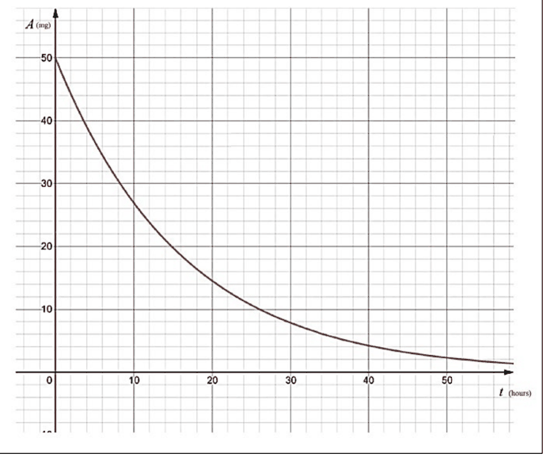
t ≈ 37 hours
Draw a horizontal line at A = 5 until it meets the curve, then go down to the t-axis. t ≈ 37 hours
Go across from 5 mg to the curve, then down.
Textbook Question · Problem 9
Same as Lecture Example 3
A 50 mg dose of quinine is given to a patient to prevent malaria. Quinine leaves the body at a rate of 6% per hour.
a. Find a formula for the amount, A (in mg), of quinine in the body t hours after the dose is given.
A = 50(0.94)ᵗ
a = 1 − 0.06 = 0.94: A = 50(0.94)ᵗ.
94% remains each hour.
b. How much quinine is in the body after 24 hours?
≈ 11.3 mg
A = 50(0.94)²⁴ ≈ 11.3 mg.
t = 24.
c. Graph A as a function of t. Which description matches the graph?
Starts at 50, decreasing and concave up, approaching 0
Exponential decay from 50, concave up, through (24, 11.3).
Decay curves bend upward.
d. Use the graph to estimate when 5 mg of quinine remains.
≈ 37 hours
A = 5 at about t = 37 hours.
Read across from 5 mg.
Textbook Question · Problem 12
During the 1980s, Costa Rica had the highest deforestation rate in the world, at 2.9% per year. (This is the rate at which land covered by forests is shrinking.)
Assuming the rate continues, what percent of the land in Costa Rica covered by forests in 1980 will be forested in 2015?
≈ 35.7%
a = 1 − 0.029 = 0.971; t = 2015 − 1980 = 35. 0.971³⁵ ≈ 0.357 = 35.7%.
35 years of keeping 97.1%.
Textbook Question · Problem 28
(a) Niki invested $10,000 in the stock market. The investment was a loser, declining in value 10% per year each year for 10 years. How much was the investment worth after 10 years?
≈ $3,486.78
10,000(0.9)¹⁰ ≈ $3,486.78.
Keep 90% each year for 10 years.
(b) After 10 years, the stock began to gain value at 10% per year. After how long will the investment regain its initial value ($10,000)?
≈ 11.05 years
3,486.78(1.1)ᵗ = 10,000 → 1.1ᵗ ≈ 2.868 → t = ln 2.868/ln 1.1 ≈ 11.05 years.
Losing 10% then gaining 10% does not cancel out.
Textbook Question · Problem 29
A photocopy machine can reduce copies to 80% of their original size. By copying an already reduced copy, further reductions can be made.
a. If a page is reduced to 80%, what percent enlargement is needed to return it to its original size?
b. Estimate the number of times in succession that a page must be copied to make the final copy less than 15% of the size of the original.
9 times
0.8⁸ ≈ 0.168 (still more than 15%); 0.8⁹ ≈ 0.134 < 0.15. So 9 copies.
Keep multiplying by 0.8.
3. Linear vs. Exponential Functions
1 lecture · 11 textbook · 1 past exam questions
Lecture Question · Ex 4
Similar problem (different numbers): Past Exam 2022 Question 2
The amount of adrenaline in the body can change rapidly. Suppose the initial amount is 15 mg. Find a formula for A, the amount in mg, at a time t minutes later if A is:
(a) Increasing by 0.4 mg per minute.
A = 0.4t + 15
Constant increase ⇒ linear function y = mx + b, b = 15 = A₀ m = 0.4 mg/min A = mt + A₀ A = 0.4t + 15
Constant amount = linear.
(b) Decreasing by 0.4 mg per minute.
A = −0.4t + 15
Constant decrease ⇒ linear function m = −0.4 mg/min A = −0.4t + 15
Constant amount = linear.
(c) Increasing by 3% per minute.
A = 15(1.03)ᵗ
growth rate r = 3% = 0.03 (not constant change) ⇒ exponential function ⇒ exponential growth: a = 1 + r = 1 + 0.03 = 1.03 ⇒ A = A₀aᵗ ⇒ A = 15(1.03)ᵗ
Constant percent = exponential.
(d) Decreasing by 3% per minute.
A = 15(0.97)ᵗ
decay rate r = 3% = 0.03 exponential decay: a = 1 − r ⇒ a = 1 − 0.03 a = 0.97 ⇒ A = A₀aᵗ A = 15(0.97)ᵗ
1 − 0.03 = 0.97.
Textbook Question · Problem 3
Figure 1.62 shows graphs of several cities' populations against time. Match each of the following descriptions to a graph and write a description to match each of the remaining graphs.
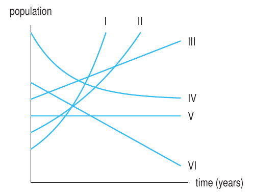
a. The population increased at 5% per year.
II
5% per year → exponential growth, the slower one of the two exponential curves: II.
Exponential = curved upward; 5% is slower than 8%.
b. The population increased at 8% per year.
I
8% → the faster-growing exponential curve: I.
Steeper curve = larger percent.
c. The population increased by 5000 people per year.
III
Constant increase → increasing straight line: III.
Constant amount = straight line.
d. The population was stable.
V
Stable → horizontal line: V.
No change = flat.
IV Write a description for the remaining graph IV.
Decreasing by a constant percent and leveling off
IV is a decreasing curve that levels off: decreasing by a constant percent.
Curved decrease = exponential decay.
VI Write a description for the remaining graph VI.
Decreasing by a constant number of people per year
VI is a decreasing straight line: decreasing by a constant number of people per year.
Straight decrease = linear.
Textbook Question · Problem 4
A town has a population of 1000 people at time t = 0. In each of the following cases, write a formula for the population, P, of the town as a function of year t.
a. The population increases by 50 people a year.
P = 1000 + 50t
Constant increase → linear: P = 1000 + 50t.
People per year = linear.
b. The population increases by 5% a year.
P = 1000(1.05)ᵗ
Constant percent → exponential: P = 1000(1.05)ᵗ.
5% = 0.05.
Textbook Question · Problem 5
The gross domestic product, G, of Switzerland was 310 billion dollars in 2007. Give a formula for G (in billions of dollars) t years after 2007 if G increases by
(a) 3% per year
G = 310(1.03)ᵗ
G = 310(1.03)ᵗ.
Percent → exponential.
(b) 8 billion dollars per year
G = 310 + 8t
G = 310 + 8t.
Amount per year → linear.
Textbook Question · Problem 6
A product costs $80 today. How much will the product cost in t days if the price is reduced by
(a) $4 a day
P = 80 − 4t
P = 80 − 4t.
Dollars per day → linear.
(b) 5% a day
P = 80(0.95)ᵗ
a = 1 − 0.05 = 0.95: P = 80(0.95)ᵗ.
Percent reduction → multiply by 0.95.
Textbook Question · Problem 7
An air-freshener starts with 30 grams and evaporates. In each of the following cases, write a formula for the quantity, Q grams, of air-freshener remaining t days after the start and sketch a graph of the function. The decrease is:
(a) 2 grams a day
Q = 30 − 2t (a decreasing straight line)
Constant decrease → linear: Q = 30 − 2t, a straight line falling from 30 to 0 at t = 15.
Grams per day → straight line.
(b) 12% a day
Q = 30(0.88)ᵗ (a decreasing curve)
a = 1 − 0.12 = 0.88: Q = 30(0.88)ᵗ, an exponential decay curve, concave up, approaching 0.
Percent per day → decay curve.
Textbook Question · Problem 22
Find a formula for the number of zebra mussels in a bay as a function of the number of years since 2003, given that there were 2700 at the start of 2003 and 3186 at the start of 2004.
a. Assume that the number of zebra mussels is growing linearly. Give units for the slope of the line and interpret it in terms of zebra mussels.
N = 2700 + 486t; 486 mussels/year: increases by 486 each year
m = (3186 − 2700)/1 = 486 mussels/year: N = 2700 + 486t.
One year apart.
b. Assume that the number of zebra mussels is growing exponentially. What is the percent rate of growth of the zebra mussel population?
18%
a = 3186/2700 = 1.18 → r = 18% per year.
Divide, then subtract 1.
Textbook Question · Problem 23
Worldwide, wind energy generating capacity, W, was 40,300 megawatts in 2003 and 121,188 megawatts in 2008.
a. Use the values given to write W, in megawatts, as a linear function of t, the number of years since 2003.
W = 40,300 + 16,177.6t
m = (121,188 − 40,300)/5 = 80,888/5 = 16,177.6 MW/year: W = 40,300 + 16,177.6t.
5 years.
b. Use the values given to write W as an exponential function of t.
W = 40,300(1.246)ᵗ
121,188 = 40,300a⁵ → a⁵ ≈ 3.007 → a ≈ 1.246: W = 40,300(1.246)ᵗ.
Fifth root of the ratio.
c. Graph the functions found in parts (a) and (b) on the same axes. Which statement is correct?
Both pass through (0, 40,300) and (5, 121,188); the exponential is below the line between them
Both functions use the same two given values, so both pass through (0, 40,300) and (5, 121,188). Between them the concave-up exponential curve lies below the straight line.
A concave-up curve sits under its secant line.
Textbook Question · Problem 24
Use the table.
x
f(x)
g(x)
h(x)
−2
12
16
37
−1
17
24
34
0
20
36
31
1
21
54
28
2
18
81
25
(a) Which (if any) of the functions in the table could be linear? Find formulas for those functions.
h: h(x) = 31 − 3x
h decreases by 3 each step: linear with m = −3 and h(0) = 31 → h(x) = 31 − 3x. f and g are not linear.
Check constant differences.
(b) Which (if any) of these functions could be exponential? Find formulas for those functions.
Determine whether each of the following tables of values could correspond to a linear function, an exponential function, or neither. For each table of values that could correspond to a linear or an exponential function, find a formula for the function.
(b) Find a formula for P, world soybean production in millions of tons, as a function of time, t, in years since 2000.
P = 161(1.058)ᵗ
P₀ = 161, a ≈ 1.058: P = 161(1.058)ᵗ.
Start value at 2000.
(c) What is the annual percent increase in soybean production?
≈ 5.8%
a − 1 ≈ 0.058 = 5.8% per year.
r = a − 1.
Textbook Question · Problem 27
The 2004 US presidential debates questioned whether the minimum wage has kept pace with inflation. In 1938, the minimum wage was 25¢; in 2004, it was $5.15. During the same period, inflation averaged 4.3%.
Decide the question using this information.
Yes: inflation alone gives ≈ $4.02, less than the actual $5.15
0.25(1.043)⁶⁶ ≈ $4.02 (66 years from 1938 to 2004). The actual $5.15 is more, so the minimum wage kept pace with inflation.
Grow 25¢ by 4.3% for 66 years.
Past Exam Question · 2022 Q2
Similar problem (different numbers): Lecture Example 4
The amount of adrenaline in the body can change rapidly. Suppose that the initial amount of adrenaline is 10 mg. In each of the following cases, find a formula for the amount A (in mg) after t minutes:
(a) Adrenaline is decreasing by 0.6 mg per minute.
A = 10 − 0.6t
Constant decrease → linear: A = 10 − 0.6t.
mg per minute = linear.
(b) Adrenaline is increasing by 10% per minute.
A = 10(1.1)ᵗ
Constant percent increase → exponential: a = 1.1, A = 10(1.1)ᵗ.
10% = 0.1.
4. Finding Exponential Formulas from Data
2 lecture · 10 textbook questions
Lecture Question · Ex 5
Wolves were once common in the western US. By the 1990s, the wolf population in Wyoming had been wiped out by hunters and wolves put on the endangered species list. In 1995, wolves were reintroduced to Wyoming from Canada. Starting with 14 wolves, their number increased to 207 wolves in 2012. Assuming the Wyoming wolf population was growing exponentially, find a function of the form P = P₀aᵗ, where P is the population t years after 1995. What is the annual percent growth rate?
P = ? and r = ?
P = 14(1.172)ᵗ; r = 17.2%
In 1995, (t = 0): P₀ = 14 In 2012, (t = 17): P₁₇ = 207 Pₜ = P₀aᵗ ⇒ Pₜ = 14aᵗ t = 17 ⇒ 207 = 14a¹⁷ (÷ 14) ¹⁷√(a¹⁷) = ¹⁷√(207/14) = (207/14)1/17 a = 1.172 (exponential growth) P = 14(1.172)ᵗ r = a − 1 ⇒ r = 0.172 (× 100%) r = 17.2%
2012 − 1995 = 17.
Lecture Question · Ex 6
Suppose Q = f(t) is an exponential function of t. If f(20) = 88.2 and f(23) = 91.4:
The Hershey Company is the largest US producer of chocolate. In 2008, annual net sales were 5.1 billion dollars and were increasing at a continuous rate of 4.3% per year.
a. Write a formula for annual net sales, S, as a function of time, t, in years since 2008.
S = 5.1e^(0.043t)
Continuous rate → S = S₀e^(kt) with k = 0.043: S = 5.1e^(0.043t).
"Continuous" → use e.
b. Estimate annual net sales in 2015.
≈ 6.89 billion dollars
t = 7: S = 5.1e^(0.043·7) = 5.1e^0.301 ≈ 6.89 billion dollars.
t = 2015 − 2008.
c. Use a graph or trial and error to estimate the year in which annual net sales are expected to pass 8 billion dollars.
2018
5.1e^(0.043t) = 8 → t = ln(8/5.1)/0.043 ≈ 10.5 → in 2018.
Try t = 10, 11.
Textbook Question · Problem 15
For Problems 15–16, find a possible formula for the function represented by the data.
Give a possible formula for the function in the figure.
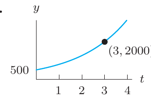
y = ?
y = 500(1.587)ᵗ
y = 500aᵗ; 2000 = 500a³ → a³ = 4 → a = 4^(1/3) ≈ 1.587: y = 500(1.587)ᵗ.
Starts at 500; reaches 2000 at t = 3.
Textbook Question · Problem 18
Give a possible formula for the function in the figure.
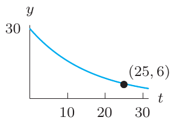
y = ?
y = 30(0.938)ᵗ
y = 30aᵗ; 6 = 30a²⁵ → a²⁵ = 0.2 → a = 0.2^(1/25) ≈ 0.938: y = 30(0.938)ᵗ.
Starts at 30; 6 at t = 25.
Textbook Question · Problem 19
If the world's population increased exponentially from 4.453 billion in 1980 to 5.937 billion in 1998 and continued to increase at the same percentage rate between 1998 and 2008,
Calculate what the world's population would have been in 2008. How does this compare to the actual population of 6.771 billion?
≈ 6.97 billion, higher than the actual 6.771 billion
a¹⁸ = 5.937/4.453 → a ≈ 1.0161. 2008: 5.937(1.0161)¹⁰ ≈ 6.97 billion, higher than the actual 6.771 billion.
Find the yearly factor over 18 years, then grow 10 more years.
Textbook Question · Problem 20
The number of passengers using a railway fell from 190,205 to 174,989 during a 5-year period.
Find the annual percentage decrease over this period.
≈ 1.65% per year
a⁵ = 174,989/190,205 ≈ 0.920 → a ≈ 0.9835 → decrease ≈ 1.65% per year.
Fifth root of the ratio.
Textbook Question · Problem 21
The company that produces Cliffs Notes (abridged versions of classic literature) was started in 1958 with $4000 and sold in 1998 for $14,000,000.
Find the annual percent increase in the value of this company over the 40 years.
≈ 22.6% per year
a⁴⁰ = 14,000,000/4000 = 3500 → a = 3500^(1/40) ≈ 1.226 → ≈ 22.6% per year.
40th root of 3500.
Textbook Question · Problem 30
Whooping cough was thought to have been almost wiped out by vaccinations. It is now known that the vaccination wears off, leading to an increase in the number of cases, w, from 1248 in 1981 to 18,957 in 2004.
a. With t in years since 1980, find an exponential function that fits this data.
w = 1109(1.126)ᵗ
1981 → t = 1, 2004 → t = 24. a²³ = 18,957/1248 ≈ 15.19 → a ≈ 1.126. w₀ = 1248/1.126 ≈ 1109: w = 1109(1.126)ᵗ.
t = 1 in 1981, so w₀ is not 1248.
b. What does your answer to part (a) give as the average annual percent growth rate of the number of cases?
≈ 12.6%
a − 1 ≈ 0.126 = 12.6% per year.
r = a − 1.
c. On May 4, 2005, the Arizona Daily Star reported (correctly) that the number of cases had more than doubled between 2000 and 2004. Does your model confirm this report? Explain.
No: the model gives only about a 61% increase
Over 4 years the model multiplies by 1.126⁴ ≈ 1.61, only about a 61% increase, not a doubling.
Compute a⁴.
Textbook Question · Problem 31
Aircraft require longer takeoff distances, called takeoff rolls, at high altitude airports because of diminished air density. The table shows how the takeoff roll for a certain light airplane depends on the airport elevation. (Takeoff rolls are also strongly influenced by air temperature; the data shown assume a temperature of 0° C.)
Elevation (ft)
Sea level
1000
2000
3000
4000
Takeoff roll (ft)
670
734
805
882
967
Determine a formula for this particular aircraft that gives the takeoff roll as an exponential function of airport elevation.
R = 670(1.096)^(h/1000)
Each 1000 ft multiplies the roll by about 1.096 (734/670 ≈ 805/734 ≈ … ≈ 1.096). With h in feet: R = 670(1.096)^(h/1000).
The factor applies per 1000 ft.
Lecture 5The Natural Logarithm (1.6)
6 lecture · 41 textbook questions
No past exam questions for this lecture.
اللوغاريتم الطبيعي (Natural logarithm) واختصاره ln، شغلته ينزّل الأُس (t) من فوق عشان نقدر نحله.
🔢 lnزر بالآلة الحاسبة، يفك الأُس
🌀 eرقم ثابت مثل π، قيمته ≈ 2.718
🛗 تشبيه: الـ t بـ 3t = 10 عالق فوق بالأُس. الـ ln مثل مصعد ينزّله تحت، وبعدين نقسم عادي.
بهالمحاضرة بتتعلمين 3 أشياء:
تحلين أي معادلة أُسّية بالـ ln
تحوّلين بين P₀at و P₀ekt
تقرين النمو والتناقص المستمر (Continuous growth & decay)
القاعدة
بالرموز
⭐ ينزّل الأُس قدام
ln(at) = t · ln a
⭐ ln و e يلغون بعض
ln(ex) = x
ln للواحد
ln 1 = 0
ln لـ e
ln e = 1
ln للسالب أو الصفر
ما ينفع (Undefined)
كم تساوي ln(e5t)؟
ln و e يلغون بعض، ويبقى الأُس بروحه: 5t.
① الأُس بروحه ← ② ln للطرفين ← ③ اقسميهذي الخطوات لكل معادلة أُسّية
Ex 1أوجدي t إذا 3t = 10
الأُس بروحه أصلاً، خذي ln: ln(3t) = ln 10
نزّلي الأُس قدام: t · ln 3 = ln 10
اقسمي: t = ln 10 ÷ ln 3
t ≈ 2.096
⚠️ ln 10 ÷ ln 3 مو نفس ln(10 ÷ 3). اضغطي كل ln بروحه.
(b) قارني الرقم اللي قدام: 600 , 1000 , 1200 , 900 ← الأكبر 1200
(c) دوري k سالب: kB = −0.02 < 0
(a) D (12%) | (b) C (1200) | (c) نعم، B
«أكبر الحين (largest now)» نشوف…
الحين = t = 0 ← يبقى بس P₀. أما «أسرع نمو» = أكبر k.
ln(at) = t ln a · a = ek · k = ln aالأُس بروحه ← ln ← اقسمي
إذا السؤال فيه…
سوّي
"find t / when / how many years"
الأُس بروحه ← ln للطرفين
"to the form P₀at" والقانون فيه e
a = ek
"to the form P₀ekt" والقانون فيه a
k = ln a
"sketch the graph"
عوّضي t = 0 + إشارة k
"growing fastest"
أكبر k
"largest now"
أكبر P₀
"decreasing"
k سالب (أو a < 1)
⚠️ أخطاء شائعة: ln قبل القسمة · كتابة ln(10÷3) بدل ln 10 ÷ ln 3 · الخلط بين «أسرع» (k) و«أكبر الحين» (P₀) · نسيان إن t من 2000
1. The Natural Logarithm & Solving Equations
3 lecture · 16 textbook questions
Lecture Question · Ex 1
Find t such that 3ᵗ = 10.
t = ?
t = 2.096
ln(3ᵗ) = ln 10 t ln(3) = ln(10) (÷ ln(3)) t = ln(10) / ln(3) = 2.096
Take ln of both sides; bring the power down.
Lecture Question · Ex 2
Find t such that 12 = 5e3t.
t = ?
t = 0.292
12 = 5e3t (÷ 5) ln e3t = ln(12/5) 3t · ln e = ln(12/5) (ln e = 1) 3t = ln(12/5) (÷ 3) t = 0.292 (t = 0.2918)
Divide by 5 first, then take ln.
Lecture Question · Ex 3
If t is in years since 2000, the population of Nevada (in millions) can be modeled by the function P = f(t) = 2.020(1.036)ᵗ.
After how many years will the population of Nevada reach 4 million?
t = 19.32 years
Find t, P = 4 millions 4 = 2.020(1.036)ᵗ (÷ 2.020) ln(1.036)ᵗ = ln(4/2.020) t ln(1.036) = ln(4/2.020) (÷ ln(1.036)) t = 19.32 years (t = 19.317) It means after 2019, the population will reach 4 millions.
Divide by 2.020, then use ln.
Textbook Question · Problem 1
For Problems 1–16, solve for t using natural logarithms.
5ᵗ = 7
t ≈ 1.209
t ln 5 = ln 7 → t = ln 7 / ln 5 ≈ 1.209.
Isolate the exponential, then take ln of both sides.
Textbook Question · Problem 2
Solve for t using natural logarithms.
10 = 2ᵗ
t ≈ 3.322
t = ln 10 / ln 2 ≈ 3.322.
Isolate the exponential, then take ln of both sides.
Textbook Question · Problem 3
Solve for t using natural logarithms.
2 = (1.02)ᵗ
t ≈ 35.00
t = ln 2 / ln 1.02 ≈ 35.00.
Isolate the exponential, then take ln of both sides.
Textbook Question · Problem 4
Solve for t using natural logarithms.
130 = 10ᵗ
t ≈ 2.114
t = ln 130 / ln 10 ≈ 2.114.
Isolate the exponential, then take ln of both sides.
Textbook Question · Problem 5
Solve for t using natural logarithms.
50 = 10 · 3ᵗ
t ≈ 1.465
5 = 3ᵗ → t = ln 5 / ln 3 ≈ 1.465.
Isolate the exponential, then take ln of both sides.
Textbook Question · Problem 6
Solve for t using natural logarithms.
100 = 25(1.5)ᵗ
t ≈ 3.419
4 = 1.5ᵗ → t = ln 4 / ln 1.5 ≈ 3.419.
Isolate the exponential, then take ln of both sides.
Textbook Question · Problem 7
Solve for t using natural logarithms.
10 = et
t ≈ 2.303
t = ln 10 ≈ 2.303.
Isolate the exponential, then take ln of both sides.
Textbook Question · Problem 8
Solve for t using natural logarithms.
5 = 2et
t ≈ 0.916
2.5 = et → t = ln 2.5 ≈ 0.916.
Isolate the exponential, then take ln of both sides.
Textbook Question · Problem 9
Solve for t using natural logarithms.
e3t = 100
t ≈ 1.535
3t = ln 100 → t = ln 100 / 3 ≈ 1.535.
Isolate the exponential, then take ln of both sides.
Textbook Question · Problem 10
Solve for t using natural logarithms.
10 = 6e0.5t
t ≈ 1.022
10/6 = e0.5t → 0.5t = ln(1.667) → t ≈ 1.022.
Isolate the exponential, then take ln of both sides.
Isolate the exponential, then take ln of both sides.
2. Exponential Functions with Base e
1 lecture · 19 textbook questions
Lecture Question · Ex 4
i. Convert the function P = 1000e0.05t to the form P = P₀aᵗ.
P = 1000(1.051)ᵗ
Given P = P₀ekt P₀ = 1000, k = 0.05 a = ek = e0.05 a = 1.051 P = 1000(1.051)ᵗ
a = eᵏ.
ii. Convert the function P = 500(1.06)ᵗ to the form P = P₀ekt.
P = 500e0.058t
Given P = P₀aᵗ P₀ = 500, a = 1.06 k = ln(1.06) = 0.0583 P = 500e0.058t
k = ln a.
Textbook Question · Problem 17
The functions in Problems 17–20 represent exponential growth or decay. What is the initial quantity? What is the growth rate? State if the growth rate is continuous.
P = 5(1.07)ᵗ
Initial 5; growth 7%; not continuous
P₀ = 5; a = 1.07 → growth rate 7% per year (annual, not continuous).
Base e → continuous rate k; base a → annual rate a − 1.
Textbook Question · Problem 18
What is the initial quantity? What is the growth rate? State if the growth rate is continuous.
Base e → continuous rate k; base a → annual rate a − 1.
Textbook Question · Problem 19
What is the initial quantity? What is the growth rate? State if the growth rate is continuous.
P = 15e−0.06t
Initial 15; decay 6%; continuous
P₀ = 15; k = −0.06 → continuous decay rate 6%.
Base e → continuous rate k; base a → annual rate a − 1.
Textbook Question · Problem 20
What is the initial quantity? What is the growth rate? State if the growth rate is continuous.
P = 3.2e0.03t
Initial 3.2; growth 3%; continuous
P₀ = 3.2; k = 0.03 → continuous growth rate 3%.
Base e → continuous rate k; base a → annual rate a − 1.
Textbook Question · Problem 23
Write the functions in Problems 23–26 in the form P = P₀aᵗ. Which represent exponential growth and which represent exponential decay?
P = 15e0.25t
P = 15(1.284)ᵗ; growth
a = e0.25 ≈ 1.284 > 1 → growth.
a = eᵏ.
Textbook Question · Problem 24
Write the function in the form P = P₀aᵗ. Does it represent exponential growth or decay?
P = 2e−0.5t
P = 2(0.607)ᵗ; decay
a = e−0.5 ≈ 0.607 < 1 → decay.
a = eᵏ.
Textbook Question · Problem 25
Write the function in the form P = P₀aᵗ. Does it represent exponential growth or decay?
P = P₀e0.2t
P = P₀(1.221)ᵗ; growth
a = e0.2 ≈ 1.221 → growth.
a = eᵏ.
Textbook Question · Problem 26
Write the function in the form P = P₀aᵗ. Does it represent exponential growth or decay?
P = 7e−πt
P = 7(0.0432)ᵗ; decay
a = e−π ≈ 0.0432 → decay.
a = eᵏ.
Textbook Question · Problem 27
In Problems 27–30, put the functions in the form P = P₀ekt.
P = 15(1.5)ᵗ
P = 15e0.405t
k = ln 1.5 ≈ 0.405 → P = 15e0.405t.
k = ln a.
Textbook Question · Problem 28
Put the function in the form P = P₀ekt.
P = 10(1.7)ᵗ
P = 10e0.531t
k = ln 1.7 ≈ 0.531 → P = 10e0.531t.
k = ln a.
Textbook Question · Problem 29
Put the function in the form P = P₀ekt.
P = 174(0.9)ᵗ
P = 174e−0.105t
k = ln 0.9 ≈ −0.105 → P = 174e−0.105t.
k = ln a.
Textbook Question · Problem 30
Put the function in the form P = P₀ekt.
P = 4(0.55)ᵗ
P = 4e−0.598t
k = ln 0.55 ≈ −0.598 → P = 4e−0.598t.
k = ln a.
Textbook Question · Problem 31
The population of the world can be represented by P = 6.4(1.0126)ᵗ, where P is in billions of people and t is years since 2004.
Find a formula for the population of the world using a continuous growth rate.
P = 6.4e0.0125t
k = ln 1.0126 ≈ 0.0125 → P = 6.4e0.0125t.
k = ln a.
Textbook Question · Problem 34
(a) What is the continuous percent growth rate for P = 100e0.06t, with time, t, in years?
6%
k = 0.06 → continuous growth rate 6% per year.
k is the continuous rate.
(b) Write this function in the form P = P₀aᵗ. What is the annual percent growth rate?
P = 100(1.0618)ᵗ; 6.18%
a = e0.06 ≈ 1.0618 → P = 100(1.0618)ᵗ; annual rate ≈ 6.18%.
The annual rate is a bit bigger than the continuous rate.
Textbook Question · Problem 35
(a) What is the annual percent decay rate for P = 25(0.88)ᵗ, with time, t, in years?
12%
Decay rate = 1 − 0.88 = 0.12 = 12% per year.
1 − a.
(b) Write this function in the form P = P₀ekt. What is the continuous percent decay rate?
P = 25e−0.128t; 12.8%
k = ln 0.88 ≈ −0.128 → P = 25e−0.128t; continuous decay rate ≈ 12.8%.
k = ln a.
Textbook Question · Problem 36
The gross world product is W = 32.4(1.036)ᵗ, where W is in trillions of dollars and t is years since 2001.
Find a formula for gross world product using a continuous growth rate.
W = 32.4e0.0354t
k = ln 1.036 ≈ 0.0354 → W = 32.4e0.0354t.
k = ln a.
Textbook Question · Problem 37
The population, P, in millions, of Nicaragua was 5.4 million in 2004 and growing at an annual rate of 3.4%. Let t be time in years since 2004.
a. Express P as a function in the form P = P₀aᵗ.
P = 5.4(1.034)ᵗ
a = 1 + 0.034 = 1.034 → P = 5.4(1.034)ᵗ.
Annual rate → a = 1 + r.
b. Express P as an exponential function using base e.
P = 5.4e0.0334t
k = ln 1.034 ≈ 0.0334 → P = 5.4e0.0334t.
k = ln a.
c. Compare the annual and continuous growth rates.
The continuous rate is slightly less than the annual rate
k = ln 1.034 ≈ 0.0334, so the continuous rate (3.34%) is slightly smaller than the annual rate (3.4%).
Continuous compounding needs a smaller rate to give the same growth.
Textbook Question · Problem 38
What annual percent growth rate is equivalent to a continuous percent growth rate of 8%?
≈ 8.33%
a = e0.08 ≈ 1.0833 → annual rate ≈ 8.33%.
a = eᵏ, then a − 1.
Textbook Question · Problem 39
What continuous percent growth rate is equivalent to an annual percent growth rate of 10%?
≈ 9.53%
k = ln 1.1 ≈ 0.0953 → ≈ 9.53%.
k = ln(1 + r).
3. Continuous Growth & Decay Models
2 lecture · 6 textbook questions
Lecture Question · Ex 5
Sketch graphs of
i. P = e0.5t, a continuous growth rate of 50%
Starts at 1, increasing and concave up
t = 0 ⇒ P₀ = 1 k = 0.5 (+) ⇒ increasing P₀ > 0 ⇒ concave up Same shape as the previous exponential growth curves: increasing and concave up.
k > 0 = growth.
ii. Q = 5e−0.2t, a continuous decay rate of 20%.
Starts at 5, decreasing and concave up
t = 0 ⇒ P₀ = 5e⁰ = 5 k = −0.2 ⇒ decreasing P₀ > 0 ⇒ concave up Same shape as other exponential decay functions.
k < 0 = decay.
Lecture Question · Ex 6
Same as Textbook Problem 21
The following formulas give the populations of four different towns, A, B, C, and D, with t in years from now. A: PA = 600e0.08t; B: PB = 1000e−0.02t; C: PC = 1200e0.03t; D: PD = 900e0.12t
a. Which town is growing fastest (that is, has the largest percentage growth rate)?
Town D
A: P₀ = 600, k = 0.08 · B: P₀ = 1000, k = −0.02 · C: P₀ = 1200, k = 0.03 · D: P₀ = 900, k = 0.12 Town D, because k is largest.
Largest k = fastest.
b. Which town is the largest now?
Town C
Town C, because it has largest P₀.
Now = t = 0 = P₀.
c. Are any of the towns decreasing in size? If so, which one(s)?
Town B
Town B, because k < 0.
Negative k = decreasing.
Textbook Question · Problem 21
Same as Lecture Example 6
The following formulas give the populations of four different towns, A, B, C, and D, with t in years from now. A: PA = 600e0.08t; B: PB = 1000e−0.02t; C: PC = 1200e0.03t; D: PD = 900e0.12t
a. Which town is growing fastest (that is, has the largest percentage growth rate)?
D (12%)
Town D, because its k = 0.12 is the largest.
Largest k = fastest.
b. Which town is the largest now?
C (1200)
Town C, because it has the largest P₀ (1200).
Now = t = 0 = P₀.
c. Are any of the towns decreasing in size? If so, which one(s)?
Yes, B
Town B, because its k = −0.02 < 0.
Negative k = decreasing.
Textbook Question · Problem 22
A city's population is 1000 and growing at 5% a year.
a. (i) Find a formula for the population at time t years from now assuming that the 5% per year is an annual rate.
P = 1000(1.05)ᵗ
Annual rate: a = 1.05 → P = 1000(1.05)ᵗ.
Annual → base 1.05.
a. (ii) Find a formula assuming that the 5% per year is a continuous annual rate.
P = 1000e0.05t
Continuous rate: k = 0.05 → P = 1000e0.05t.
Continuous → base e.
b. (i) Estimate the population of the city in 10 years with the annual rate.
≈ 1629
1000(1.05)¹⁰ ≈ 1629.
t = 10.
b. (ii) Estimate the population of the city in 10 years with the continuous rate.
≈ 1649
1000e0.5 ≈ 1649.
Continuous gives a little more.
Textbook Question · Problem 32
A fishery stocks a pond with 1000 young trout. The number of trout t years later is given by P(t) = 1000e−0.5t.
a. How many trout are left after six months? After 1 year?
≈ 779; ≈ 607
Six months → t = 0.5: 1000e−0.25 ≈ 779. One year → t = 1: 1000e−0.5 ≈ 607.
Six months = 0.5 year.
b. Find P(3) and interpret it in terms of trout.
P(3) ≈ 223: about 223 trout are left after 3 years
P(3) = 1000e−1.5 ≈ 223 trout remain after 3 years.
t = 3.
c. At what time are there 100 trout left?
≈ 4.6 years
100 = 1000e−0.5t → 0.1 = e−0.5t → t = ln 0.1 / (−0.5) ≈ 4.6 years.
Divide by 1000, then ln.
d. Graph the number of trout against time, and describe how the population is changing. What might be causing this?
Decreasing and leveling off (e.g., fishing or deaths)
The graph decreases from 1000 and levels off toward 0 (concave up). Possible causes: fishing or deaths.
Exponential decay shape.
Textbook Question · Problem 33
During a recession a firm's revenue declines continuously so that the revenue, R (measured in millions of dollars), in t years' time is given by R = 5e−0.15t.
a. Calculate the current revenue and the revenue in two years' time.
$5 million; ≈ $3.70 million
Now (t = 0): R = 5. t = 2: R = 5e−0.3 ≈ $3.70 million.
e⁰ = 1.
b. After how many years will the revenue decline to $2.7 million?
≈ 4.1 years
2.7 = 5e−0.15t → 0.54 = e−0.15t → t = ln 0.54 / (−0.15) ≈ 4.1 years.
Divide by 5, then ln.
Textbook Question · Problem 40
The population of a city is 50,000 in 2008 and is growing at a continuous yearly rate of 4.5%.
a. Give the population of the city as a function of the number of years since 2008. Sketch a graph of the population against time.
P = 50,000e0.045t (increasing, concave up)
Continuous rate k = 0.045: P = 50,000e0.045t, an increasing, concave-up curve starting at (0, 50,000).
Continuous → base e.
b. What will be the city's population in the year 2018?
≈ 78,416
t = 10: 50,000e0.45 ≈ 78,416.
t = 2018 − 2008.
c. Calculate the time for the population of the city to reach 100,000 (the doubling time).
≈ 15.4 years
100,000 = 50,000e0.045t → 2 = e0.045t → t = ln 2 / 0.045 ≈ 15.4 years.
Doubling: ln 2 / k.
Textbook Question · Problem 41
In 2000, there were about 213 million vehicles (cars and trucks) and about 281 million people in the US. The number of vehicles has been growing at 4% a year, while the population has been growing at 1% a year.
If the growth rates remain constant, when is there, on average, one vehicle per person?
t ≈ 9.5 years (between 2009 and 2010)
213(1.04)ᵗ = 281(1.01)ᵗ → (1.04/1.01)ᵗ = 281/213 → t = ln(1.319)/ln(1.0297) ≈ 9.5 years.
Set vehicles = people.
Lecture 6Exponential Growth and Decay (1.7)
8 lecture · 35 textbook · 3 past exam questions
النمو الأُسّي (Exponential growth) يعني شي يكبر بنسبة ثابتة كل فترة، مو بمقدار ثابت.
📈 نمو (Growth)بكتيريا تتضاعف، سكان يزيدون، فلوس بالبنك
📉 تناقص (Decay)دوا يطلع من الجسم، إشعاع يخف
💊 تشبيه: الجسم كل ساعة يطلع نسبة من الدوا اللي فيه، مو كمية ثابتة. عشان جذي الدوا ينقص بسرعة بالبداية وبعدين يبطّي.
بهالمحاضرة بتتعلمين 3 أشياء:
القانون P = P₀ekt وكيف تطلعين منه أي شي
زمن التضاعف وعمر النصف (Doubling time & Half-life)
الفائدة المركبة (Compound interest)
P = P₀ ektالكمية بعد وقت t
P₀ = الكمية بالبداية (لما t = 0)
k = معدل النمو المستمر (Continuous rate)
k موجب ← يزيد 📈 k سالب ← ينقص 📉
🔑 "continuous rate 3%" ← k = 0.03 | "decays at 17%" ← k = −0.17
دوا يطلع من الجسم بمعدل مستمر 12% بالساعة. كم k؟
يطلع يعني ينقص، فـ k سالب، و 12% = 0.12.
أغلب الأسئلة نوعين:
① عطاك tعوّضي بالقانون على طول
② يبي tاقسمي ← ln ← اقسمي
Ex 1إشعاع يود 2.4 millirems/hour، ويتناقص بـ k = −0.004. كم يصير بعد 24 ساعة؟ ومتى يوصل 0.6؟
القانون: R = 2.4e−0.004t
(a) عوّضي t = 24: R = 2.4e−0.096 ≈ 2.18
(b) خلي R = 0.6 واقسمي على 2.4: 0.25 = e−0.004t
خذي ln للطرفين: ln 0.25 = −0.004t
اقسمي: t = ln 0.25 ÷ (−0.004) ≈ 346.6
(a) ≈ 2.18 millirems/hour (b) ≈ 346.6 ساعة ≈ 14.4 يوم
💡 ليش ln؟ لأن ln(ex) = x، يعني ln "يفك" الـ e وينزل الأس.
إذا السؤال عطاك قيمتين بزمنين وما عطاك k:
الزمن الأول = t = 0 ← هذا P₀
عوّضي القيمة الثانية واقسمي على P₀
ln ← واقسمي على t
Ex 2سكان كينيا 19.5 مليون سنة 1984، وصاروا 39.0 مليون سنة 2009. اكتبي القانون.
1984 ← t = 0، و 2009 ← t = 25
39.0 = 19.5e25k
اقسمي على 19.5: 2 = e25k
ln: ln 2 = 25k → k = ln 2 ÷ 25 ≈ 0.028
P = 19.5e0.028t (t = سنين بعد 1984)
كمية كانت 100 وصارت 300 بعد 4 سنين. أول خطوة؟
نقسم 300 ÷ 100 = 3، فيصير 3 = e4k، وبعدين ln.
زمن التضاعف (Doubling time)متى الكمية تصير ضعف؟
عمر النصف (Half-life)متى الكمية تصير نص؟
إذا عندك k
إذا عندك a
تضاعف
ln 2 ÷ k
ln 2 ÷ ln a
عمر النصف
ln 2 ÷ |k|
−ln 2 ÷ ln a
🧠 من وين جت؟ (Ex 1 و Ex 3): حطي 2Q₀ = Q₀at ← 2 = at ← ln ← t = ln 2 ÷ ln a. ونفس الشي مع ½.
Ex 2كمية تزيد 7% بالسنة. كم زمن التضاعف؟
7% بالسنة ← a = 1 + 0.07 = 1.07
t = ln 2 ÷ ln 1.07
≈ 10.2 سنة
Ex 4الأوزون يتناقص بمعدل مستمر 0.25% بالسنة. كم عمر النصف؟
مستمر وينقص ← k = −0.0025
t = ln 2 ÷ 0.0025
≈ 277 سنة
Ex 5عمر النصف للـ Prozac = 3 أيام. كم يبقى بعد يوم؟ وبعد أسبوع؟
طلعي k: k = −ln 2 ÷ 3 ≈ −0.231
بعد يوم: e−0.231 ≈ 0.79
بعد أسبوع (t = 7): e−0.231×7 ≈ 0.20
بعد يوم ≈ 79% | بعد أسبوع ≈ 20%
⚠️ "تنقص 4%" يعني يبقى 96% ← 0.96 مو 0.04! "تزيد 10%" يعني تصير 110% ← 1.1
Ex 6مادة تنقص 4% خلال 10 ساعات. كم عمر النصف؟
يبقى 96%: 0.96 = e10k
k = ln 0.96 ÷ 10 ≈ −0.00408
t = −ln 2 ÷ k
≈ 170 ساعة (المحاضرة قرّبت k لـ −0.004 فطلع 173)
مادة تزيد 10% خلال 5 أيام. أول معادلة؟ (Past exam)
2024 Q4Ampicillin: Q = 250, 150, 90, 54… كل ساعة. اكتبي القانون وعمر النصف.
اقسمي كل رقم على اللي قبله: 150 ÷ 250 = 0.6 ، 90 ÷ 150 = 0.6
النسبة ثابتة ← أسّي: Q = 250(0.6)t
عمر النصف: t = −ln 2 ÷ ln 0.6 ≈ 1.36
متى توصل 6.9984؟ 0.6t = 6.9984 ÷ 250 → t = 7
Q = 250(0.6)t | ≈ 1.36 ساعة | t = 7
2022 Q5يبقى 81.23% من Apixaban بعد 3 ساعات. كم عمر النصف؟
0.8123 = e3k → k ≈ −0.0693
t = −ln 2 ÷ (−0.0693)
≈ 10 ساعات
النوع
القانون
سنوية (Annually)
B = P(1 + r)t
مستمرة (Continuously)
B = Pert
قيمة حالية (Present value)
P = Be−rt
r = النسبة بالعشري (8% = 0.08) · t = السنين
Problem 4أبي 20,000$ بعد 6 سنين بفائدة 10% مستمرة. كم أحط الحين؟
"كم أحط الحين" ← قيمة حالية: P = 20,000e−0.1×6
≈ $10,976.23
10,000$ بفائدة 8% مستمرة لمدة 5 سنين؟
مستمرة ← ert، و 0.08 × 5 = 0.4.
P = P₀ektk موجب يزيد · k سالب ينقص
إذا السؤال فيه…
سوّي
عطاك t
عوّضي على طول
"how long / when"
اقسمي ← ln ← اقسمي
قيمتين بزمنين
اقسميهم ← ln ← k
"doubling time"
ln 2 ÷ k
"half-life"
ln 2 ÷ |k|
"7% per year"
a = 1.07
"decreases 4% in 10 h"
0.96 = e10k
"compounded continuously"
Pert
"how much now"
Be−rt
⚠️ أخطاء شائعة: نسيان إشارة k السالبة · كتابة 0.04 بدل 0.96 · نسيان إن 1984 هي t = 0
1. Exponential Growth & Decay with Base e
2 lecture · 9 textbook questions
Lecture Question · Ex 1
The Environmental Protection Agency (EPA) recently investigated a spill of radioactive iodine. The radiation level at the site was about 2.4 millirems/hour (four times the maximum acceptable limit of 0.6 millirems/hour), so the EPA ordered an evacuation of the surrounding area. The level of radiation from an iodine source decays at a continuous hourly rate of k = −0.004.
(a) What was the level of radiation 24 hours later?
P = 2.18 millirem/h
P₀ = 2.4, k = −0.004 P = P₀ekt ⇒ P = 2.4e−0.004t a) t = 24, find P P = 2.4e(−0.004)(24) = 2.18 millirem/h
t = 24.
(b) Find the number of hours until the level of radiation reached the maximum acceptable limit, and the inhabitants could return.
t = 346.6 hours ≈ 15 days
b) P = 0.6, find t 0.6 = 2.4e−0.004t (÷ 2.4) ln e−0.004t = ln(0.6/2.4) [(−0.004t) ln(e), ln e = 1] −0.004t = ln(0.6/2.4) (÷ −0.004) t = ln(0.6/2.4) / (−0.004) t = 346.6 hours (÷ 24) ≈ 15 days After 15 days, the radiation level will reach the maximum accepted level.
Divide 0.6 by 2.4 first.
Lecture Question · Ex 2
The population of Kenya was 19.5 million in 1984 and 39.0 million in 2009.
Assuming the population increases exponentially, find a formula for the population of Kenya as a function of time.
P = 19.5e0.028t
1984 ⇒ t = 0, P₀ = 19.5 2009 ⇒ t = 25, P = 39.0 P = P₀ekt, find k P = 19.5ekt t = 25 ⇒ 39 = 19.5ek(25) (÷ 19.5) ln e25k = ln(39/19.5) 25k = ln(39/19.5) (÷ 25) k = ln(39/19.5) / 25 k = 0.0277 (× 100%) = 2.77% per year (continuous growth rate) P = 19.5e0.028t
To find a: a = ek ⇒ a = e0.0277 = 1.028 To find r: a > 1 ⇒ exponential growth a = 1 + r ⇒ r = a − 1 (growth rate) r = 1.028 − 1 = 0.028 (× 100%) = 2.8% per year
The population doubled in 25 years.
Textbook Question · Problem 1
World wind energy generating capacity, W, was 18,000 megawatts in 2000 and has been increasing at a continuous rate of approximately 27% per year. Assume this rate continues.
a. Give a formula for W, in megawatts, as a function of time, t, in years since 2000.
W = 18,000e0.27t
Continuous rate → W = 18,000e0.27t.
Continuous → base e.
b. When is wind capacity predicted to pass 250,000 megawatts?
t ≈ 9.7 (during 2009)
250,000 = 18,000e0.27t → t = ln(250/18)/0.27 ≈ 9.7 → during 2009.
Divide, then ln, then ÷ 0.27.
Textbook Question · Problem 14
The exponential function y(x) = Ceαx satisfies the conditions y(0) = 2 and y(1) = 1.
Air pressure, P, decreases exponentially with the height, h, in meters above sea level: P = P₀e−0.00012h, where P₀ is the air pressure at sea level.
a. At the top of Mount McKinley, height 6194 meters (about 20,320 feet), what is the air pressure, as a percent of the pressure at sea level?
≈ 47.6%
e−0.00012(6194) = e−0.743 ≈ 0.476 = 47.6%.
P/P₀ = e^(−0.00012h).
b. The maximum cruising altitude of an ordinary commercial jet is around 12,000 meters (about 39,000 feet). At that height, what is the air pressure, as a percent of the sea level value?
≈ 23.7%
e−0.00012(12,000) = e−1.44 ≈ 0.237 = 23.7%.
h = 12,000.
Textbook Question · Problem 17
A firm decides to increase output at a constant relative rate from its current level of 20,000 to 30,000 units during the next five years.
Calculate the annual percent rate of increase required to achieve this growth.
≈ 8.45% per year
20,000a⁵ = 30,000 → a⁵ = 1.5 → a = 1.5^(1/5) ≈ 1.0845 → ≈ 8.45% per year.
Fifth root of 1.5.
Textbook Question · Problem 20
The number of people living with HIV infections increased worldwide approximately exponentially from 2.5 million in 1985 to 37.8 million in 2003. (HIV is the virus that causes AIDS.)
a. Give a formula for the number of HIV infections, H, (in millions) as a function of years, t, since 1985. Use the form H = H₀ekt. Graph this function.
H = 2.5e0.151t (increasing, concave up)
37.8 = 2.5e18k → k = ln(15.12)/18 ≈ 0.151 → H = 2.5e0.151t.
2003 − 1985 = 18.
b. What was the yearly continuous percent change in the number of HIV infections between 1985 and 2003?
≈ 15.1% per year
k ≈ 0.151 → ≈ 15.1% per year (continuous).
k is the continuous rate.
Textbook Question · Problem 22
An exponentially growing animal population numbers 500 at time t = 0; two years later, it is 1500.
Find a formula for the size of the population in t years and find the size of the population at t = 5.
In 1923, koalas were introduced on Kangaroo Island off the coast of Australia. In 1996, the population was 5000. By 2005, the population had grown to 27,000, prompting a debate on how to control their growth and avoid koalas dying of starvation.
Assuming exponential growth, find the (continuous) rate of growth of the koala population between 1996 and 2005. Find a formula for the population as a function of the number of years since 1996, and estimate the population in the year 2020.
k ≈ 0.187 (18.7%); P = 5000e0.187t; 2020: ≈ 449,000 koalas
27,000 = 5000e9k → k = ln 5.4/9 ≈ 0.187. 2020 → t = 24: 5000e0.187(24) ≈ 449,000.
t = 9 for 2005, t = 24 for 2020.
Textbook Question · Problem 27
The total world marine catch in 1950 was 17 million tons and in 2001 was 99 million tons.
If the marine catch is increasing exponentially, find the (continuous) rate of increase. Use it to predict the total world marine catch in the year 2020.
k ≈ 0.0345 (3.45%); 2020: ≈ 191 million tons
99 = 17e51k → k = ln(99/17)/51 ≈ 0.0345. 2020 → t = 70: 17e0.0345(70) ≈ 191 million tons.
t = 70 for 2020.
Textbook Question · Problem 30
In 2004, the world's population was 6.4 billion, and the population was projected to reach 8.5 billion by the year 2030.
What annual growth rate is projected?
≈ 1.1% per year
6.4a²⁶ = 8.5 → a = (8.5/6.4)^(1/26) ≈ 1.011 → ≈ 1.1% per year.
26 years.
2. Doubling Time & Half-Life
6 lecture · 15 textbook · 3 past exam questions
Lecture Question · Ex 1 (Doubling Time & Half-Life)
Let Q = Q₀aᵗ, a > 1.
Show that the doubling time for Q is t = ln 2 / ln a. Which derivation is correct?
t = ln(2)/ln(a) = ln(2)/k
Doubling time ⇒ t = ? for Q = 2Q₀ 2Q₀ = Q₀aᵗ (÷ Q₀) — solve for t ln aᵗ = ln 2 t ln a = ln 2 (÷ ln a) t = ln(2)/ln(a) = ln(2)/k
Doubling means Q = 2Q₀.
Lecture Question · Ex 2 (Doubling Time & Half-Life)
Same as Textbook Problem 7
Find the doubling time of a quantity that is increasing by 7% per year.
t = ?
t = 10.24 years
r = 7% = 0.07 per year (growth rate) a = 1 + r = 1.07 Doubling time t = ln(2)/ln(a) = ln(2)/ln(1.07) t = 10.24 years
t = ln 2 / ln a.
Lecture Question · Ex 3 (Doubling Time & Half-Life)
Let Q = Q₀aᵗ, 0 < a < 1.
Show that the half-life for Q is t = −ln 2 / ln a. Which derivation is correct?
t = −ln 2/ln a = −ln 2/k
Half-life is t = ? when Q = ½Q₀ ½Q₀ = Q₀aᵗ (÷ Q₀) — solve for t ln aᵗ = ln ½ t ln(a) = ln(½) (÷ ln a) t = ln(½)/ln(a) ln(½) = ln(1) − ln(2) = 0 − ln(2) = −ln(2) t = −ln 2/ln a = −ln 2/k
ln(½) = −ln 2.
Lecture Question · Ex 4 (Doubling Time & Half-Life)
The release of chlorofluorocarbons used in air conditioners and household sprays (hair spray, shaving cream, etc.) destroys the ozone in the upper atmosphere. The quantity of ozone, Q, is decaying exponentially at a continuous rate of 0.25% per year.
What is the half-life of ozone? In other words, at this rate, how long will it take for half the ozone to disappear?
t = 277.26 years
k = −0.25% = −0.0025 Q = Q₀ekt = Q₀e−0.0025t Half life t = −ln 2/k = −ln 2/(−0.0025) t = 277.26 years Half of the ozone will disappear after 277 years.
0.25% = 0.0025.
Lecture Question · Ex 5 (Doubling Time & Half-Life)
Same as Textbook Problem 16
The antidepressant fluoxetine (or Prozac) has a half-life of about 3 days.
What percentage of a dose remains in the body after one day (t = 1)? After one week (t = 7)?
79% after 1 day; about 20% after 7 days
Half life: t = −ln 2/k ⇒ 3 = −ln 2/k ⇒ 3k = −ln 2 (÷ 3) ⇒ k = −ln 2/3 ⇒ k = −0.231 (× 100%) = −23.1% per day ⇒ Q = Q₀ekt ⇒ Q = Q₀e−0.231t
After 1 day ⇒ t = 1 Q = Q₀e(−0.231)(1) = 0.794Q₀ (× 100%) = 79.4% Q₀ ≈ 79% It means about 79% of the dose will remain in the body after 1 day. (The doctor's notes write 0.795; the calculator gives 0.7937.)
After 7 days ⇒ t = 7 Q = Q₀e(−0.231)(7) = 0.198Q₀ (× 100%) = 19.8% Q₀ After 7 days, about 20% of the dose will remain in the body.
Find k from the half-life first.
Lecture Question · Ex 6 (Doubling Time & Half-Life)
Same as Textbook Problem 23
If the quantity of a substance decreases by 4% in 10 hours,
find its half-life.
t ≈ 173 hours
Solution 1: Q = Q₀ekt Since Q₀ is decreased by 4% ⇒ 96% remains, therefore Q = (96/100)Q₀ ⇒ 0.96Q₀ = Q₀ek·10 (find k) ⇒ k ≈ −0.004 Now, t = −ln 2/k ⇒ t = −ln 2/(−0.004) ⇒ t ≈ 173 hours
Solution 2: r = 4/100 = 0.04 in 10 hours r = 0.04/10 = 0.004 per hour Since the quantity is decreased: a = 1 − r = 1 − 0.004 ⇒ a = 0.996 Now, half life t = −ln 2/ln a ⇒ t = −ln 2/ln 0.996 ⇒ t ≈ 173 hours
The half-time of the substance is about 173 hours.
96% remains after 10 hours.
Past Exam Question · Past Exam (Lecture)
If the quantity of a substance increases by 10% in 5 days,
find its doubling-time.
t = 35 days
r = 10% in 5 days (÷ 5) ⇒ r = 2% per day, r = 0.02 Increasing ⇒ exponential growth ⇒ a = 1 + r ⇒ a = 1.02 Doubling time t = ln 2/ln a = ln 2/ln(1.02) = 35 days
110% after 5 days.
Textbook Question · Problem 2
The half-life of nicotine in the blood is 2 hours. A person absorbs 0.4 mg of nicotine by smoking a cigarette.
t (hours)
0
2
4
6
8
10
Nicotine (mg)
0.4
?
?
?
?
?
Table Fill in the table with the amount of nicotine remaining in the blood after t hours.
0.4, 0.2, 0.1, 0.05, 0.025, 0.0125
Every 2 hours the amount halves: 0.4 → 0.2 → 0.1 → 0.05 → 0.025 → 0.0125 mg.
Halve each step.
Time Estimate the length of time until the amount of nicotine is reduced to 0.04 mg.
≈ 6.6 hours
0.04 is between 0.05 (t = 6) and 0.025 (t = 8). Exactly: 0.4(0.5)^(t/2) = 0.04 → t = 2 ln 10 / ln 2 ≈ 6.6 hours.
It drops to one tenth.
Textbook Question · Problem 5
If a bank pays 6% per year interest compounded continuously,
how long does it take for the balance in an account to double?
≈ 11.55 years
t = ln 2 / 0.06 ≈ 11.55 years.
Continuous: t = ln 2 / k.
Textbook Question · Problem 7
Same as Lecture Example 2 (Doubling Time and Half-Life)
Find the doubling time of a quantity that is increasing by 7% per year.
t = ?
≈ 10.24 years
t = ln 2 / ln 1.07 ≈ 10.24 years.
t = ln 2 / ln a.
Textbook Question · Problem 10
From October 2002 to October 2006 the number N(t) of Wikipedia articles was approximated by N(t) = N₀et/500, where t is the number of days after October 1, 2002.
Find the doubling time for the number of Wikipedia articles during this period.
≈ 346.6 days
k = 1/500 = 0.002 → t = ln 2/0.002 = 500 ln 2 ≈ 346.6 days.
k = 1/500.
Textbook Question · Problem 11
A cup of coffee contains 100 mg of caffeine, which leaves the body at a continuous rate of 17% per hour.
a. Write a formula for the amount, A mg, of caffeine in the body t hours after drinking a cup of coffee.
A = 100e−0.17t
Continuous decay at 17% → A = 100e−0.17t.
Continuous → base e, negative k.
b. Graph the function from part (a). Use the graph to estimate the half-life of caffeine.
Decreasing, concave-up curve from 100; A = 50 at about t ≈ 4 hours
The graph is an exponential decay from 100; it reaches 50 at about t ≈ 4 hours.
Read where A = 50.
c. Use logarithms to find the half-life of caffeine.
≈ 4.08 hours
t = ln 2 / 0.17 ≈ 4.08 hours.
t = ln 2 / |k|.
Textbook Question · Problem 12
A population, currently 200, is growing at 5% per year.
a. Write a formula for the population, P, as a function of time, t, years in the future.
P = 200(1.05)ᵗ
P = 200(1.05)ᵗ.
Annual 5% → base 1.05.
b. Graph P against t. Which description matches the graph?
Starts at 200, increasing and concave up
Exponential growth: starts at 200, increasing, concave up.
Growth curve.
c. Estimate the population 10 years from now.
≈ 326
200(1.05)¹⁰ ≈ 326.
t = 10.
d. Use the graph to estimate the doubling time of the population.
≈ 14 years
P = 400 at about t ≈ 14.2 years (ln 2 / ln 1.05).
Read where P = 400.
Textbook Question · Problem 16
Same as Lecture Example 5 (Doubling Time and Half-Life)
The antidepressant fluoxetine (or Prozac) has a half-life of about 3 days.
What percentage of a dose remains in the body after one day? After one week?
The half-life of a radioactive substance is 12 days. There are 10.32 grams initially.
a. Write an equation for the amount, A, of the substance as a function of time.
A = 10.32e−0.0578t
k = −ln 2/12 ≈ −0.0578 → A = 10.32e−0.0578t.
k = −ln 2 / half-life.
b. When is the substance reduced to 1 gram?
≈ 40.4 days
1 = 10.32e−0.0578t → t = ln(1/10.32)/(−0.0578) ≈ 40.4 days.
Divide, then ln.
Textbook Question · Problem 19
One of the main contaminants of a nuclear accident, such as that at Chernobyl, is strontium-90, which decays exponentially at a rate of approximately 2.5% per year.
a. Write the percent of strontium-90 remaining, P, as a function of years, t, since the nuclear accident. [Hint: 100% of the contaminant remains at t = 0.]
P = 100(0.975)ᵗ
a = 1 − 0.025 = 0.975 → P = 100(0.975)ᵗ.
Keeps 97.5% each year.
b. Graph P against t. Which description matches the graph?
Starts at 100, decreasing and concave up
Exponential decay: starts at 100, decreasing, concave up, approaching 0.
Decay curve.
c. Estimate the half-life of strontium-90.
≈ 27.4 years
0.975ᵗ = 0.5 → t = ln 0.5/ln 0.975 ≈ 27.4 years.
Solve 0.975ᵗ = 0.5.
d. After the Chernobyl disaster, it was predicted that the region would not be safe for human habitation for 100 years. Estimate the percent of original strontium-90 remaining at this time.
≈ 7.95%
100(0.975)¹⁰⁰ ≈ 7.95%.
t = 100.
Textbook Question · Problem 21
(a) Figure 1.68 shows exponential growth.
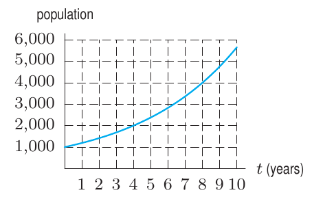
(a) Starting at t = 0, estimate the time for the population to double.
≈ 4 years
At t = 0 the population is 1000; it reaches 2000 at about t = 4.
Find where it reaches 2000.
(b) Repeat part (a), but this time start at t = 3.
≈ 4 years
At t = 3 the population is about 1700; it reaches about 3400 at t ≈ 7, so again ≈ 4 years.
Double the value at t = 3.
(c) Pick any other value of t for the starting point. What do you notice about the doubling time?
It is the same no matter where you start
For exponential growth the doubling time is constant: ≈ 4 years from any starting point.
Exponential growth has a fixed doubling time.
Textbook Question · Problem 23
Same as Lecture Example 6 (Doubling Time and Half-Life)
If the quantity of a substance decreases by 4% in 10 hours,
find its half-life.
≈ 170 hours
0.96 = e10k → k = ln(0.96)/10 ≈ −0.00408 → t = −ln 2/k ≈ 170 hours.
96% remains after 10 hours.
Textbook Question · Problem 24
Pregnant women metabolize some drugs at a slower rate than the rest of the population. The half-life of caffeine is about 4 hours for most people. In pregnant women, it is 10 hours. (This is important because caffeine, like all psychoactive drugs, crosses the placenta to the fetus.)
If a pregnant woman and her husband each have a cup of coffee containing 100 mg of caffeine at 8 am, how much caffeine does each have left in the body at 10 pm?
The half-life of radioactive strontium-90 is 29 years. In 1960, radioactive strontium-90 was released into the atmosphere during testing of nuclear weapons, and was absorbed into people's bones.
How many years does it take until only 10% of the original amount absorbed remains?
≈ 96.3 years
k = −ln 2/29 ≈ −0.0239. 0.1 = ekt → t = ln 0.1/k ≈ 96.3 years.
Find k, then solve for 10%.
Textbook Question · Problem 28
Find the doubling time of an investment which is earning 8% interest per year.
t = ?
≈ 9.01 years
t = ln 2 / ln 1.08 ≈ 9.01 years.
Annual rate → ln 1.08.
Textbook Question · Problem 31
A picture supposedly painted by Vermeer (1632–1675) contains 99.5% of its carbon-14 (half-life 5730 years).
From this information decide whether the picture is a fake. Explain your reasoning.
Fake: its age is only about 41 years
k = −ln 2/5730. 0.995 = ekt → t = ln 0.995/k ≈ 41 years. A real Vermeer would be over 300 years old, so the picture is a fake.
Find the age from 99.5%.
Past Exam Question · 2024 Q4
Ampicillin is an antibiotic drug used to treat bacterial infections. 250 mg of Ampicillin was given to a patient initially, and the amount of the drug in the bloodstream was monitored and recorded in the table below.
t (hours)
0
1
2
3
4
5
Q (mg)
250
150
90
54
32.4
19.44
a. Suppose Q = f(t), where Q is the quantity of ampicillin, in mg, in the bloodstream at time t hours since the drug was given. Find a suitable formula for Q as a function of t.
Q = 250(0.6)ᵗ
Ratios 150/250 = 90/150 = 0.6 → Q = 250(0.6)ᵗ.
Constant ratio.
b. Find the half-life of ampicillin.
≈ 1.36 hours
t = −ln 2 / ln 0.6 ≈ 1.36 hours.
t = −ln 2 / ln a.
c. When will the remaining amount of ampicillin reach 6.9984 mg?
Apixaban is a drug which is used to prevent and treat serious blood clots.
If 81.23% of an Apixaban dose remains in the body after 3 hours, find the half-life of this drug.
≈ 10 hours
0.8123 = e3k → k = ln(0.8123)/3 ≈ −0.0693 → t = −ln 2/k ≈ 10 hours.
Find k from 3 hours.
3. Compound Interest, Present & Future Value
0 lecture · 11 textbook questions
Textbook Question · Problem 3
If you deposit $10,000 in an account earning interest at an 8% annual rate compounded continuously,
how much money is in the account after five years?
≈ $14,918.25
B = 10,000e0.08(5) = 10,000e0.4 ≈ $14,918.25.
B = P e^(rt).
Textbook Question · Problem 4
If you need $20,000 in your bank account in 6 years,
how much must be deposited now? The interest rate is 10%, compounded continuously.
≈ $10,976.23
20,000 = Pe0.1(6) → P = 20,000e−0.6 ≈ $10,976.23.
Present value = future × e^(−rt).
Textbook Question · Problem 6
Suppose $1000 is invested in an account paying interest at a rate of 5.5% per year. How much is in the account after 8 years if the interest is compounded
(a) Annually?
≈ $1,534.69
1000(1.055)⁸ ≈ $1,534.69.
Annual → (1.055)⁸.
(b) Continuously?
≈ $1,552.71
1000e0.055(8) = 1000e0.44 ≈ $1,552.71.
Continuous gives a little more.
Textbook Question · Problem 8
If $12,000 is deposited in an account paying 8% interest per year, compounded continuously,
how long will it take for the balance to reach $20,000?
≈ 6.39 years
t = ln(20,000/12,000)/0.08 ≈ 6.39 years.
Divide, ln, ÷ 0.08.
Textbook Question · Problem 9
You want to invest money for your child's education in a certificate of deposit (CD). You want it to be worth $12,000 in 10 years. How much should you invest if the CD pays interest at a 9% annual rate compounded
(a) Annually?
≈ $5,068.93
12,000/(1.09)¹⁰ ≈ $5,068.93.
Divide by 1.09¹⁰.
(b) Continuously?
≈ $4,878.84
12,000e−0.9 ≈ $4,878.84.
Multiply by e^(−0.9).
Textbook Question · Problem 13
Figure 1.67 shows the balances in two bank accounts. Both accounts pay the same interest rate, but one compounds continuously and the other compounds annually.
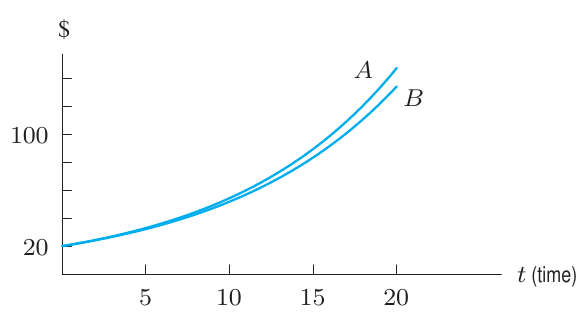
Which curve corresponds to which compounding method? What is the initial deposit in each case?
A: continuous; B: annual. Initial deposit: $20 each
Continuous compounding grows a little faster, so the higher curve A is continuous and B is annual. Both start at $20.
Continuous gives more money.
Textbook Question · Problem 29
The island of Manhattan was sold for $24 in 1626. Suppose the money had been invested in an account which compounded interest continuously.
a. (i) How much money would be in the account in the year 2005 if the yearly interest rate was 5%?
≈ $4.07 × 10⁹
t = 379: 24e0.05(379) ≈ $4.07 × 10⁹.
2005 − 1626 = 379.
a. (ii) How much money would be in the account in the year 2005 if the yearly interest rate was 7%?
≈ $7.98 × 10¹²
24e0.07(379) ≈ $7.98 × 10¹².
t = 379.
b. If the yearly interest rate was 6%, in what year would the account be worth one million dollars?
A tree of height y meters has, on average, B branches, where B = y − 1. Each branch has, on average, n leaves where n = 2B² − B.
Find the average number of leaves of a tree as a function of height.
Leaves = 2(y − 1)³ − (y − 1)²
Leaves = n · B = (2B² − B)B = 2B³ − B², with B = y − 1: Leaves = 2(y − 1)³ − (y − 1)².
Total leaves = leaves per branch × number of branches.
Textbook Question · Problem 24
In Problems 24–27, use Figure 1.78 to estimate the function value or explain why it cannot be done.
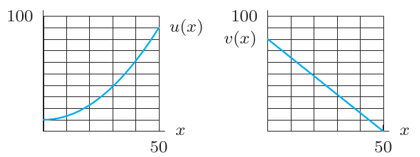
u(v(10))
Cannot be done
v(10) ≈ 60, but u is only graphed for 0 ≤ x ≤ 50, so u(60) cannot be found from the graph.
The inside output must be inside the domain shown for the outside function.
Textbook Question · Problem 25
Use Figure 1.78 to estimate the function value or explain why it cannot be done.
u(v(40))
≈ 18
v(40) ≈ 16 → u(16) ≈ 18.
The inside output must be inside the domain shown for the outside function.
Textbook Question · Problem 26
Use Figure 1.78 to estimate the function value or explain why it cannot be done.
v(u(10))
≈ 59
u(10) ≈ 13 → v(13) ≈ 59.
The inside output must be inside the domain shown for the outside function.
Textbook Question · Problem 27
Use Figure 1.78 to estimate the function value or explain why it cannot be done.
v(u(40))
Cannot be done
u(40) ≈ 62, but v is only graphed for 0 ≤ x ≤ 50, so v(62) cannot be found from the graph.
The inside output must be inside the domain shown for the outside function.
2. Stretches, Shifts & Reflections
4 lecture · 16 textbook · 1 past exam questions
Lecture Question · Ex 7
Sketch the graph of the functions:
(a) y = x²
A parabola opening upward with vertex (0, 0)
y = x² is a U-shaped parabola opening upward, vertex at the origin.
x² is never negative.
(b) y = −x²
A parabola opening downward with vertex (0, 0)
y = −x² is the reflection of y = x² across the x-axis: opening downward, vertex (0, 0).
The minus sign flips it.
Lecture Question · Ex 8
a) Using Desmos, sketch the graph of y = √(9 − x²).
The upper half of a circle of radius 3, from (−3, 0) to (3, 0) with top (0, 3)
y = √(9 − x²) ≥ 0 is the upper semicircle of radius 3 centered at the origin.
x² + y² = 9 with y ≥ 0.
b) Sketch the graph of y = −√(9 − x²).
The lower half of the circle, with bottom (0, −3)
The minus sign reflects the upper semicircle across the x-axis: the lower semicircle, lowest point (0, −3).
Reflection across the x-axis.
c) Sketch the graph of y = 2√(9 − x²).
The upper semicircle stretched vertically: from (−3, 0) to (3, 0) with top (0, 6)
Multiplying by 2 stretches vertically by 2: same ends (±3, 0), top at (0, 6).
Outside × 2 = vertical stretch.
d) Sketch the graph of y = (1/3)√(9 − x²).
The upper semicircle compressed vertically: from (−3, 0) to (3, 0) with top (0, 1)
Multiplying by 1/3 compresses vertically: ends (±3, 0), top at (0, 1).
Outside × 1/3 = vertical compression.
Lecture Question · Ex 9
Sketch the graph of each of the following functions:
a) y = eˣ + 2
The graph of eˣ shifted 2 up: passes (0, 3), horizontal asymptote y = 2
Adding 2 outside shifts eˣ up 2: (0, 1) → (0, 3) and the asymptote y = 0 → y = 2.
Outside + 2 = up 2.
b) y = ln(x − 2)
The graph of ln x shifted 2 right: passes (3, 0), vertical asymptote x = 2
x − 2 inside shifts ln x right 2: (1, 0) → (3, 0) and the asymptote x = 0 → x = 2.
Inside − 2 = right 2.
Lecture Question · Ex 10
Sketch the graph of each of the following functions:
a) y = x² + 3
Parabola shifted 3 up: vertex (0, 3)
Outside + 3: up 3, vertex (0, 3).
Outside = up/down.
b) y = (x + 3)²
Parabola shifted 3 left: vertex (−3, 0)
Inside + 3: left 3, vertex (−3, 0).
Inside + = left.
c) y = (x − 2)²
Parabola shifted 2 right: vertex (2, 0)
Inside − 2: right 2, vertex (2, 0).
Inside − = right.
Textbook Question · Problem 28
The Heaviside step function, H, is graphed in Figure 1.79. Graph the following functions.
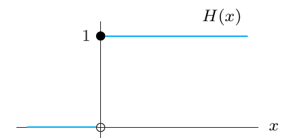
(a) Graph y = 2H(x). Which description is correct?
Stretch vertically by 2; the point (0, 1) moves to (0, 2)
y = 2H(x) has the form y = A·H(x − h) + k with A = 2, h = 0, k = 0. Stretch vertically by 2. A point (x, y) on the graph of H moves to (x + h, A·y + k): (0, 1) → (0, 2).
Inside the brackets (x ± c) moves the graph left/right in the opposite direction; outside changes move it up/down or stretch it.
(b) Graph y = H(x) + 1. Which description is correct?
Shift 1 unit up; the point (0, 1) moves to (0, 2)
y = H(x) + 1 has the form y = A·H(x − h) + k with A = 1, h = 0, k = 1. Shift 1 unit up. A point (x, y) on the graph of H moves to (x + h, A·y + k): (0, 1) → (0, 2).
Inside the brackets (x ± c) moves the graph left/right in the opposite direction; outside changes move it up/down or stretch it.
(c) Graph y = H(x + 1). Which description is correct?
Shift 1 unit left; the point (0, 1) moves to (−1, 1)
y = H(x + 1) has the form y = A·H(x − h) + k with A = 1, h = −1, k = 0. Shift 1 unit left. A point (x, y) on the graph of H moves to (x + h, A·y + k): (0, 1) → (−1, 1).
Inside the brackets (x ± c) moves the graph left/right in the opposite direction; outside changes move it up/down or stretch it.
(d) Graph y = −H(x). Which description is correct?
Reflect across the x-axis; the point (0, 1) moves to (0, −1)
y = −H(x) has the form y = A·H(x − h) + k with A = −1, h = 0, k = 0. Reflect across the x-axis. A point (x, y) on the graph of H moves to (x + h, A·y + k): (0, 1) → (0, −1).
Inside the brackets (x ± c) moves the graph left/right in the opposite direction; outside changes move it up/down or stretch it.
Textbook Question · Problem 29
For the functions f in Exercises 29–31, graph: (a) f(x + 2) (b) f(x − 1) (c) f(x) − 4 (d) f(x + 1) + 3 (e) 3f(x) (f) −f(x) + 1
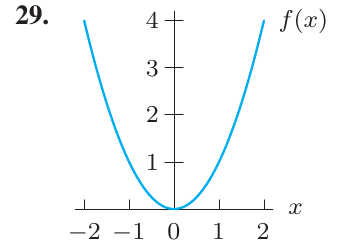
(a) Graph y = f(x + 2). Which description is correct?
Shift 2 units left; the point (2, 4) moves to (0, 4)
y = f(x + 2) has the form y = A·f(x − h) + k with A = 1, h = −2, k = 0. Shift 2 units left. A point (x, y) on the graph of f moves to (x + h, A·y + k): (2, 4) → (0, 4).
Inside the brackets (x ± c) moves the graph left/right in the opposite direction; outside changes move it up/down or stretch it.
(b) Graph y = f(x − 1). Which description is correct?
Shift 1 unit right; the point (2, 4) moves to (3, 4)
y = f(x − 1) has the form y = A·f(x − h) + k with A = 1, h = 1, k = 0. Shift 1 unit right. A point (x, y) on the graph of f moves to (x + h, A·y + k): (2, 4) → (3, 4).
Inside the brackets (x ± c) moves the graph left/right in the opposite direction; outside changes move it up/down or stretch it.
(c) Graph y = f(x) − 4. Which description is correct?
Shift 4 units down; the point (2, 4) moves to (2, 0)
y = f(x) − 4 has the form y = A·f(x − h) + k with A = 1, h = 0, k = −4. Shift 4 units down. A point (x, y) on the graph of f moves to (x + h, A·y + k): (2, 4) → (2, 0).
Inside the brackets (x ± c) moves the graph left/right in the opposite direction; outside changes move it up/down or stretch it.
(d) Graph y = f(x + 1) + 3. Which description is correct?
Shift 1 unit left, then shift 3 units up; the point (2, 4) moves to (1, 7)
y = f(x + 1) + 3 has the form y = A·f(x − h) + k with A = 1, h = −1, k = 3. Shift 1 unit left, then shift 3 units up. A point (x, y) on the graph of f moves to (x + h, A·y + k): (2, 4) → (1, 7).
Inside the brackets (x ± c) moves the graph left/right in the opposite direction; outside changes move it up/down or stretch it.
(e) Graph y = 3f(x). Which description is correct?
Stretch vertically by 3; the point (2, 4) moves to (2, 12)
y = 3f(x) has the form y = A·f(x − h) + k with A = 3, h = 0, k = 0. Stretch vertically by 3. A point (x, y) on the graph of f moves to (x + h, A·y + k): (2, 4) → (2, 12).
Inside the brackets (x ± c) moves the graph left/right in the opposite direction; outside changes move it up/down or stretch it.
(f) Graph y = −f(x) + 1. Which description is correct?
Reflect across the x-axis, then shift 1 unit up; the point (2, 4) moves to (2, −3)
y = −f(x) + 1 has the form y = A·f(x − h) + k with A = −1, h = 0, k = 1. Reflect across the x-axis, then shift 1 unit up. A point (x, y) on the graph of f moves to (x + h, A·y + k): (2, 4) → (2, −3).
Inside the brackets (x ± c) moves the graph left/right in the opposite direction; outside changes move it up/down or stretch it.
(a) Graph y = f(x + 2). Which description is correct?
Shift 2 units left; the point (0, 1) moves to (−2, 1)
y = f(x + 2) has the form y = A·f(x − h) + k with A = 1, h = −2, k = 0. Shift 2 units left. A point (x, y) on the graph of f moves to (x + h, A·y + k): (0, 1) → (−2, 1).
Inside the brackets (x ± c) moves the graph left/right in the opposite direction; outside changes move it up/down or stretch it.
(b) Graph y = f(x − 1). Which description is correct?
Shift 1 unit right; the point (0, 1) moves to (1, 1)
y = f(x − 1) has the form y = A·f(x − h) + k with A = 1, h = 1, k = 0. Shift 1 unit right. A point (x, y) on the graph of f moves to (x + h, A·y + k): (0, 1) → (1, 1).
Inside the brackets (x ± c) moves the graph left/right in the opposite direction; outside changes move it up/down or stretch it.
(c) Graph y = f(x) − 4. Which description is correct?
Shift 4 units down; the point (0, 1) moves to (0, −3)
y = f(x) − 4 has the form y = A·f(x − h) + k with A = 1, h = 0, k = −4. Shift 4 units down. A point (x, y) on the graph of f moves to (x + h, A·y + k): (0, 1) → (0, −3).
Inside the brackets (x ± c) moves the graph left/right in the opposite direction; outside changes move it up/down or stretch it.
(d) Graph y = f(x + 1) + 3. Which description is correct?
Shift 1 unit left, then shift 3 units up; the point (0, 1) moves to (−1, 4)
y = f(x + 1) + 3 has the form y = A·f(x − h) + k with A = 1, h = −1, k = 3. Shift 1 unit left, then shift 3 units up. A point (x, y) on the graph of f moves to (x + h, A·y + k): (0, 1) → (−1, 4).
Inside the brackets (x ± c) moves the graph left/right in the opposite direction; outside changes move it up/down or stretch it.
(e) Graph y = 3f(x). Which description is correct?
Stretch vertically by 3; the point (0, 1) moves to (0, 3)
y = 3f(x) has the form y = A·f(x − h) + k with A = 3, h = 0, k = 0. Stretch vertically by 3. A point (x, y) on the graph of f moves to (x + h, A·y + k): (0, 1) → (0, 3).
Inside the brackets (x ± c) moves the graph left/right in the opposite direction; outside changes move it up/down or stretch it.
(f) Graph y = −f(x) + 1. Which description is correct?
Reflect across the x-axis, then shift 1 unit up; the point (0, 1) moves to (0, 0)
y = −f(x) + 1 has the form y = A·f(x − h) + k with A = −1, h = 0, k = 1. Reflect across the x-axis, then shift 1 unit up. A point (x, y) on the graph of f moves to (x + h, A·y + k): (0, 1) → (0, 0).
Inside the brackets (x ± c) moves the graph left/right in the opposite direction; outside changes move it up/down or stretch it.
(a) Graph y = f(x + 2). Which description is correct?
Shift 2 units left; the point (0, 1) moves to (−2, 1)
y = f(x + 2) has the form y = A·f(x − h) + k with A = 1, h = −2, k = 0. Shift 2 units left. A point (x, y) on the graph of f moves to (x + h, A·y + k): (0, 1) → (−2, 1).
Inside the brackets (x ± c) moves the graph left/right in the opposite direction; outside changes move it up/down or stretch it.
(b) Graph y = f(x − 1). Which description is correct?
Shift 1 unit right; the point (0, 1) moves to (1, 1)
y = f(x − 1) has the form y = A·f(x − h) + k with A = 1, h = 1, k = 0. Shift 1 unit right. A point (x, y) on the graph of f moves to (x + h, A·y + k): (0, 1) → (1, 1).
Inside the brackets (x ± c) moves the graph left/right in the opposite direction; outside changes move it up/down or stretch it.
(c) Graph y = f(x) − 4. Which description is correct?
Shift 4 units down; the point (0, 1) moves to (0, −3)
y = f(x) − 4 has the form y = A·f(x − h) + k with A = 1, h = 0, k = −4. Shift 4 units down. A point (x, y) on the graph of f moves to (x + h, A·y + k): (0, 1) → (0, −3).
Inside the brackets (x ± c) moves the graph left/right in the opposite direction; outside changes move it up/down or stretch it.
(d) Graph y = f(x + 1) + 3. Which description is correct?
Shift 1 unit left, then shift 3 units up; the point (0, 1) moves to (−1, 4)
y = f(x + 1) + 3 has the form y = A·f(x − h) + k with A = 1, h = −1, k = 3. Shift 1 unit left, then shift 3 units up. A point (x, y) on the graph of f moves to (x + h, A·y + k): (0, 1) → (−1, 4).
Inside the brackets (x ± c) moves the graph left/right in the opposite direction; outside changes move it up/down or stretch it.
(e) Graph y = 3f(x). Which description is correct?
Stretch vertically by 3; the point (0, 1) moves to (0, 3)
y = 3f(x) has the form y = A·f(x − h) + k with A = 3, h = 0, k = 0. Stretch vertically by 3. A point (x, y) on the graph of f moves to (x + h, A·y + k): (0, 1) → (0, 3).
Inside the brackets (x ± c) moves the graph left/right in the opposite direction; outside changes move it up/down or stretch it.
(f) Graph y = −f(x) + 1. Which description is correct?
Reflect across the x-axis, then shift 1 unit up; the point (0, 1) moves to (0, 0)
y = −f(x) + 1 has the form y = A·f(x − h) + k with A = −1, h = 0, k = 1. Reflect across the x-axis, then shift 1 unit up. A point (x, y) on the graph of f moves to (x + h, A·y + k): (0, 1) → (0, 0).
Inside the brackets (x ± c) moves the graph left/right in the opposite direction; outside changes move it up/down or stretch it.
Textbook Question · Problem 32
Graph the functions in Problems 32–37 using Figure 1.80.
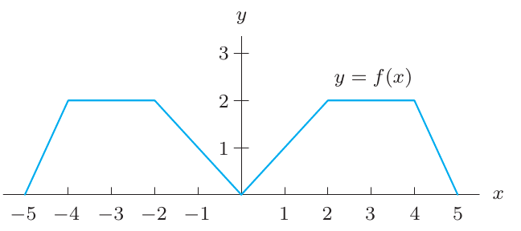
Graph y = f(x) + 2. Which description is correct?
Shift 2 units up; the point (2, 2) moves to (2, 4)
y = f(x) + 2 has the form y = A·f(x − h) + k with A = 1, h = 0, k = 2. Shift 2 units up. A point (x, y) on the graph of f moves to (x + h, A·y + k): (2, 2) → (2, 4).
Inside the brackets (x ± c) moves the graph left/right in the opposite direction; outside changes move it up/down or stretch it.
Textbook Question · Problem 33
Graph the function using Figure 1.80.
Graph y = 2f(x). Which description is correct?
Stretch vertically by 2; the point (2, 2) moves to (2, 4)
y = 2f(x) has the form y = A·f(x − h) + k with A = 2, h = 0, k = 0. Stretch vertically by 2. A point (x, y) on the graph of f moves to (x + h, A·y + k): (2, 2) → (2, 4).
Inside the brackets (x ± c) moves the graph left/right in the opposite direction; outside changes move it up/down or stretch it.
Textbook Question · Problem 34
Graph the function using Figure 1.80.
Graph y = f(x − 1). Which description is correct?
Shift 1 unit right; the point (2, 2) moves to (3, 2)
y = f(x − 1) has the form y = A·f(x − h) + k with A = 1, h = 1, k = 0. Shift 1 unit right. A point (x, y) on the graph of f moves to (x + h, A·y + k): (2, 2) → (3, 2).
Inside the brackets (x ± c) moves the graph left/right in the opposite direction; outside changes move it up/down or stretch it.
Textbook Question · Problem 35
Graph the function using Figure 1.80.
Graph y = −3f(x). Which description is correct?
Stretch vertically by 3, then reflect across the x-axis; the point (2, 2) moves to (2, −6)
y = −3f(x) has the form y = A·f(x − h) + k with A = −3, h = 0, k = 0. Stretch vertically by 3, then reflect across the x-axis. A point (x, y) on the graph of f moves to (x + h, A·y + k): (2, 2) → (2, −6).
Inside the brackets (x ± c) moves the graph left/right in the opposite direction; outside changes move it up/down or stretch it.
Textbook Question · Problem 36
Graph the function using Figure 1.80.
Graph y = 2f(x) − 1. Which description is correct?
Stretch vertically by 2, then shift 1 unit down; the point (2, 2) moves to (2, 3)
y = 2f(x) − 1 has the form y = A·f(x − h) + k with A = 2, h = 0, k = −1. Stretch vertically by 2, then shift 1 unit down. A point (x, y) on the graph of f moves to (x + h, A·y + k): (2, 2) → (2, 3).
Inside the brackets (x ± c) moves the graph left/right in the opposite direction; outside changes move it up/down or stretch it.
Textbook Question · Problem 37
Graph the function using Figure 1.80.
Graph y = 2 − f(x). Which description is correct?
Reflect across the x-axis, then shift 2 units up; the point (2, 2) moves to (2, 0)
y = 2 − f(x) has the form y = A·f(x − h) + k with A = −1, h = 0, k = 2. Reflect across the x-axis, then shift 2 units up. A point (x, y) on the graph of f moves to (x + h, A·y + k): (2, 2) → (2, 0).
Inside the brackets (x ± c) moves the graph left/right in the opposite direction; outside changes move it up/down or stretch it.
Textbook Question · Problem 38
For the functions f(x) in Problems 38–41, graph: (a) y = f(x) + 2 (b) y = f(x − 1) (c) y = 3f(x) (d) y = −f(x)
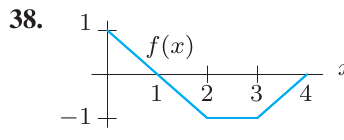
(a) Graph y = f(x) + 2. Which description is correct?
Shift 2 units up; the point (0, 1) moves to (0, 3)
y = f(x) + 2 has the form y = A·f(x − h) + k with A = 1, h = 0, k = 2. Shift 2 units up. A point (x, y) on the graph of f moves to (x + h, A·y + k): (0, 1) → (0, 3).
Inside the brackets (x ± c) moves the graph left/right in the opposite direction; outside changes move it up/down or stretch it.
(b) Graph y = f(x − 1). Which description is correct?
Shift 1 unit right; the point (0, 1) moves to (1, 1)
y = f(x − 1) has the form y = A·f(x − h) + k with A = 1, h = 1, k = 0. Shift 1 unit right. A point (x, y) on the graph of f moves to (x + h, A·y + k): (0, 1) → (1, 1).
Inside the brackets (x ± c) moves the graph left/right in the opposite direction; outside changes move it up/down or stretch it.
(c) Graph y = 3f(x). Which description is correct?
Stretch vertically by 3; the point (0, 1) moves to (0, 3)
y = 3f(x) has the form y = A·f(x − h) + k with A = 3, h = 0, k = 0. Stretch vertically by 3. A point (x, y) on the graph of f moves to (x + h, A·y + k): (0, 1) → (0, 3).
Inside the brackets (x ± c) moves the graph left/right in the opposite direction; outside changes move it up/down or stretch it.
(d) Graph y = −f(x). Which description is correct?
Reflect across the x-axis; the point (0, 1) moves to (0, −1)
y = −f(x) has the form y = A·f(x − h) + k with A = −1, h = 0, k = 0. Reflect across the x-axis. A point (x, y) on the graph of f moves to (x + h, A·y + k): (0, 1) → (0, −1).
Inside the brackets (x ± c) moves the graph left/right in the opposite direction; outside changes move it up/down or stretch it.
Textbook Question · Problem 39
Graph: (a) y = f(x) + 2 (b) y = f(x − 1) (c) y = 3f(x) (d) y = −f(x)
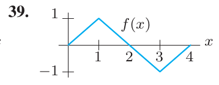
(a) Graph y = f(x) + 2. Which description is correct?
Shift 2 units up; the point (1, 1) moves to (1, 3)
y = f(x) + 2 has the form y = A·f(x − h) + k with A = 1, h = 0, k = 2. Shift 2 units up. A point (x, y) on the graph of f moves to (x + h, A·y + k): (1, 1) → (1, 3).
Inside the brackets (x ± c) moves the graph left/right in the opposite direction; outside changes move it up/down or stretch it.
(b) Graph y = f(x − 1). Which description is correct?
Shift 1 unit right; the point (1, 1) moves to (2, 1)
y = f(x − 1) has the form y = A·f(x − h) + k with A = 1, h = 1, k = 0. Shift 1 unit right. A point (x, y) on the graph of f moves to (x + h, A·y + k): (1, 1) → (2, 1).
Inside the brackets (x ± c) moves the graph left/right in the opposite direction; outside changes move it up/down or stretch it.
(c) Graph y = 3f(x). Which description is correct?
Stretch vertically by 3; the point (1, 1) moves to (1, 3)
y = 3f(x) has the form y = A·f(x − h) + k with A = 3, h = 0, k = 0. Stretch vertically by 3. A point (x, y) on the graph of f moves to (x + h, A·y + k): (1, 1) → (1, 3).
Inside the brackets (x ± c) moves the graph left/right in the opposite direction; outside changes move it up/down or stretch it.
(d) Graph y = −f(x). Which description is correct?
Reflect across the x-axis; the point (1, 1) moves to (1, −1)
y = −f(x) has the form y = A·f(x − h) + k with A = −1, h = 0, k = 0. Reflect across the x-axis. A point (x, y) on the graph of f moves to (x + h, A·y + k): (1, 1) → (1, −1).
Inside the brackets (x ± c) moves the graph left/right in the opposite direction; outside changes move it up/down or stretch it.
Textbook Question · Problem 40
Graph: (a) y = f(x) + 2 (b) y = f(x − 1) (c) y = 3f(x) (d) y = −f(x)
(a) Graph y = f(x) + 2. Which description is correct?
Shift 2 units up; the point (0, 2) moves to (0, 4)
y = f(x) + 2 has the form y = A·f(x − h) + k with A = 1, h = 0, k = 2. Shift 2 units up. A point (x, y) on the graph of f moves to (x + h, A·y + k): (0, 2) → (0, 4).
Inside the brackets (x ± c) moves the graph left/right in the opposite direction; outside changes move it up/down or stretch it.
(b) Graph y = f(x − 1). Which description is correct?
Shift 1 unit right; the point (0, 2) moves to (1, 2)
y = f(x − 1) has the form y = A·f(x − h) + k with A = 1, h = 1, k = 0. Shift 1 unit right. A point (x, y) on the graph of f moves to (x + h, A·y + k): (0, 2) → (1, 2).
Inside the brackets (x ± c) moves the graph left/right in the opposite direction; outside changes move it up/down or stretch it.
(c) Graph y = 3f(x). Which description is correct?
Stretch vertically by 3; the point (0, 2) moves to (0, 6)
y = 3f(x) has the form y = A·f(x − h) + k with A = 3, h = 0, k = 0. Stretch vertically by 3. A point (x, y) on the graph of f moves to (x + h, A·y + k): (0, 2) → (0, 6).
Inside the brackets (x ± c) moves the graph left/right in the opposite direction; outside changes move it up/down or stretch it.
(d) Graph y = −f(x). Which description is correct?
Reflect across the x-axis; the point (0, 2) moves to (0, −2)
y = −f(x) has the form y = A·f(x − h) + k with A = −1, h = 0, k = 0. Reflect across the x-axis. A point (x, y) on the graph of f moves to (x + h, A·y + k): (0, 2) → (0, −2).
Inside the brackets (x ± c) moves the graph left/right in the opposite direction; outside changes move it up/down or stretch it.
Textbook Question · Problem 41
Graph: (a) y = f(x) + 2 (b) y = f(x − 1) (c) y = 3f(x) (d) y = −f(x)
(a) Graph y = f(x) + 2. Which description is correct?
Shift 2 units up; the point (3, 3) moves to (3, 5)
y = f(x) + 2 has the form y = A·f(x − h) + k with A = 1, h = 0, k = 2. Shift 2 units up. A point (x, y) on the graph of f moves to (x + h, A·y + k): (3, 3) → (3, 5).
Inside the brackets (x ± c) moves the graph left/right in the opposite direction; outside changes move it up/down or stretch it.
(b) Graph y = f(x − 1). Which description is correct?
Shift 1 unit right; the point (3, 3) moves to (4, 3)
y = f(x − 1) has the form y = A·f(x − h) + k with A = 1, h = 1, k = 0. Shift 1 unit right. A point (x, y) on the graph of f moves to (x + h, A·y + k): (3, 3) → (4, 3).
Inside the brackets (x ± c) moves the graph left/right in the opposite direction; outside changes move it up/down or stretch it.
(c) Graph y = 3f(x). Which description is correct?
Stretch vertically by 3; the point (3, 3) moves to (3, 9)
y = 3f(x) has the form y = A·f(x − h) + k with A = 3, h = 0, k = 0. Stretch vertically by 3. A point (x, y) on the graph of f moves to (x + h, A·y + k): (3, 3) → (3, 9).
Inside the brackets (x ± c) moves the graph left/right in the opposite direction; outside changes move it up/down or stretch it.
(d) Graph y = −f(x). Which description is correct?
Reflect across the x-axis; the point (3, 3) moves to (3, −3)
y = −f(x) has the form y = A·f(x − h) + k with A = −1, h = 0, k = 0. Reflect across the x-axis. A point (x, y) on the graph of f moves to (x + h, A·y + k): (3, 3) → (3, −3).
Inside the brackets (x ± c) moves the graph left/right in the opposite direction; outside changes move it up/down or stretch it.
Textbook Question · Problem 42
Same as Past Exam 2024 Question 5
Morphine, a pain-relieving drug, is administered to a patient intravenously starting at 8 am. The drug saturation curve Q = f(t) in Figure 1.81 gives the quantity, Q, of morphine in the blood t hours after 8 am.
a. Draw the drug saturation curve Q = g(t) if the IV line is started at noon instead of 8 am. Which description is correct?
The same curve shifted 4 hours to the right: Q = 0 until t = 4, then rising toward 7.2
Starting at noon means everything happens 4 hours later: the curve is shifted 4 units to the right (it starts rising at t = 4).
Later start = shift right.
b. Is g one of the following transformations of f: vertical shift, vertical stretch, horizontal shift, horizontal stretch? If so, which?
Horizontal shift
It is a horizontal shift (4 hours to the right).
Time moves → horizontal.
c. Write g(t) in terms of the function f.
g(t) = f(t − 4)
Shift right 4: g(t) = f(t − 4).
Right shift = minus inside.
Textbook Question · Problem 43
(a) Write an equation for a graph obtained by vertically stretching the graph of y = x² by a factor of 2, followed by a vertical upward shift of 1 unit.
y = 2x² + 1
Stretch: 2x². Then up 1: y = 2x² + 1.
Stretch first, then add 1.
(b) What is the equation if the order of the transformations (stretching and shifting) in part (a) is interchanged?
y = 2(x² + 1) = 2x² + 2
Shift first: x² + 1. Then stretch by 2: y = 2(x² + 1) = 2x² + 2.
Now the 1 is also multiplied by 2.
(c) Are the two graphs the same? Explain the effect of reversing the order of transformations.
No: 2x² + 1 has vertex (0, 1) and 2x² + 2 has vertex (0, 2); the order matters
2x² + 1 ≠ 2x² + 2. When the shift is done first, the stretch also doubles the shift, so the order matters.
Compare the vertices.
Past Exam Question · 2024 Q5
Same as Textbook Problem 42
A pain-relieving drug, called Morphine, is administered to a patient intravenously starting at 8 am. The drug saturation curve Q = f(t) in the figure below gives the quantity, Q, of morphine in the blood t hours after 8 am.
a. Sketch a new drug saturation curve Q = g(t) if the drug is administered at noon (12 pm) instead of 8 am. Which description is correct?
The same curve shifted 4 hours to the right: Q = 0 until t = 4, then rising toward 7.2
Noon is 4 hours after 8 am: the curve shifts 4 units right.
Later start = shift right.
b. Write g(t) in terms of the function f(t).
g(t) = f(t − 4)
g(t) = f(t − 4).
Right shift = minus inside.
Lecture 8Proportionality and Power Functions (1.9)
5 lecture · 30 textbook · 1 past exam questions
التناسب (Proportionality) يعني شي يمشي مع شي ثاني بنسبة ثابتة: y = k × (…). ودالة القوة (Power function) هي y = kxp.
⚖️ تناسب (Proportional)كتلة القلب تكبر مع كتلة الجسم
⚡ دالة قوة (Power)x تحت والأس رقم ثابت: x², √x, 1/x
🧆 تشبيه: سعر الفلافل يتناسب مع العدد. حبتين = ضعف السعر، 3 حبات = 3 أضعاف. السعر للحبة الوحدة هو k.
بهالمحاضرة بتتعلمين 3 أشياء:
تكتبين القانون من الكلام وتطلعين k
تعرفين إذا الدالة Power وتكتبينها kxp
تعرفين شكل الرسمة من الأس p
y = kx"y is proportional to x"
k = ثابت التناسب (Constant of proportionality)، رقم ما يتغير
كلمة "proportional to" = اكتبي = k ×
x يتضاعف ← y يتضاعف معاه
"The heart mass H is proportional to body mass B". شنو القانون؟
proportional to ← نضرب بـ k: H = kB.
① القانوناكتبي y = k × (…)
② طلعي kعوضي الأرقام واقسمي
③ عوضيحطي k والرقم الجديد
✅ الجوابمع الوحدة (kg، s…)
Ex 1كتلة القلب H تتناسب مع كتلة الجسم B. إنسان 70 kg قلبه 0.42 kg. كم قلب حصان 650 kg؟
(i) القانون: H = kB
(ii) عوضي الإنسان: 0.42 = 70k
اقسمي: k = 0.42 ÷ 70 = 0.006
(iii) الحصان: H = 0.006 × 650 = 3.9
k = 0.006 | H ≈ 3.9 kg
Ex 2كتلة الدم تتناسب مع كتلة الجسم. وحيد القرن 3000 kg دمه 150 kg. اكتبي القانون، وكم دم إنسان 70 kg؟
القانون: B = kM
150 = 3000k → k = 150 ÷ 3000 = 0.05
(i) B = 0.05M
(ii) B = 0.05 × 70 = 3.5
B = 0.05M | 3.5 kg
حصان 600 kg دمه 30 kg. كم k؟ (Past exam 2022)
k = 30 ÷ 600 = 0.05، وإنسان 80 kg دمه 0.05 × 80 = 4 kg.
🔑 عشان تطلعين k: اقسمي القيمة اللي تبينها على الرقم اللي مع k (مثلاً 150 ÷ 3000) مو العكس.
الكلام
القانون
proportional to x
y = kx
… the square (المربع)
y = kx²
… the square root (الجذر)
y = k√x = kx1/2
… the cube root (الجذر التكعيبي)
y = kx1/3
inversely proportional (عكسي)
y = k ÷ x
Ex 3زمن البندول (Period) T يتناسب مع الجذر التربيعي لطوله l. بندول 4 m زمنه 10 ثواني. كم زمن بندول 0.25 m؟
(i) القانون: T = k√l
(ii) 10 = k√4 = 2k → k = 5
(iii) T = 5√0.25 = 5 × 0.5 = 2.5
T = 5√l | T = 2.5 seconds
"F is inversely proportional to the square of d". القانون؟
inversely ← d تنزل تحت، و square ← تربيع: F = k/d².
y = k xpk = المعامل (Coefficient) · p = الأس (Exponent)
الشرط: x تحت (بالقاعدة Base) والأس رقم ثابت.
المثال
Power؟
x³, √x, 1/x
✅ نعم
5.2x, 2x
❌ x فوق ← أسية (Exponential)
3x² + 4
❌ الـ "+4" تخربها
أي وحدة مو دالة قوة؟
بـ 5x الـ x فوق بالأس، فهذي أسية مو Power.
القاعدة
مثال
1/xⁿ = x−n
1/x³ = x−3
√x = x1/2
∛x = x1/3
(ab)ⁿ = aⁿbⁿ
(3x)² = 9x²
(xm)n = xmn
(x²)³ = x⁶
Ex 4 a–cاكتبيها y = kxp: 5/x³ ، 2/(3x) ، 5x²/2
(a) x تطلع فوق بأس سالب: 5/x³ = 5x−3 → k = 5, p = −3
(b) الأرقام تبقى كسر: 2/(3x) = (2/3)x−1 → k = 2/3, p = −1
(c) 5x²/2 = (5/2)x² → k = 5/2, p = 2
كلهم Power functions ✅
Ex 4 d–f5.2x ، 3√x ، (3x²)³
(d) x فوق بالأس: 5.2x → Not a power function
(e) 3√x = 3x1/2 → k = 3, p = 1/2
(f) وزعي الأس 3 على الكل: (3x²)³ = 3³ · x6 = 27x6
(d) ❌ أسية | (e) k = 3, p = ½ | (f) k = 27, p = 6
الأس p (و k، x موجبين)
الشكل
p > 1
تطلع، مقعرة للأعلى (Concave up) ∪
p = 1
خط مستقيم
0 < p < 1
تطلع، مقعرة للأسفل (Concave down) ∩
p < 0
تنزل (Decreasing)
Ex 5عدد الأنواع N يتناسب مع الجذر التكعيبي لمساحة الجزيرة A. القانون والشكل؟
Cube root: N = k∛A = kA1/3
p = 1/3 → 0 < 1/3 < 1
يعني جزيرة أكبر ← أنواع أكثر، بس الزيادة تبطّي
N = kA1/3 | Increasing و Concave down
شكل C = kW0.75؟
0 < 0.75 < 1 ← تطلع وتبطّي (Concave down).
y = kxpتناسب = y = k × (…) · طلعي k بالقسمة
إذا السؤال فيه…
سوّي
"proportional to"
y = kx
"square root"
y = k√x
"cube root"
y = kx1/3
"inversely proportional"
y = k/x
"find the constant"
عوضي القيمتين واقسمي ← k
"estimate" لقيمة جديدة
حطي k والرقم الجديد
"is it a power function?"
x تحت والأس رقم؟ حوليها kxᵖ
"describe the shape"
0 < p < 1 ← Increasing, concave down
⚠️ أخطاء شائعة:2x مو Power (x فوق) · بـ (3x²)³ لا تنسين 3³ = 27 · 1/x³ أسها −3 مو 3 · k = القيمة ÷ الرقم اللي معاها
1. Proportionality
4 lecture · 14 textbook · 1 past exam questions
Lecture Question · Ex 1
The heart mass of a mammal is proportional to its body mass.
i. Write a formula for heart mass, H, as a function of body mass, B.
H = kB
Proportional → H = kB.
"Proportional to" = multiply by a constant.
ii. A human with a body mass of 70 kilograms has a heart mass of 0.42 kilograms. Use this information to find the constant of proportionality.
k = 0.006
0.42 = 70k → k = 0.42/70 = 0.006.
Divide 0.42 by 70.
iii. Estimate the heart mass of a horse with a body mass of 650 kg.
3.9 kg
H = 0.006(650) = 3.9 kg.
Multiply by k.
Lecture Question · Ex 2
Same as Textbook Problem 22 (similar problem with different numbers: Past Exam 2022 Question 4)
The blood mass of a mammal is proportional to its body mass. A rhinoceros with body mass 3000 kilograms has blood mass of 150 kilograms.
i. Find a formula for the blood mass of a mammal as a function of the body mass.
B = 0.05M
150 = 3000k → k = 0.05 → B = 0.05M.
k = 150/3000.
ii. Estimate the blood mass of a human with body mass 70 kilograms.
3.5 kg
B = 0.05(70) = 3.5 kg.
Multiply by 0.05.
Lecture Question · Ex 3
The period of a pendulum, T, is the amount of time required for the pendulum to make one complete swing. For small swings, the period, T, is approximately proportional to the square root of l, the pendulum's length.
i. Write a formula for period, T, as a function of pendulum's length, l.
T = k√l
Proportional to the square root → T = k√l.
Square root of l times a constant.
ii. Calculate the proportionality constant k for a 4 meter pendulum with a period of 10 seconds.
k = 5
10 = k√4 = 2k → k = 5.
√4 = 2.
iii. Estimate the period T for a 0.25 meter pendulum.
T = 2.5 seconds
T = 5√0.25 = 5(0.5) = 2.5 seconds.
√0.25 = 0.5.
Lecture Question · Ex 5
If N is the average number of species found on an island and A is the area of the island, observations have shown that N is approximately proportional to the cube root of A.
Write a formula for N as a function of A and describe the shape of the graph of this function.
N = kA1/3; increasing and concave down
Cube root → N = kA1/3. Since 0 < 1/3 < 1, the graph is increasing and concave down.
Powers between 0 and 1 rise and flatten.
Textbook Question · Problem 13
In Problems 13–16, write a formula representing the function.
The strength, S, of a beam is proportional to the square of its thickness, h.
S = kh²
S = kh².
"Proportional to" = multiply by a constant.
Textbook Question · Problem 14
Write a formula representing the function.
The energy, E, expended by a swimming dolphin is proportional to the cube of the speed, v, of the dolphin.
E = kv³
E = kv³.
"Proportional to" = multiply by a constant.
Textbook Question · Problem 15
Write a formula representing the function.
The average velocity, v, for a trip over a fixed distance, d, is inversely proportional to the time of travel, t.
v = k/t (k = d)
Inversely proportional → v = k/t, where k = d.
"Inversely proportional" = constant divided by the quantity.
Textbook Question · Problem 16
Write a formula representing the function.
The gravitational force, F, between two bodies is inversely proportional to the square of the distance d between them.
F = k/d²
F = k/d².
"Inversely proportional" = constant divided by the quantity.
Textbook Question · Problem 17
The number of species of lizards, N, found on an island off Baja California is proportional to the fourth root of the area, A, of the island.
Write a formula for N as a function of A. Graph this function. Is it increasing or decreasing? Is the graph concave up or concave down? What does this tell you about lizards and island area?
N = kA1/4; increasing, concave down: more area gives more species, but gains slow down
N = kA1/4. Since 0 < 1/4 < 1, it is increasing and concave down: bigger islands have more lizard species, but the increase slows down as the area grows.
Root functions rise and flatten.
Textbook Question · Problem 18
The surface area of a mammal, S, satisfies the equation S = kM2/3, where M is the body mass, and the constant of proportionality k depends on the body shape of the mammal. A human of body mass 70 kilograms has surface area 18,600 cm².
Find the constant of proportionality for humans. Find the surface area of a human with body mass 60 kilograms.
Kleiber's Law states that the metabolic needs (such as calorie requirements) of a mammal are proportional to its body weight raised to the 0.75 power. Surprisingly, the daily diets of mammals conform to this relation well. Assuming Kleiber's Law holds:
a. Write a formula for C, daily calorie consumption, as a function of body weight, W.
C = kW0.75
C = kW0.75.
Proportional to W to the 0.75 power.
b. Sketch a graph of this function. Which description is correct?
Increasing and concave down, starting at the origin
0 < 0.75 < 1, so the graph rises from the origin and is concave down.
Power between 0 and 1.
c. If a human weighing 150 pounds needs to consume 1800 calories a day, estimate the daily calorie requirement of a horse weighing 700 lbs and of a rabbit weighing 9 lbs.
d. On a per-pound basis, which animal requires more calories: a mouse or an elephant?
The mouse
Calories per pound = kW0.75/W = kW−0.25, which is larger for small W: the mouse.
Per pound: divide by W.
Textbook Question · Problem 21
Allometry is the study of the relative size of different parts of a body as a consequence of growth. In this problem, you will check the accuracy of an allometric equation: the weight of a fish is proportional to the cube of its length. Table 1.37 relates the weight, y, in gm, of plaice (a type of fish) to its length, x, in cm.
x
33.5
34.5
35.5
36.5
37.5
38.5
y
332
363
391
419
455
500
x
39.5
40.5
41.5
42.5
43.5
y
538
574
623
674
724
Does this data support the hypothesis that (approximately) y = kx³? If so, estimate the constant of proportionality, k.
Yes, k ≈ 0.0087
y/x³ for each column is about 0.0086–0.0088 (nearly constant), so yes, with k ≈ 0.0087.
Divide each y by x³.
Textbook Question · Problem 22
Same as Lecture Example 2 (similar problem with different numbers: Past Exam 2022 Question 4)
The blood mass of a mammal is proportional to its body mass. A rhinoceros with body mass 3000 kilograms has blood mass of 150 kilograms.
Find a formula for the blood mass of a mammal as a function of the body mass and estimate the blood mass of a human with body mass 70 kilograms.
B = 0.05M; B(70) = 3.5 kg
k = 150/3000 = 0.05 → B = 0.05M; B(70) = 3.5 kg.
k = 150/3000.
Textbook Question · Problem 23
Biologists estimate that the number of animal species of a certain body length is inversely proportional to the square of the body length.
Write a formula for the number of animal species, N, of a certain body length as a function of the length, L. Are there more species at large lengths or at small lengths? Explain.
N = k/L²; more species at small lengths
N = k/L². As L increases, N decreases, so there are more species at small lengths.
Inversely: bigger L → smaller N.
Textbook Question · Problem 24
The specific heat, s, of an element is the number of calories of heat required to raise the temperature of one gram of the element by one degree Celsius.
Element
Li
Mg
Al
Fe
Ag
Pb
Hg
w
6.9
24.3
27.0
55.8
107.9
207.2
200.6
s
0.92
0.25
0.21
0.11
0.056
0.031
0.033
Use the table to decide if s is proportional or inversely proportional to the atomic weight, w, of the element. If so, find the constant of proportionality.
Inversely proportional, k ≈ 6
s·w ≈ 6.35, 6.08, 5.67, 6.14, 6.04, 6.42, 6.62 — roughly constant ≈ 6. So s ≈ 6/w: inversely proportional with k ≈ 6.
Multiply s by w.
Textbook Question · Problem 25
The circulation time of a mammal (that is, the average time it takes for all the blood in the body to circulate once and return to the heart) is proportional to the fourth root of the body mass of the mammal.
a. Write a formula for the circulation time, T, in terms of the body mass, B.
T = kB1/4
T = kB1/4.
Fourth root = power 1/4.
b. If an elephant of body mass 5230 kilograms has a circulation time of 148 seconds, find the constant of proportionality.
k ≈ 17.4
k = 148/52301/4 ≈ 148/8.504 ≈ 17.4.
Divide by the fourth root of 5230.
c. What is the circulation time of a human with body mass 70 kilograms?
≈ 50.3 seconds
T = 17.4 · 701/4 ≈ 17.4 · 2.893 ≈ 50.3 seconds.
Use k from part (b).
Textbook Question · Problem 27
The infrastructure needs of a region (for example, the number of miles of electrical cable, the number of miles of roads, the number of gas stations) depend on its population. Cities enjoy economies of scale. For example, the number of gas stations is proportional to the population raised to the power of 0.77.
a. Write a formula for the number, N, of gas stations in a city as a function of the population, P, of the city.
N = kP0.77
N = kP0.77.
Power 0.77.
b. If city A is 10 times bigger than city B, how do their number of gas stations compare?
City A has ≈ 5.9 times as many
k(10P)0.77 = 100.77 · kP0.77 ≈ 5.9 · kP0.77.
10 to the power 0.77.
c. Which is expected to have more gas stations per person, a town of 10,000 people or a city of 500,000 people?
The town of 10,000
Per person: N/P = kP−0.23, which is larger for smaller P: the town.
Economies of scale: big cities need fewer per person.
Textbook Question · Problem 28
According to the National Association of Realtors, the minimum annual gross income, m, in thousands of dollars, needed to obtain a 30-year home loan of A thousand dollars at 9% is given in Table 1.38. Note that the larger the loan, the greater the income needed. Of course, not every mortgage is financed at 9%. In fact, excepting for slight variations, mortgage interest rates are generally determined not by individual banks but by the economy as a whole. The minimum annual gross income, m, in thousands of dollars, needed for a home loan of $100,000 at various interest rates, r, is given in Table 1.39. Note that obtaining a loan at a time when interest rates are high requires a larger income.
Table 1.38
A
50
75
100
150
200
m
17.242
25.863
34.484
51.726
68.968
Table 1.39
r
8
9
10
11
12
m
31.447
34.484
37.611
40.814
44.084
a. Is the size of the loan, A, proportional to the minimum annual gross income, m?
Yes (A = 2.9m)
A/m = 50/17.242 = 75/25.863 = … ≈ 2.9 (constant), so yes: A ≈ 2.9m.
Check if A/m is constant.
b. Is the percentage rate, r, proportional to the minimum annual gross income, m?
No
r/m = 0.254, 0.261, 0.266, 0.270, 0.272 — not constant, so no.
Check if r/m is constant.
Past Exam Question · 2022 Q4
Similar problem (different numbers): Lecture Example 2 and Textbook Problem 22
The blood mass of a mammal is proportional to its body mass. A horse with body mass 600 kilograms has a blood mass of 30 kilograms.
a. Find a formula for the blood mass of a mammal, B, as a function of the body mass, M.
B = 0.05M
30 = 600k → k = 0.05 → B = 0.05M.
k = 30/600.
b. Estimate the blood mass of a human with body mass 80 kilograms.
4 kg
B = 0.05(80) = 4 kg.
Multiply by 0.05.
2. Power Functions
1 lecture · 16 textbook questions
Lecture Question · Ex 4
Which of the following are power functions? For those which are, write the function in the form y = kxᵖ, and give the coefficient k and the exponent p.
a) y = 5 / x³
Yes: y = 5x⁻³; k = 5, p = −3
5/x³ = 5x⁻³: k = 5, p = −3.
Power function: variable in the base, constant exponent.
b) y = 2 / (3x)
Yes: y = (2/3)x⁻¹; k = 2/3, p = −1
2/(3x) = (2/3)x⁻¹.
Power function: variable in the base, constant exponent.
c) y = 5x² / 2
Yes: y = (5/2)x²; k = 5/2, p = 2
5x²/2 = (5/2)x².
Power function: variable in the base, constant exponent.
d) y = 5.2ˣ
Not a power function
The variable is in the exponent: it is an exponential function, not a power function.
Power function: variable in the base, constant exponent.
e) y = 3√x
Yes: y = 3x1/2; k = 3, p = 1/2
3√x = 3x1/2.
Power function: variable in the base, constant exponent.
f) y = (3x²)³
Yes: y = 27x⁶; k = 27, p = 6
(3x²)³ = 27x⁶.
Power function: variable in the base, constant exponent.
Textbook Question · Problem 1
In Problems 1–12, determine whether or not the function is a power function. If it is a power function, write it in the form y = kxᵖ and give the values of k and p.
y = 5√x
Yes: y = 5x1/2; k = 5, p = 1/2
5√x = 5x1/2.
Power function: variable in the base, constant exponent, nothing added.
Textbook Question · Problem 2
Is it a power function? If so, write it as y = kxᵖ and give k and p.
y = 3 / x²
Yes: y = 3x⁻²; k = 3, p = −2
3/x² = 3x⁻².
Power function: variable in the base, constant exponent, nothing added.
Textbook Question · Problem 3
Is it a power function? If so, write it as y = kxᵖ and give k and p.
y = 2ˣ
Not a power function
The variable is in the exponent: exponential, not a power function.
Power function: variable in the base, constant exponent, nothing added.
Textbook Question · Problem 4
Is it a power function? If so, write it as y = kxᵖ and give k and p.
y = 3 / (8x)
Yes: y = (3/8)x⁻¹; k = 3/8, p = −1
3/(8x) = (3/8)x⁻¹.
Power function: variable in the base, constant exponent, nothing added.
Textbook Question · Problem 5
Is it a power function? If so, write it as y = kxᵖ and give k and p.
y = (3x⁵)²
Yes: y = 9x¹⁰; k = 9, p = 10
(3x⁵)² = 9x¹⁰.
Power function: variable in the base, constant exponent, nothing added.
Textbook Question · Problem 6
Is it a power function? If so, write it as y = kxᵖ and give k and p.
y = 5 / (2√x)
Yes: y = 2.5x−1/2; k = 5/2, p = −1/2
5/(2√x) = (5/2)x−1/2.
Power function: variable in the base, constant exponent, nothing added.
Textbook Question · Problem 7
Is it a power function? If so, write it as y = kxᵖ and give k and p.
y = 3 · 5ˣ
Not a power function
The variable is in the exponent: exponential, not a power function.
Power function: variable in the base, constant exponent, nothing added.
Textbook Question · Problem 8
Is it a power function? If so, write it as y = kxᵖ and give k and p.
y = 2x² / 10
Yes: y = 0.2x²; k = 1/5, p = 2
2x²/10 = (1/5)x².
Power function: variable in the base, constant exponent, nothing added.
Textbook Question · Problem 9
Is it a power function? If so, write it as y = kxᵖ and give k and p.
y = 8 / x
Yes: y = 8x⁻¹; k = 8, p = −1
8/x = 8x⁻¹.
Power function: variable in the base, constant exponent, nothing added.
Textbook Question · Problem 10
Is it a power function? If so, write it as y = kxᵖ and give k and p.
y = (5x)³
Yes: y = 125x³; k = 125, p = 3
(5x)³ = 125x³.
Power function: variable in the base, constant exponent, nothing added.
Textbook Question · Problem 11
Is it a power function? If so, write it as y = kxᵖ and give k and p.
y = 3x² + 4
Not a power function
The "+ 4" means it is not of the form kxᵖ.
Power function: variable in the base, constant exponent, nothing added.
Textbook Question · Problem 12
Is it a power function? If so, write it as y = kxᵖ and give k and p.
y = x / 5
Yes: y = 0.2x¹; k = 1/5, p = 1
x/5 = (1/5)x¹.
Power function: variable in the base, constant exponent, nothing added.
Textbook Question · Problem 19
Use shifts of power functions to find a possible formula for each of the graphs:
(a) Graph (a)
y = (x − 2)³ + 1
A cubic shape moved so its center point is (2, 1): y = (x − 2)³ + 1.
Center (h, k) → (x − h)³ + k.
(b) Graph (b)
y = −(x + 3)² − 2
A downward parabola with vertex (−3, −2): y = −(x + 3)² − 2.
Vertex (h, k) → −(x − h)² + k.
Textbook Question · Problem 26
The DuBois formula relates a person's surface area s, in m², to weight w, in kg, and height h, in cm, by s = 0.01w0.25h0.75.
a. What is the surface area of a person who weighs 65 kg and is 160 cm tall?
≈ 1.28 m²
0.01(65)0.25(160)0.75 ≈ 0.01(2.839)(45.0) ≈ 1.28 m².
Substitute both values.
b. What is the weight of a person whose height is 180 cm and who has a surface area of 1.5 m²?
≈ 86.8 kg
w0.25 = 1.5/(0.01 · 1800.75) → w = (1.5/(0.01 · 1800.75))⁴ ≈ 86.8 kg.
Isolate w^0.25, then raise to the 4th power.
c. For people of fixed weight 70 kg, solve for h as a function of s. Simplify your answer.
A standard tone of 20,000 dynes/cm² (about the loudness of a rock band) is assigned a value of 10. A subject listened to other sounds, such as a light whisper, normal conversation, thunder, a jet plane at takeoff, and so on. In each case, the subject was asked to judge the loudness and assign it a number relative to 10, the value of the standard tone. This is a "judgment of magnitude" experiment. The power law J = al0.3 was found to model the situation well, where l is the actual loudness (measured in dynes/cm²) and J is the judged loudness.
a. What is the value of a?
a ≈ 0.512
10 = a(20,000)0.3 → a = 10/20,0000.3 ≈ 0.512.
Use the standard tone.
b. What is the judged loudness if the actual loudness is 0.2 dynes/cm² (normal conversation)?
J ≈ 0.32
J = 0.512(0.2)0.3 ≈ 0.32.
Substitute l = 0.2.
c. What is the actual loudness if judged loudness is 20?
l ≈ 201,600 dynes/cm²
l = (20/0.512)1/0.3 ≈ 201,600 dynes/cm².
Raise to the power 1/0.3.
Textbook Question · Problem 30
A sporting goods wholesaler finds that when the price of a product is $25, the company sells 500 units per week. When the price is $30, the number sold per week decreases to 460 units.
Find the demand, q, as a function of price, p, assuming that the demand curve is linear.
الدالة الدورية (Periodic function) = رسمة تعيد نفسها كل فترة ثابتة، مثل الموج: تطلع وتنزل، تطلع وتنزل.
🫁 بالجسمالتنفس، ضغط الدم، الهرمونات
🌡️ بالطبيعةحرارة اليوم، المد والجزر، عدد الحيوانات
🎡 تشبيه: دولاب الهوا. تطلعين فوق، تنزلين تحت، وترجعين لنفس المكان كل لفة. وقت اللفة = الدورة، وكم تبعدين عن النص = السعة.
بهالمحاضرة بتتعلمين 3 أشياء:
تقرين الـ Period والـ Amplitude من رسمة أو جدول
تأثير A و B و D على sin و cos
تطلعين القانون من الرسمة أو الجدول
الدورة (Period) = وقت تكرار النمط مرة كاملة (من قمة لين القمة اللي بعدها)
خط المنتصف (Midline) = الخط اللي بالنص بين الأعلى والأوطى
السعة (Amplitude) = المسافة من خط المنتصف لين القمة
Amplitude = (max − min) ÷ 2نص المسافة بين الأعلى والأوطى
Midline = (max + min) ÷ 2متوسط الأعلى والأوطى
موجة بين 10 و 70. كم الـ Amplitude؟
(70 − 10) ÷ 2 = 30. و 40 هو الـ Midline.
🔑 وقت مو موجود بالرسمة؟ زيدي أو انقصي Periods كاملة لين توصلين وقت موجود. القيمة نفسها لأن النمط يتكرر.
Ex 1حرارة الفريزر بين −3°F و 2°F، فيه قمة عند 1:20 والقمة اللي بعدها 1:45. كم الـ Amplitude والـ Period؟ وكم الحرارة 12:30 و 2:45؟
(i) Amplitude = (2 − (−3)) ÷ 2 = 2.5°F
Period = 1:45 − 1:20 = 25 min
(ii) نرجع من القمة 1:20 بدورتين: 1:20 − 2 × 25 min = 12:30 ← قمة بعد
(iii) 2:45 − 2 × 25 min = 1:55 ← من الرسمة ≈ −1.5
2.5°F، 25 دقيقة | 12:30 ≈ 2°F | 2:45 ≈ −1.5°F
أشهر دالتين دوريتين. t بالـ راديان (Radians)، و π ≈ 3.14.
t
0
π/2
π
3π/2
2π
sin t
0
1
0
−1
0
cos t
1
0
−1
0
1
sin tتبدا من النص (0) وتطلع ↗️
cos tتبدا من القمة (1) وتنزل ↘️
كم الـ Amplitude والـ Period لـ sin t؟
بين −1 و 1 ← Amplitude 1، وتتكرر كل 2π ≈ 6.28.
y = D + A sin(Bt)نفس الشي مع cos
الرمز
معناه
A
Amplitude: يطول الموجة
B
Period = 2π ÷ B
D
Midline: يرفع الموجة أو ينزلها
Ex 5شنو تأثير A في y = A sin t؟ وتأثير B في y = sin(Bt)؟
(a) الموجة بين −A و A ← A هو الـ Amplitude، والـ Period يبقى 2π
(b) Period = 2π ÷ B ← B أكبر = Period أقصر (موج أكثر)، والـ Amplitude يبقى 1
A ← الطول | B ← الـ Period
Ex 2كم الـ Amplitude والـ Period لـ y = 3 sin 2t؟
A = 3 ← بين −3 و 3
B = 2 → Period = 2π ÷ 2 = π
Amplitude 3 | Period π
Ex 3من رسمة sin t ارسمي 2 sin t و sin t + 3
(i) الضرب بـ 2 ← تمدد: −2 ≤ y ≤ 2، Period 2π
(ii) +3 ← تطلع فوق 3: 2 ≤ y ≤ 4، Period 2π
(i) أطول مرتين | (ii) مرفوعة 3
Ex 4شنو الفرق عن sin t: 6 sin t ، 5 + sin t ، sin(t + π/2)
(a) Amplitude 6 بدال 1، نفس الـ Period
(b) Midline صار 5: 4 ≤ y ≤ 6
(c) الرقم داخل القوس ← يسار π/2، وتصير cos t
تمدد · فوق 5 · يسار π/2
كم الـ Period لـ y = 4 cos(½t)؟
2π ÷ ½ = 4π. الـ 4 هي الـ Amplitude.
D = (max + min) ÷ 2
A = (max − min) ÷ 2
B = 2π ÷ Period
شوفي وين تبدا عند t = 0 👇
عند t = 0 الرسمة…
استخدمي
بالنص وتطلع ↗️
+A sin
بالنص وتنزل ↘️
−A sin
عند القمة 🔝
+A cos
عند القاع ⬇️
−A cos
رسمة تبدا من القاع عند t = 0. أي وحدة؟
cos تبدا من القمة، وبالسالب تنقلب وتبدا من القاع.
Ex 6 ig(t): تبدا من 0 وتطلع، بين −3 و 3، ودورة كاملة عند 12π
تبدا بالنص وتطلع ← sin
D = 0, A = 3
B = 2π ÷ 12π = 1/6
g(t) = 3 sin(t/6)
Ex 6 iih(t): تبدا من القمة 700، أوطى نقطة 300، والـ Period = 12
تبدا من القمة ← cos
D = (700 + 300) ÷ 2 = 500
A = (700 − 300) ÷ 2 = 200
B = 2π ÷ 12 = π/6
h(t) = 500 + 200 cos(πt/6)
x
0
2
4
6
8
10
12
f(x)
5
0
−5
0
5
0
−5
Ex 7أعلى قيمة 5. كم الـ Amplitude والـ Period؟ واكتبي القانون.
(i) بين −5 و 5 ← Amplitude = 5
(ii) f(0) = 5 ورجعت 5 عند x = 8 ← Period = 8
(iii) تبدا من القمة ← cos، B = 2π ÷ 8 = π/4
5 | 8 | f(x) = 5 cos(πx/4)
Period = 6. كم B؟
B = 2π ÷ 6 = π/3.
Past Examعدد الثعالب N بين 10 و 70، يبدا من 40 وينزل أول، ويتكرر كل 6 شهور. القانون؟ وكم بعد 24 شهر؟
D = (70 + 10) ÷ 2 = 40 ، A = (70 − 10) ÷ 2 = 30
بالنص وتنزل ← −sin
B = 2π ÷ 6 = π/3
(i) N = 40 − 30 sin(πt/3)
(ii) (π/3) × 24 = 8π → sin 8π = 0 → N = 40
N = 40 − 30 sin(πt/3) | 40 ثعلب
2024 Q6ضغط الدم P بين 80 و 120 mmHg، يبدا من القاع عند t = 0، والـ Period = 3 ثواني.
D = 100 ، A = 20
من القاع ← −cos
B = 2π ÷ 3
P = 100 − 20 cos(2πt/3)
💡 24 شهر = 4 Periods بالضبط، فرجعنا لنفس نقطة البداية (40).
y = D + A sin(Bt) أو D + A cos(Bt)D = المنتصف · A = السعة · Period = 2π ÷ B
إذا السؤال فيه…
سوّي
"amplitude"
(max − min) ÷ 2
"midline"
(max + min) ÷ 2
"period" من رسمة/جدول
من قمة لين القمة اللي بعدها
"period" من قانون
2π ÷ B
وقت برا الرسمة
زيدي/انقصي Periods كاملة
"how does it differ from sin t"
A طول · D فوق/تحت · داخل القوس يمين/يسار
"find a possible formula"
D ← A ← B ← sin أو cos من نقطة البداية
⚠️ أخطاء شائعة: الـ Amplitude نص المسافة مو كلها · B = 2π ÷ Period مو الـ Period نفسه · نسيان السالب إذا تبدا تنزل أو من القاع · الحاسبة لازم على RAD
1. Periodic Data & Graphs
1 lecture · 6 textbook questions
Lecture Question · Ex 1
Figure 1.89 shows the temperature in an unopened "closed" freezer.
i. Estimate the amplitude and the period.
Amplitude 2.5°F, period 25 minutes
Temperature goes between −3°F and 2°F: amplitude = (2 − (−3))/2 = 2.5°F. One cycle (e.g. 1:20 to 1:45) takes 25 minutes.
Amplitude = half of (max − min).
ii. Estimate the temperature in the freezer at 12:30.
≈ 2°F
Go back from 1:20 (a peak, 2°F) by whole periods: 1:20 − 2(25 min) = 12:30 is also a peak: ≈ 2°F.
Use the period to go back in time.
iii. Estimate the temperature in the freezer at 2:45.
≈ −1.5°F
2:45 − 2(25 min) = 1:55, where the graph is at about −1.5°F.
Use the period to move into the graph.
Textbook Question · Problem 1
A graduate student in environmental science studied the temperature fluctuations of a river. Figure 1.99 shows the temperature of the river (in °C) every hour, with hour 0 being midnight of the first day.
a. Explain why a periodic function could be used to model these data.
The pattern repeats every day
The temperature rises and falls in the same pattern every day.
Repeating pattern = periodic.
b. Approximately when does the maximum occur? The minimum? Why does this make sense?
Maximum ≈ 8 pm; minimum ≈ 9 am (water warms during the day and cools at night)
Peaks are around hours 20, 44, 68, 92 (≈ 8 pm); lows around 9 am. The water warms during the day and cools at night.
Read the hours of the peaks.
c. What is the period for these data? What is the amplitude?
Period ≈ 24 hours; amplitude ≈ 1.75°C
The pattern repeats every ≈ 24 hours; max ≈ 31.75, min ≈ 28.25 → amplitude ≈ 1.75°C.
Amplitude = half of (max − min).
Textbook Question · Problem 2
Figure 1.100 shows quarterly beer production during the period 1997 to 1999. Quarter 1 reflects production during the first three months of the year, etc.
a. Explain why a periodic function should be used to model these data.
The pattern repeats every year
The same pattern repeats every year.
Repeating pattern = periodic.
b. Approximately when does the maximum occur? The minimum? Why does this make sense?
Maximum in quarter 2; minimum in quarter 4
Each year production peaks in quarter 2 (spring/early summer, to supply summer demand) and is lowest in quarter 4.
Find the high and low point in each year.
c. What are the period and amplitude for these data?
Period 4 quarters (1 year); amplitude ≈ 5.5 million barrels
Repeats every 4 quarters; max ≈ 55, min ≈ 44 → amplitude ≈ 5.5 million barrels.
Half of max − min.
Textbook Question · Problem 3
Sketch a possible graph of sales of sunscreen in the northeastern US over a 3-year period, as a function of months since January 1 of the first year.
Explain why your graph should be periodic. What is the period?
Sales repeat each year (high in summer, low in winter); period 12 months
Sunscreen sales rise every summer and fall every winter, repeating each year: period 12 months.
Seasons repeat yearly.
Textbook Question · Problem 10
Values of a function are given in the following table.
t
20
25
30
35
40
f(t)
1.8
1.4
1.7
2.3
2.0
t
45
50
55
60
f(t)
1.8
1.4
1.7
2.3
Period/amplitude Explain why this function appears to be periodic. Approximately what are the period and amplitude of the function?
The values repeat every 25 units: period ≈ 25; amplitude ≈ 0.45
f(20) = f(45) = 1.8, f(25) = f(50) = 1.4, … so period ≈ 25. Max 2.3, min 1.4 → amplitude ≈ 0.45.
Find when the values start again.
Values Assuming that the function is periodic, estimate its value at t = 15, at t = 75, and at t = 135.
Figure 1.101 shows the levels of the hormones estrogen and progesterone during the monthly ovarian cycles in females.
Is the level of both hormones periodic? What is the period in each case? Approximately when in the monthly cycle is estrogen at a peak? Approximately when is progesterone at a peak?
Yes; period 28 days. Estrogen peaks around day 12; progesterone around day 20
Both repeat every 28 days. Estrogen peaks around day 12 (before ovulation) and progesterone around day 20.
The pattern repeats each month.
Textbook Question · Problem 31
Table 1.40 gives values for g(t), a periodic function.
t
0
2
4
6
8
10
12
14
g(t)
14
19
17
15
13
11
14
19
t
16
18
20
22
24
26
28
g(t)
17
15
13
11
14
19
17
a. Estimate the period and amplitude for this function.
Period 12; amplitude 4
g(0) = g(12) = g(24) = 14 and the pattern repeats: period 12. Max 19, min 11 → amplitude 4.
Use a graph of y = 3 sin 2t to estimate the amplitude and period of this function.
Amplitude and period?
Amplitude 3, period π
The graph goes from −3 to 3 (amplitude 3) and repeats every π (period 2π/2 = π).
Period = 2π/B.
Lecture Question · Ex 3
Use the graph of y = sin t to sketch the graphs of
i. y = 2 sin t
The sine wave stretched vertically: between −2 and 2, period 2π
Multiplying by 2 doubles the amplitude: it oscillates between −2 and 2 with the same period 2π.
Outside × 2 = taller.
ii. y = sin t + 3
The sine wave shifted up 3: between 2 and 4, period 2π
Adding 3 shifts the graph up 3: it oscillates between 2 and 4, period 2π.
Outside + 3 = up 3.
Lecture Question · Ex 4
Explain how the graphs of each of the following functions differ from the graph of y = sin t.
(a) y = 6 sin t
Amplitude is 6 instead of 1 (vertical stretch); same period
y = 6 sin t has amplitude 6 (it oscillates between −6 and 6); the period is still 2π.
Coefficient in front = amplitude.
(b) y = 5 + sin t
Shifted up 5 (oscillates between 4 and 6); same amplitude and period
Adding 5 moves the midline from 0 to 5: the graph oscillates between 4 and 6.
Constant added = midline.
(c) y = sin(t + π/2)
Shifted π/2 to the left (it is the graph of cos t)
t + π/2 inside shifts the graph π/2 units left; sin(t + π/2) = cos t.
Inside + = left.
Lecture Question · Ex 5
(a) Graph y = A sin t for several positive values of A. Describe the effect of A on the graph.
A is the amplitude: larger A gives a taller wave; the period stays 2π
For y = A sin t the wave goes between −A and A: A is the amplitude (larger A → taller wave). The period does not change.
A stretches vertically.
(b) Graph y = sin(Bt) for several positive values of B. Describe the effect of B on the graph.
Period = 2π/B: larger B gives a shorter period (more waves)
For y = sin(Bt) the period is 2π/B: larger B squeezes the wave (shorter period); the amplitude stays 1.
B squeezes horizontally.
Textbook Question · Problem 4
For Problems 4–9, sketch graphs of the functions. What are their amplitudes and periods?
y = 3 sin x
Amplitude 3, period 2π
A = 3; period 2π/1 = 2π.
Amplitude = |A|; period = 2π/B.
Textbook Question · Problem 5
Sketch the graph. What are its amplitude and period?
y = 3 sin 2x
Amplitude 3, period π
A = 3; period 2π/2 = π.
Amplitude = |A|; period = 2π/B.
Textbook Question · Problem 6
Sketch the graph. What are its amplitude and period?
y = −3 sin 2θ
Amplitude 3, period π
Amplitude |−3| = 3 (the minus sign reflects the graph); period 2π/2 = π.
Amplitude = |A|; period = 2π/B.
Textbook Question · Problem 7
Sketch the graph. What are its amplitude and period?
y = 4 cos 2x
Amplitude 4, period π
A = 4; period 2π/2 = π.
Amplitude = |A|; period = 2π/B.
Textbook Question · Problem 8
Sketch the graph. What are its amplitude and period?
y = 4 cos(½t)
Amplitude 4, period 4π
A = 4; period 2π/(½) = 4π.
Amplitude = |A|; period = 2π/B.
Textbook Question · Problem 9
Sketch the graph. What are its amplitude and period?
y = 5 − sin 2t
Amplitude 1, period π
Amplitude |−1| = 1 (midline y = 5); period 2π/2 = π.
Amplitude = |A|; period = 2π/B.
Textbook Question · Problem 14
A person breathes in and out every three seconds. The volume of air in the person's lungs varies between a minimum of 2 liters and a maximum of 4 liters.
Which of the following is the best formula for the volume of air in the person's lungs as a function of time?
y = 3 + sin(2πt/3)
Midline (2 + 4)/2 = 3, amplitude 1, period 3 → B = 2π/3: y = 3 + sin(2πt/3). (Option (b) in the booklet.)
Midline = average of max and min.
Textbook Question · Problem 32
The Bay of Fundy in Canada has the largest tides in the world. The difference between low and high water levels is 15 meters (nearly 50 feet). At a particular point the depth of the water, y meters, is given as a function of time, t, in hours since midnight by y = D + A cos(B(t − C)).
a. What is the physical meaning of D?
The average water depth
D is the midline: the average water depth.
D is the middle level.
b. What is the value of A?
A = 7.5 m
The difference between high and low is 15 m, so A = 15/2 = 7.5 m.
Half the total range.
c. What is the value of B? Assume the time between successive high tides is 12.4 hours.
B ≈ 0.507
Period 12.4 = 2π/B → B = 2π/12.4 ≈ 0.507.
B = 2π / period.
d. What is the physical meaning of C?
The time of a high tide
cos is maximum when t − C = 0, so C is the time of a high tide.
cos starts at its maximum.
3. Finding Formulas for Periodic Functions
2 lecture · 18 textbook · 3 past exam questions
Lecture Question · Ex 6
Find possible formulas for the following periodic functions:
i. g(t)
g(t) = 3 sin(t/6)
Starts at 0 going up → sine. Amplitude 3. Period 12π → B = 2π/12π = 1/6. g(t) = 3 sin(t/6).
B = 2π / period.
ii. h(t)
h(t) = 500 + 200 cos(πt/6)
Starts at the maximum → cosine. Midline 500, amplitude 200, period 12 → B = π/6. h(t) = 500 + 200 cos(πt/6).
Max at t = 0 → cosine.
Lecture Question · Ex 7
Same as Textbook Problem 11
The following table shows values of a periodic function f(x). The maximum value attained by the function is 5.
x
0
2
4
6
8
10
12
f(x)
5
0
−5
0
5
0
−5
i. What is the amplitude of the function?
5
The function goes between −5 and 5: amplitude 5.
Half of (max − min).
ii. What is the period of the function?
8
f(0) = 5 and f(8) = 5 again (one full cycle): period 8.
When does it start again?
iii. Find a formula for this periodic function.
f(x) = 5 cos(πx/4)
Starts at the maximum → cosine. A = 5, period 8 → B = 2π/8 = π/4. f(x) = 5 cos(πx/4).
B = 2π / period.
Past Exam Question · Past Exam (Lecture)
Same as Past Exam 2022 Question 6
The number of foxes is a periodic function of time as shown in the figure below.
i. Find a possible formula for the number of foxes, N, in terms of time t (in months).
N = 40 − 30 sin(πt/3)
Midline 40 (between 10 and 70), amplitude 30. It starts at 40 and goes down first → −sin. Period 6 months → B = 2π/6 = π/3. N = 40 − 30 sin(πt/3).
The following table shows values of a periodic function f(x). The maximum value attained by the function is 5.
x
0
2
4
6
8
10
12
f(x)
5
0
−5
0
5
0
−5
a. What is the amplitude of the function?
5
The function goes between −5 and 5: amplitude 5.
Half of (max − min).
b. What is the period of the function?
8
f(0) = 5 and f(8) = 5 again (one full cycle): period 8.
When does it start again?
c. Find a formula for this periodic function.
f(x) = 5 cos(πx/4)
Starts at the maximum → cosine. A = 5, period 8 → B = 2π/8 = π/4. f(x) = 5 cos(πx/4).
B = 2π / period.
Textbook Question · Problem 13
Average daily high temperatures in Ottawa, the capital of Canada, range from a low of −6° Celsius on January 1 to a high of 26° Celsius on July 1 six months later. See Figure 1.102.
Find a formula for H, the average daily high temperature in Ottawa, in °C, as a function of t, the number of months since January 1.
H = 10 − 16 cos(πt/6)
Midline (26 + (−6))/2 = 10, amplitude 16, period 12 → B = π/6. Minimum at t = 0 → −cos. H = 10 − 16 cos(πt/6).
Minimum at t = 0 → negative cosine.
Textbook Question · Problem 15
Delta Cephei is one of the most visible stars in the night sky. Its brightness has periods of 5.4 days, the average brightness is 4.0 and its brightness varies by ±0.35.
Find a formula that models the brightness of Delta Cephei as a function of time, t, with t = 0 at peak brightness.
B = 4.0 + 0.35 cos(2πt/5.4)
Peak at t = 0 → cosine. Midline 4.0, amplitude 0.35, period 5.4 → B = 2π/5.4.
Peak at t = 0 → cosine.
Textbook Question · Problem 16
Most breeding birds in the northeast US migrate elsewhere during the winter. The number of bird species in an Ohio forest preserve oscillates between a high of 28 in June and a low of 10 in December.
a. Graph the number of bird species as a function of t, the number of months since June (at least three years). Which description is correct?
Starts at 28 (t = 0), falls to 10 at t = 6, back to 28 at t = 12, repeating
June is t = 0 (high 28), December t = 6 (low 10), June again t = 12 (28).
Start at the high in June.
b. What are the amplitude and period of this function?
Amplitude 9; period 12 months
Amplitude (28 − 10)/2 = 9; period 12 months.
Half of (max − min).
c. Find a formula for the number of bird species, B, as a function of the number of months, t, since June.
B = 19 + 9 cos(πt/6)
Midline 19, amplitude 9, period 12 → B = π/6; maximum at t = 0 → cosine.
Max at t = 0 → cosine.
Textbook Question · Problem 17
For Problems 17–28, find a possible formula for each graph.
Formula = ?
y = 7 sin(πt/5)
Starts at 0 going up → sine; amplitude 7; period 10 → B = π/5.
Midline, amplitude, period (B = 2π/period), then sine or cosine from the starting point.
Textbook Question · Problem 18
Find a possible formula for the graph.
Formula = ?
x = 50 − 40 sin(2t)
Midline 50, amplitude 40; starts at the midline going down → −sin; period π → B = 2.
Midline, amplitude, period (B = 2π/period), then sine or cosine from the starting point.
Textbook Question · Problem 19
Find a possible formula for the graph.
Formula = ?
y = 5 cos(x/3)
Starts at the maximum → cosine; amplitude 5; period 6π → B = 1/3.
Midline, amplitude, period (B = 2π/period), then sine or cosine from the starting point.
Textbook Question · Problem 20
Find a possible formula for the graph.
Formula = ?
y = 2 sin(x/4)
Starts at 0 going up → sine; amplitude 2; period 8π → B = 1/4.
Midline, amplitude, period (B = 2π/period), then sine or cosine from the starting point.
Textbook Question · Problem 21
Find a possible formula for the graph.
Formula = ?
y = −4 sin(2x)
Starts at 0 going down → −sin; amplitude 4; period π → B = 2.
Midline, amplitude, period (B = 2π/period), then sine or cosine from the starting point.
Textbook Question · Problem 22
Find a possible formula for the graph.
Formula = ?
y = 2 + sin x
Midline 2, amplitude 1 (between 1 and 3); period 2π; at 0 on the midline going up → sine.
Midline, amplitude, period (B = 2π/period), then sine or cosine from the starting point.
Textbook Question · Problem 23
Find a possible formula for the graph.
Formula = ?
y = −8 cos(x/10)
Starts at the minimum −8 → −cos; amplitude 8; period 20π → B = 1/10.
Midline, amplitude, period (B = 2π/period), then sine or cosine from the starting point.
Textbook Question · Problem 24
Find a possible formula for the graph.
Formula = ?
y = sin(2πx/5)
Starts at 0 going up → sine; amplitude 1; period 5 → B = 2π/5.
Midline, amplitude, period (B = 2π/period), then sine or cosine from the starting point.
Textbook Question · Problem 25
Find a possible formula for the graph.
Formula = ?
y = 5 sin(πx/3)
Starts at 0 going up → sine; amplitude 5; period 6 → B = π/3.
Midline, amplitude, period (B = 2π/period), then sine or cosine from the starting point.
Textbook Question · Problem 26
Find a possible formula for the graph.
Formula = ?
y = 2 cos(5x)
Maximum at 0 → cosine; amplitude 2; two periods in 4π/5 → period 2π/5 → B = 5.
Midline, amplitude, period (B = 2π/period), then sine or cosine from the starting point.
Textbook Question · Problem 27
Find a possible formula for the graph.
Formula = ?
y = 3 + 3 sin(πx/4)
Midline 3, amplitude 3 (between 0 and 6); starts at the midline going up → sine; period 8 → B = π/4.
Midline, amplitude, period (B = 2π/period), then sine or cosine from the starting point.
Textbook Question · Problem 28
Find a possible formula for the graph.
Formula = ?
y = 3 sin(πx/9)
At 0 on the midline going up → sine; amplitude 3; period 18 → B = π/9.
Midline, amplitude, period (B = 2π/period), then sine or cosine from the starting point.
Textbook Question · Problem 29
The depth of water in a tank oscillates once every 6 hours. If the smallest depth is 5.5 feet and the largest depth is 8.5 feet,
find a possible formula for the depth in terms of time in hours.
D = 7 + 1.5 sin(πt/3)
Midline (5.5 + 8.5)/2 = 7, amplitude 1.5, period 6 → B = 2π/6 = π/3.
Midline and amplitude from max and min.
Textbook Question · Problem 30
The desert temperature, H, oscillates daily between 40°F at 5 am and 80°F at 5 pm.
Write a possible formula for H in terms of t, measured in hours from 5 am.
H = 60 − 20 cos(πt/12)
Midline 60, amplitude 20, period 24 → B = π/12. Minimum at t = 0 (5 am) → −cos.
Minimum at t = 0 → negative cosine.
Past Exam Question · 2024 Q6
The figure below shows the blood pressure, P (in mmHg), as a function of time, t (in seconds).
Find a possible formula for the blood pressure in terms of time.
P = 100 − 20 cos(2πt/3)
Between 80 and 120: midline 100, amplitude 20. Minimum at t = 0 → −cos. Period 3 seconds → B = 2π/3.
Minimum at t = 0 → negative cosine.
Past Exam Question · 2022 Q6
Same as Lecture Exam Question
The number of foxes is a periodic function of time as shown in the figure below.
a. Find a possible formula for the number of foxes, N, in terms of time t (in months).
N = 40 − 30 sin(πt/3)
Midline 40 (between 10 and 70), amplitude 30. It starts at 40 and goes down first → −sin. Period 6 months → B = 2π/6 = π/3. N = 40 − 30 sin(πt/3).
⚠️ أخطاء شائعة: نسيان الإشارة السالبة (سالب = ينقص) · القسمة على عدد الخانات بدال فرق الزمن · نسيان الوحدات · الخلط بين f(4) − f(2) (فرق) و (f(4) − f(2)) ÷ 2 (ميل)
1. Instantaneous Velocity & Rate of Change
4 lecture · 14 textbook · 2 past exam questions
Lecture Question · Intro
We throw a grapefruit straight upward into the air. Table 2.1 gives its height, y, at time t.
t (sec)
0
1
2
3
4
5
6
y = s(t) (feet)
6
90
142
162
150
106
30
What is the velocity of the grapefruit at exactly t = 1?
About 68 ft/sec
Average velocity on 0 ≤ t ≤ 1: (90 − 6)/1 = 84 ft/sec; on 1 ≤ t ≤ 2: (142 − 90)/1 = 52 ft/sec, so 52 ≤ v ≤ 84. Taking smaller and smaller intervals around t = 1, the average velocities on both sides get closer to 68 ft/sec. The instantaneous velocity at t = 1 is about 68 ft/sec.
Shrink the interval around t = 1 from both sides.
Lecture Question · Ex 1
The quantity (mg) of a drug in the blood at time t (minutes) is given by Q = 25(0.8)ᵗ.
Estimate the rate of change of the quantity at t = 3 and interpret your answer.
≈ −2.85 mg/min: after 3 minutes, the drug is decreasing by about 2.85 mg per minute
ARC on 3 ≤ t ≤ 3.01: (25(0.8)^3.01 − 25(0.8)³)/0.01 ≈ −2.85 mg/min. After 3 minutes, the quantity of the drug is decreasing by about 2.85 mg per minute.
Use a very small interval near t = 3.
Lecture Question · Ex 2
Estimate f′(2) if f(x) = x³.
f′(2) ≈ ?
≈ 12
Using 2 ≤ x ≤ 2.001: ((2.001)³ − 2³)/0.001 = (8.012006 − 8)/0.001 ≈ 12.006 ≈ 12. So f′(2) = 12.
Average rate of change over a tiny interval.
Lecture Question · Ex 6
The total acreage of farms in the US has decreased since 1980. See Table 2.2.
Year
1980
1985
1990
1995
2000
Farm land (million acres)
1039
1012
987
963
945
a. What was the average rate of change in farm land between 1980 and 2000?
b. Use your answers to part (a) to estimate the instantaneous velocity of the particle at time t = 1.
≈ 6 m/sec
As h gets smaller, the average velocity gets closer to 6: instantaneous velocity ≈ 6 m/sec.
Look at what the values approach.
Textbook Question · Problem 4
Find the average velocity over the interval 0 ≤ t ≤ 0.8, and estimate the velocity at t = 0.2 of a car whose position, s, is given by the following table.
t (sec)
0
0.2
0.4
0.6
0.8
1.0
s (ft)
0
0.5
1.8
3.8
6.5
9.6
Average Average velocity over 0 ≤ t ≤ 0.8?
8.125 ft/sec
(6.5 − 0)/(0.8 − 0) = 8.125 ft/sec.
Change in position ÷ 0.8.
At t = 0.2 Estimate the velocity at t = 0.2 (average of the left and right rates).
The distance (in feet) of an object from a point is given by s(t) = t², where time t is in seconds.
a. What is the average velocity of the object between t = 3 and t = 5?
8 ft/sec
(25 − 9)/(5 − 3) = 16/2 = 8 ft/sec.
Divide by 2 seconds.
b. By using smaller and smaller intervals around 3, estimate the instantaneous velocity at time t = 3.
≈ 6 ft/sec
3 ≤ t ≤ 3.1: 6.1; 3 ≤ t ≤ 3.01: 6.01; 3 ≤ t ≤ 3.001: 6.001 → ≈ 6 ft/sec.
The averages approach 6.
Textbook Question · Problem 7
The size, S, of a tumor (in cubic millimeters) is given by S = 2ᵗ, where t is the number of months since the tumor was discovered. Give units with your answers.
a. What is the total change in the size of the tumor during the first six months?
63 mm³
S(6) − S(0) = 2⁶ − 2⁰ = 64 − 1 = 63 mm³.
2⁰ = 1, not 0.
b. What is the average rate of change in the size of the tumor during the first six months?
10.5 mm³/month
63/6 = 10.5 mm³/month.
Divide by 6 months.
c. Estimate the rate at which the tumor is growing at t = 6. (Use smaller and smaller intervals.)
≈ 44.4 mm³/month
6 ≤ t ≤ 6.01: ≈ 44.52; 6 ≤ t ≤ 6.001: ≈ 44.38 → ≈ 44.4 mm³/month.
Use tiny intervals at t = 6.
Textbook Question · Problem 8
Use Table 2.3.
Year
1975
1980
1985
1990
Population (billions)
4.08
4.45
4.84
5.27
Year
1995
2000
2005
Population (billions)
5.68
6.07
6.45
(a) Find the average rate of change in the world's population between 1975 and 2005. Give units.
b. Estimate the rate at which this percent is increasing at the year 1990.
≈ 0.38 percentage points/year
Using the interval to the right: (79.0 − 75.2)/10 = 0.38 percentage points/year.
Use 1990 to 2000.
c. Estimate the rate of change of this function for the year 1830 and explain what it is telling you.
≈ 0.36 percentage points/year: in 1830 the urban percent was increasing by about 0.36 points per year
Using the interval to the right: (19.8 − 9.0)/30 = 10.8/30 = 0.36 percentage points/year.
Use 1830 to 1860.
d. Is this function increasing or decreasing?
Increasing
The percent keeps getting larger: increasing.
Look at the table values.
Textbook Question · Problem 16
Table 2.4 gives P = f(t), the percent of households in the US with cable television t years since 1990.
t (years since 1990)
0
2
4
6
8
10
12
P (% with cable)
59.0
61.5
63.4
66.7
67.4
67.8
68.9
a. Does f′(6) appear to be positive or negative? What does this tell you about the percent of households with cable television?
Positive: in 1996 the percent with cable was increasing
Around t = 6 the values increase (63.4 → 66.7 → 67.4), so f′(6) is positive: the percent with cable was increasing in 1996.
Values going up → positive.
b. Estimate f′(2). Estimate f′(10). Explain what each is telling you, in terms of cable television.
f′(2) ≈ 0.95 and f′(10) ≈ 0.55 percentage points/year: the increase was slowing down
f′(2) ≈ (63.4 − 61.5)/2 = 0.95; f′(10) ≈ (68.9 − 67.8)/2 = 0.55 percentage points per year. In 1992 the percent was increasing by about 0.95 points per year; in 2000 by about 0.55.
Use the interval to the right of each value.
Textbook Question · Problem 17
Estimate P′(0) if P(t) = 200(1.05)ᵗ. Explain how you obtained your answer.
P′(0) ≈ ?
≈ 9.76
Average rate over 0 ≤ t ≤ 0.001: (200(1.05)^0.001 − 200)/0.001 ≈ 9.76.
Use a tiny interval starting at 0.
Textbook Question · Problem 22
Estimate the instantaneous rate of change of the function f(x) = x ln x at x = 1 and at x = 2.
What do these values suggest about the concavity of the graph between 1 and 2?
f′(1) ≈ 1.0, f′(2) ≈ 1.69: the derivative is increasing, so the graph is concave up
f′(1) ≈ (1.001 ln 1.001 − 0)/0.001 ≈ 1.0; f′(2) ≈ (2.001 ln 2.001 − 2 ln 2)/0.001 ≈ 1.69. The rate is larger at x = 2, so the graph is concave up between 1 and 2.
Increasing slope = concave up.
Textbook Question · Problem 23
On October 17, 2006, in an article called "US Population Reaches 300 Million," the BBC reported that the US gains 1 person every 11 seconds. If f(t) is the US population in millions t years after October 17, 2006,
find f(0) and f′(0).
f(0) = 300 million; f′(0) ≈ 2.87 million people per year
f(0) = 300 (million). One year has 365 × 24 × 60 × 60 = 31,536,000 seconds, so people per year = 31,536,000/11 ≈ 2,866,909 → f′(0) ≈ 2.87 million people per year.
f is in millions and t in years.
Textbook Question · Problem 24
The following table shows the number of hours worked in a week, f(t), hourly earnings, g(t), in dollars, and weekly earnings, h(t), in dollars, of production workers as functions of t, the year.
t
1970
1975
1980
1985
1990
1995
2000
f(t)
37.0
36.0
35.2
34.9
34.3
34.3
34.3
g(t)
3.40
4.73
6.84
8.73
10.09
11.64
14.00
h(t)
125.80
170.28
240.77
304.68
349.29
399.53
480.41
a. Indicate whether each of the following derivatives is positive, negative, or zero: f′(t), g′(t), h′(t). Interpret each answer.
f′ negative (then zero from 1990); g′ positive; h′ positive
Hours worked decreased, then stayed constant from 1990 (f′ negative, then zero). Hourly and weekly earnings increased (g′, h′ positive).
Look at each row's trend.
b. (i) Estimate f′(1970) and f′(1995).
f′(1970) ≈ −0.2 and f′(1995) ≈ 0 hours per week per year
f′(1970) ≈ (36.0 − 37.0)/5 = −0.2; f′(1995) ≈ (34.3 − 34.3)/5 = 0 hours per week per year.
Use the interval to the right.
b. (ii) Estimate g′(1970) and g′(1995).
g′(1970) ≈ 0.266 and g′(1995) ≈ 0.472 dollars per hour per year
g′(1970) ≈ (4.73 − 3.40)/5 = 0.266; g′(1995) ≈ (14.00 − 11.64)/5 = 0.472 dollars per hour per year.
Use the interval to the right.
b. (iii) Estimate h′(1970) and h′(1995).
h′(1970) ≈ 8.90 and h′(1995) ≈ 16.18 dollars per week per year
h′(1970) ≈ (170.28 − 125.80)/5 ≈ 8.90; h′(1995) ≈ (480.41 − 399.53)/5 ≈ 16.18 dollars per week per year.
Use the interval to the right.
Past Exam Question · Second Spring 2021 Q3
The table below shows experimental data involving malarial parasites. The number of parasites per microliter of blood, N, is a function of time t, measured in days.
t
1
2
3
4
5
6
N
228
2,357
12,750
26,661
372,331
2,217,441
a. Estimate the rate of change of N at t = 3 (average of the left and right rates).
Average the slopes on the left and right of t = 3.
b. Interpret the value obtained in Part (a) using the appropriate units.
On day 3, the number of parasites is increasing by about 12,152 parasites per microliter of blood per day
Units: parasites per microliter of blood per day. On day 3, the number of parasites is increasing by about 12,152 parasites per microliter per day.
A rate has "per day".
Past Exam Question · Midterm-B Q3
A post-meal blood-glucose monitoring session at a Kuwaiti outpatient clinic generated the dataset in Table 1 below. This information is further used to generate the average rate of change (ARC) over each of the time intervals in Table 2.
Table 1
Time, t (min)
0
30
60
90
120
150
180
210
Glucose, G (mg/dL)
92
135
J
155
120
95
88
96
Table 2
Time interval
0–30
30–60
60–90
90–120
ARC
1.433
1.100
−0.433
−1.167
Time interval
120–150
150–180
180–210
ARC
−0.833
−0.233
0.267
a. Find the time interval(s) where the graph of G is concave up and concave down.
Concave down on (0, 120); concave up on (120, 210)
The ARC values decrease from 1.433 down to −1.167 (up to t = 120) → concave down on (0, 120). Then they increase from −1.167 up to 0.267 → concave up on (120, 210).
Using the ARC on 30–60: 1.100 = (J − 135)/30 → J = 30(1.1) + 135 = 168 mg/dL. (Check with 60–90: −0.433 = (155 − J)/30 → J ≈ 168 ✓.)
Use the ARC formula and solve for J.
2. The Derivative from Graphs
3 lecture · 10 textbook questions
Lecture Question · Ex 3
Use the graph of f(x) = x² to determine whether each of the following quantities is positive, negative or zero.
a. f′(1)
Positive
At x = 1 the graph is increasing → f′(1) is positive. (Numerically, ((1.001)² − 1²)/0.001 = 2.001, so f′(1) ≈ 2.)
Rising graph → positive slope.
b. f′(−1)
Negative
At x = −1 the graph is decreasing → f′(−1) is negative.
Falling graph → negative slope.
c. f′(2)
Positive
At x = 2 the graph is increasing (steeper than at x = 1) → f′(2) is positive.
Rising graph → positive slope.
d. f′(0)
Zero
At x = 0 the tangent line is horizontal → f′(0) = 0.
Bottom of the parabola → flat tangent.
Lecture Question · Ex 4
Estimate the derivative of y = 2ˣ at x = 0 graphically and numerically.
f′(0) ≈ ?
≈ 0.693 (graphically about 0.67)
Graphically: the tangent line passes through (0, 1) and about (0.3, 1.2): slope ≈ 0.2/0.3 ≈ 0.67. Numerically: (2^0.001 − 2⁰)/0.001 ≈ 0.693. So f′(0) ≈ 0.693.
Use a tiny interval 0 ≤ x ≤ 0.001.
Lecture Question · Ex 5
The graph of a function y = f(x) is shown in Figure 2.7. Indicate whether each of the following quantities is positive or negative, and illustrate your answers graphically.
i. f′(1)
Positive
f′(1) is the slope of the tangent line at x = 1. The graph is increasing at x = 1 → positive.
Rising → positive.
ii. (f(3) − f(1))/(3 − 1)
Positive
This is the slope of the secant line joining x = 1 and x = 3. Since f(3) > f(1), the secant line goes up → positive.
Compare heights at 1 and 3.
iii. f(4) − f(2)
Negative
f(4) − f(2) is the change in height from x = 2 to x = 4. Since f(4) < f(2) (the graph goes down from 2 to 4) → negative.
Compare heights at 2 and 4.
Textbook Question · Problem 1
Use the graph in Figure 2.7 to decide if each of the following quantities is positive, negative or approximately zero. Illustrate your answers graphically.
a. The average rate of change of f(x) between x = 3 and x = 7.
Positive
The ARC is the slope of the secant line from x = 3 to x = 7. Since f(7) > f(3), the secant line goes up → positive.
Compare f(7) and f(3).
b. The instantaneous rate of change of f(x) at x = 3.
Negative
The slope of the tangent line at x = 3: the graph is decreasing at x = 3 → f′(3) is negative.
Look at the direction at x = 3.
Textbook Question · Problem 2
Figure 2.11 shows N = f(t), the number of farms in the US between 1930 and 2000 as a function of year, t.
a. Is f′(1950) positive or negative? What does this tell you about the number of farms?
Negative: in 1950 the number of farms was decreasing
The graph is decreasing at t = 1950 → f′(1950) is negative: the number of farms was decreasing.
Falling graph → negative.
b. Which is more negative: f′(1960) or f′(1980)? Explain.
f′(1960), because the graph is steeper at 1960
The graph goes down faster (is steeper) at 1960 than at 1980, so f′(1960) is more negative.
Steeper downhill = more negative.
Textbook Question · Problem 6
Figure 2.12 shows the cost, y = f(x), of manufacturing x kilograms of a chemical.
a. Is the average rate of change of the cost greater between x = 0 and x = 3, or between x = 3 and x = 5? Explain your answer graphically.
Between x = 0 and x = 3 (≈ 0.83 vs ≈ 0.25): its secant line is steeper
f(0) ≈ 1, f(3) ≈ 3.5, f(5) ≈ 4. 0–3: (3.5 − 1)/3 ≈ 0.83; 3–5: (4 − 3.5)/2 = 0.25. The secant line on 0–3 is steeper (concave down graph).
Compare the slopes of the two secant lines.
b. Is the instantaneous rate of change of the cost of producing x kilograms greater at x = 1 or at x = 4? Explain your answer graphically.
At x = 1: the graph is steeper there
The tangent line is steeper at x = 1 than at x = 4, so the instantaneous rate of change is greater at x = 1.
Steeper tangent = bigger rate.
c. What are the units of these rates of change?
Thousand dollars per kilogram
Units of y over units of x: thousand dollars per kilogram.
y-units per x-unit.
Textbook Question · Problem 11
The function f is given in Figure 2.13.
(a) At which of the labeled points is f′(x) positive? Negative? Zero?
Positive at C and G; negative at A and E; zero at B, D and F
f′ > 0 where the graph is increasing (C, G); f′ < 0 where it is decreasing (A, E); f′ = 0 at the horizontal tangents B (minimum), D (maximum), F (minimum).
Up = positive, down = negative, flat = zero.
(b) At which labeled point is f′ largest? At which labeled point is f′ most negative?
Largest at G; most negative at A
f′ is largest at G (going up most steeply) and most negative at A (going down most steeply).
Steepest climb and steepest drop.
Textbook Question · Problem 13
Figure 2.14 shows the graph of f. Match the derivatives in the table with the points a, b, c, d, e.
Point a f′(a) = ?
−0.5
a is just before the minimum (going down slowly) → −0.5.
The derivative is the slope at each point.
Point b f′(b) = ?
0.5
b is just after the minimum (going up slowly) → 0.5.
The derivative is the slope at each point.
Point c f′(c) = ?
2
c is where the graph is going up steeply → 2.
The derivative is the slope at each point.
Point d f′(d) = ?
0
d is at the maximum → f′ = 0.
The derivative is the slope at each point.
Point e f′(e) = ?
−2
e is where the graph is going down steeply → −2.
The derivative is the slope at each point.
Textbook Question · Problem 15
Graph f(x) = x² and g(x) = x² + 3 on the same axes.
(a) What can you say about the slopes of the tangent lines to the two graphs at the point x = 0? x = 1? x = 2? x = a, where a is any value?
They are equal at every x: the tangent lines are parallel
g is f shifted up by 3, so at each x the tangent lines are parallel: at x = 0 both slopes are 0; at x = 1 both are 2; at x = 2 both are 4; at x = a both are 2a.
A vertical shift does not change steepness.
(b) Explain why adding a constant to any function will not change the value of the derivative at any point.
The graph only shifts up or down, so its slopes do not change
Adding a constant shifts the graph vertically without changing its shape, so the slope (the derivative) at any point stays the same.
Same shape → same slopes.
Textbook Question · Problem 18
The function in Figure 2.15 has f(4) = 25 and f′(4) = 1.5.
Find the coordinates of the points A, B, C.
A = (4, 25), B = (4.2, 25.3), C = (3.9, 24.85)
A is on the graph at x = 4: (4, 25). B and C are on the tangent line (slope 1.5): B: y = 25 + 1.5(0.2) = 25.3 → (4.2, 25.3); C: y = 25 + 1.5(−0.1) = 24.85 → (3.9, 24.85).
Use the tangent line y = 25 + 1.5(x − 4).
Textbook Question · Problem 19
Use Figure 2.16 to fill in the blanks in the following statements about the function g at point B.
(a) g(__) = __
g(2) = 5
B = (2, 5) is on the graph of g: g(2) = 5.
The point gives input and output.
(b) g′(__) = __
g′(2) = −0.4
g′(2) is the slope of the tangent line through (1.95, 5.02) and (2, 5): (5 − 5.02)/(2 − 1.95) = −0.02/0.05 = −0.4.
Slope of the tangent line at B.
Textbook Question · Problem 20
Show how to represent the following on Figure 2.17.
(a) f(4)
The height of the graph at x = 4
f(4) is the vertical distance from the x-axis to the graph at x = 4.
A function value = a height.
(b) f(4) − f(2)
The vertical distance between the heights of the graph at x = 4 and x = 2
f(4) − f(2) is the difference between the heights at x = 4 and x = 2.
A difference of heights.
(c) (f(5) − f(2))/(5 − 2)
The slope of the secant line joining the points at x = 2 and x = 5
It is the slope of the secant line joining the points on the graph at x = 2 and x = 5.
Rise over run between two points.
(d) f′(3)
The slope of the tangent line to the graph at x = 3
f′(3) is the slope of the tangent line at x = 3.
Derivative = tangent slope.
Textbook Question · Problem 21
For each of the following pairs of numbers, use Figure 2.17 to decide which is larger. Explain your answer.
a. f(3) or f(4)?
f(4), because f is increasing
The graph is increasing, so f(4) > f(3).
Increasing → later is higher.
b. f(3) − f(2) or f(2) − f(1)?
f(2) − f(1), because the graph rises more between x = 1 and x = 2 (concave down)
The graph is concave down (rises more and more slowly), so it rises more between 1 and 2 than between 2 and 3.
Concave down → rises less each step.
c. (f(2) − f(1))/(2 − 1) or (f(3) − f(1))/(3 − 1)?
(f(2) − f(1))/(2 − 1): its secant line is steeper because the graph is concave down
The secant line from x = 1 to x = 2 is steeper than the one from x = 1 to x = 3, because the graph is concave down.
Shorter interval near the steep part.
d. f′(1) or f′(4)?
f′(1), because the graph is steeper at x = 1
The graph is steeper at x = 1 than at x = 4, so f′(1) is larger.
Steeper → bigger derivative.
Lecture 11The Derivative Function (2.2)
7 lecture · 31 textbook · 3 past exam questions
قبل كنا نحسب الميل عند نقطة وحدة. الحين نحسبه عند كل النقاط، فيطلع عندنا دالة جديدة اسمها دالة المشتقة (Derivative function) f′(x).
📈 f(x)الرسمة نفسها: كم ارتفاعها عند كل x
📐 f′(x)ميل الرسمة: كم تطلع أو تنزل عند كل x
🚗 تشبيه: f = المسافة اللي قطعتيها، و f′ = عداد السرعة. العداد ما يقول وين إنتي، يقول شكثر قاعدة تتحركين هاللحظة.
بهالمحاضرة بتتعلمين:
ترسمين f′ من رسمة f
تقدّرين f′ من جدول (Table)
تخمّنين قانون المشتقة (Formula)
تعرفين شكل f من رسمة f′
f′(x) = slope of the tangent at xميل المماس (Tangent line) عند كل x
حركي النقطة، وشوفي: لما f طالعة الميل موجب، ولما نازلة سالب.
Ex 1من رسمة f (Figure 2.18)، قدّري f′ عند x = −2 … 5 وارسمي f′.
عند كل x اقري ميل المماس المرسوم. مثلاً عند x = −1 يطلع 2: f′(−1) ≈ 2
وعند x = 3 ينزل 1: f′(3) ≈ −1
كل القيم:
x
−2
−1
0
1
2
3
4
5
f′
6
2
−1
−2
−2
−1
1
4
ارسمي النقاط (x, f′(x)) ووصليها بمنحنى ناعم
f′ شكله U: يبدأ 6، ينزل تحت المحور لين −2، ويطلع لين 4
رسمة f
رسمة f′
طالعة (Increasing) ↗
فوق محور x (f′ > 0)
نازلة (Decreasing) ↘
تحت محور x (f′ < 0)
قمة (Maximum) أو قاع (Minimum)
f′ = 0 ← يقطع محور x
Ex 2ارسمي قيم f′ من Ex 1 وقارنيها برسمة f.
(a) وين f طالعة ← رسمة f′ فوق المحور (f′ > 0)
(b) وين f نازلة ← رسمة f′ تحت المحور (f′ < 0)
(c) عند القمة أو القاع المماس أفقي ← ميله صفر f′ = 0
طالعة ← فوق · نازلة ← تحت · قمة/قاع ← f′ تقطع المحور
الرسمة f طالعة على الفترة 1 < x < 4. شنو تعرفين عن f′ هناك؟
طالعة ← الميل موجب ← رسمة f′ فوق المحور.
الطريقة: قسّمي f لقطع، وكل قطعة اسألي "طالعة ولا نازلة؟"
Ex 3رسمة f: نازلة، قاع عند x = −2، طالعة، قمة عند x = 2، نازلة. أي رسمة (a)–(c) هي f′؟
x < −2: نازلة ← f′ < 0
x = −2 قاع ← f′(−2) = 0
−2 < x < 2: طالعة ← f′ > 0
x = 2 قمة ← f′(2) = 0، وبعدها نازلة ← f′ < 0
دوري الرسمة اللي: سالبة ← موجبة بين −2 و 2 ← سالبة
Graph (c)
f خط مستقيم نازل ميله −2. شكل f′؟
الخط المستقيم ميله ثابت، فـ f′ = −2 عند كل x ← خط أفقي.
⚠️ لا تخلطين! • f أكبر شي = أعلى نقطة بالرسمة • f′ أكبر شي = أشد طلوع • f′ أصغر شي = أشد نزول (أو النقطة الوحيدة النازلة)
Ex 7من Figure 2.23 والنقاط x₁ … x₆: وين f أكبر/أصغر؟ ووين f′ أكبر/أصغر؟
f′(x) = the slope of the tangent line at each point. From the tangent lines drawn on the graph: f′(−2) ≈ 6, f′(−1) ≈ 2, f′(0) ≈ −1, f′(1) ≈ −2, f′(2) ≈ −2, f′(3) ≈ −1, f′(4) ≈ 1, f′(5) ≈ 4. (For example, the tangent line at x = −1 has slope 2 and at x = 3 has slope −1.)
Read the slope of the tangent line at each x.
ii. What does the graph of f′(x) look like?
A U-shaped curve: positive, then negative (between about x = −0.5 and x = 3.5), then positive again
Plot the points (x, f′(x)) from part (i) and join them with a smooth curve: it starts high (6), goes below the x-axis (down to −2), then rises again (to 4).
Plot the values from part (i).
Lecture Question · Ex 2
Plot the values of the derivative function calculated in Example 1. Compare the graphs of f′ and f.
a. Where f is increasing, the graph of f′ is …
Above the x-axis (f′ positive)
Where f is increasing, f′ is positive (the graph of f′ is above the x-axis).
Rising f → positive slope.
b. Where f is decreasing, the graph of f′ is …
Below the x-axis (f′ negative)
Where f is decreasing, f′ is negative (the graph of f′ is below the x-axis).
Falling f → negative slope.
c. At the points where f has a maximum or a minimum, …
f′ = 0 (the graph of f′ crosses the x-axis)
At a maximum or minimum the tangent is horizontal, so f′ = 0: the graph of f′ crosses the x-axis.
Horizontal tangent.
Lecture Question · Ex 3
The graph of f is in Figure 2.21. Which of the graphs (a)–(c) is a graph of the derivative, f′?
Which graph is f′?
(c)
For x < −2, f is decreasing → f′ < 0. For −2 < x < 2, f is increasing → f′ > 0. For x > 2, f is decreasing → f′ < 0. At x = −2 and x = 2 (minimum and maximum), f′ = 0. The only graph that is negative, then positive between −2 and 2, then negative is graph (c).
Find the signs of f′ on each interval.
Lecture Question · Ex 7
In the graph of f given below (Figure 2.23), at which of the labeled x-values is:
a. f(x) greatest?
x₃
f(x) is greatest at x₃ (the highest point of the graph).
Highest point.
b. f′(x) greatest?
x₅
f′(x) is greatest at x₅ (the graph is steepest going up there).
Steepest going up.
c. f(x) least?
x₄
f(x) is least at x₄ (the lowest point of the graph).
Lowest point.
d. f′(x) least?
x₃
x₃ is just past the top, so the graph is already going down there and f′(x₃) < 0. At every other labeled point f′ ≥ 0 (at x₆, the top of the right peak, f′ = 0). So f′ is least at x₃.
Which labeled point is on a falling part?
Textbook Question · Problem 1
The graph of f(x) is given in Figure 2.22. Draw tangent lines to the graph at x = −2, x = −1, x = 0, and x = 2. Estimate f′(−2), f′(−1), f′(0), and f′(2).
f′(−2), f′(−1), f′(0), f′(2) ≈ ?
1, 0, −0.5, −1
x = −2: tangent through (−2, 2.3) and (−1, 3.3): slope ≈ 1. x = −1: top of the graph, horizontal tangent: f′(−1) ≈ 0. x = 0: tangent through (0, 2.7) and (1, 2.2): slope ≈ −0.5. x = 2: tangent through (2, 0.9) and (3, −0.1): slope ≈ −1. (Answers close to these are acceptable.)
f′(a) = slope of the tangent line at x = a.
Textbook Question · Problem 2
Graph the derivative of the given function.
What is the graph of f′?
A horizontal line at y = −2
f is a straight line through (0, 2) and (1, 0), so its slope is the same everywhere: m = (0 − 2)/(1 − 0) = −2. So f′(x) = −2 for all x: a horizontal line at y = −2.
A line has constant slope.
Textbook Question · Problem 3
Graph the derivative of the given function.
What is the graph of f′?
A decreasing straight line through (1, 0): f′(x) ≈ −2x + 2
f is increasing for x < 1 → f′ > 0; maximum at x = 1 → f′(1) = 0; decreasing for x > 1 → f′ < 0. From the tangent lines, f′(0) ≈ 2 and f′(2) ≈ −2. f is a parabola, so f′ is a decreasing straight line through (1, 0): f′(x) ≈ −2x + 2.
The derivative of a parabola is a line.
Textbook Question · Problem 4
Graph the derivative of the given function.
What is the graph of f′?
An upward parabola crossing the x-axis at x ≈ −1.6 and x ≈ 1.6
f is increasing for x < −1.6 → f′ > 0; maximum at x ≈ −1.6 → f′ = 0; decreasing for −1.6 < x < 1.6 → f′ < 0; minimum at x ≈ 1.6 → f′ = 0; increasing for x > 1.6 → f′ > 0. f is steepest going down at about x = 0 (f′(0) ≈ −1.5) and very steep going up at both ends. So f′ looks like an upward parabola crossing the x-axis at x ≈ −1.6 and 1.6.
Signs: +, −, +.
Textbook Question · Problem 5
Graph the derivative of the given function.
What is the graph of f′?
Negative, 0 at x ≈ −2.5, positive (largest ≈ 1 near x = −0.5), 0 at x ≈ 1.5, then negative
f is decreasing for x < −2.5 → f′ < 0; minimum at x ≈ −2.5 → f′ = 0; increasing for −2.5 < x < 1.5 → f′ > 0; maximum at x ≈ 1.5 → f′ = 0; decreasing for x > 1.5 → f′ < 0. f rises most steeply at about x = −0.5, so f′ is largest there (f′ ≈ 1).
Signs: −, +, −.
Textbook Question · Problem 6
Graph the derivative of the given function.
What is the graph of f′?
Negative, 0 at x ≈ −2.2, positive (peak ≈ 3 near x = −0.7), 0 at x ≈ 1, negative (≈ −3 near x = 2.5), then close to 0
f is decreasing for x < −2.2 → f′ < 0; minimum at x ≈ −2.2 → f′ = 0; increasing for −2.2 < x < 1 → f′ > 0; maximum at x ≈ 1 → f′ = 0; decreasing for x > 1 → f′ < 0, and near x = 4 the graph levels off, so f′ gets close to 0. f rises most steeply at about x = −0.7 (f′ ≈ 3) and falls most steeply at about x = 2.5 (f′ ≈ −3).
Signs: −, +, −.
Textbook Question · Problem 7
Graph the derivative of the given function.
What is the graph of f′?
Negative for x < 3 (but touching 0 at x ≈ 0), 0 at x = 3, then positive
f is decreasing for x < 3, except that it levels off at x ≈ 0 (horizontal tangent) → f′(x) < 0, and f′ touches 0 at x ≈ 0 without changing sign. f has a minimum at x = 3 → f′(3) = 0. f is increasing for x > 3 → f′ > 0. f is very steep going down on the left (f′ very negative) and very steep going up on the right (f′ large).
A flat spot without a turn → f′ touches 0.
Textbook Question · Problem 10
In the graph of f in Figure 2.23, at which of the labeled x-values is
a. f(x) greatest?
x₃
f(x) is greatest at x₃ (the highest point of the graph).
Highest point.
b. f(x) least?
x₄
f(x) is least at x₄ (the lowest point of the graph).
Lowest point.
c. f′(x) greatest?
x₅
f′(x) is greatest at x₅ (the graph is steepest going up).
Steepest going up.
d. f′(x) least?
x₃
x₃ is just past the top, so the graph is already going down and f′(x₃) < 0. At every other labeled point f′ ≥ 0.
Which labeled point is on a falling part?
Textbook Question · Problem 11
Sketch the graph of the derivative of the function shown. Be sure your sketch is consistent with the important features of the graph of the original function.
What is the graph of f′?
A horizontal line at y = −1.5
f is a straight line through (0, 3) and (2, 0): m = (0 − 3)/(2 − 0) = −1.5. So f′(x) = −1.5 for all x: a horizontal line at y = −1.5.
A line has constant slope.
Textbook Question · Problem 12
Sketch the graph of the derivative of the function shown. Be sure your sketch is consistent with the important features of the graph of the original function.
What is the graph of f′?
A horizontal line at y = −2
f is a straight line through (0, 2) and (1, 0): m = (0 − 2)/(1 − 0) = −2. So f′(x) = −2 for all x: a horizontal line at y = −2.
A line has constant slope.
Textbook Question · Problem 13
Sketch the graph of the derivative of the function shown. Be sure your sketch is consistent with the important features of the graph of the original function.
What is the graph of f′?
An increasing straight line crossing the x-axis at x = 2
f is decreasing for x < 2 → f′ < 0; minimum at x = 2 → f′(2) = 0; increasing for x > 2 → f′ > 0. f is a parabola, so f′ is an increasing straight line crossing the x-axis at x = 2.
Derivative of a parabola is a line.
Textbook Question · Problem 14
Sketch the graph of the derivative of the function shown. Be sure your sketch is consistent with the important features of the graph of the original function.
What is the graph of f′?
A decreasing straight line crossing the x-axis at x = 1
f is increasing for x < 1 → f′ > 0; maximum at x = 1 → f′(1) = 0; decreasing for x > 1 → f′ < 0. f is a parabola, so f′ is a decreasing straight line crossing the x-axis at x = 1.
Derivative of a parabola is a line.
Textbook Question · Problem 15
Sketch the graph of the derivative of the function shown. Be sure your sketch is consistent with the important features of the graph of the original function.
What is the graph of f′?
It crosses the x-axis three times (x ≈ −1.5, 0, 1.5) with signs −, +, −, +
f is decreasing, then has a minimum at x ≈ −1.5 → f′ < 0, then f′ = 0. f is increasing up to a maximum at x = 0 → f′ > 0, then f′(0) = 0. f is decreasing to a minimum at x ≈ 1.5 → f′ < 0, then f′ = 0. f is increasing after x ≈ 1.5 → f′ > 0. So f′ crosses the x-axis three times with signs −, +, −, +.
Each max/min of f is a zero of f′.
Textbook Question · Problem 16
Sketch the graph of the derivative of the function shown. Be sure your sketch is consistent with the important features of the graph of the original function.
What is the graph of f′?
U-shaped, always ≥ 0, touching the x-axis at x = 0
f is increasing everywhere → f′(x) ≥ 0. At x = 0 the graph is flat (horizontal tangent) → f′(0) = 0. The graph gets steeper as we move away from 0 in both directions, so f′ gets larger: f′ touches the x-axis at 0 and is U-shaped.
Flat at 0, steeper on both sides.
Textbook Question · Problem 17
Sketch the graph of the derivative of the function shown. Be sure your sketch is consistent with the important features of the graph of the original function.
What is the graph of f′?
A positive constant (horizontal line), then a negative constant; not defined at the peak
f is made of two straight lines. On the left piece, f is increasing with a constant slope → f′ is a positive constant. On the right piece, f is decreasing with a constant slope → f′ is a negative constant. At the peak (the corner) the slope changes suddenly, so f′ is not defined there (open circles).
Each straight piece has a constant slope.
Textbook Question · Problem 18
Sketch the graph of the derivative of the function shown. Be sure your sketch is consistent with the important features of the graph of the original function.
What is the graph of f′?
Negative, 0 at the minimum, then positive but getting smaller near the right end
f is decreasing at first → f′ < 0. f has a minimum → f′ = 0 there. f is increasing after the minimum → f′ > 0. Near the right end, the graph of f levels off (it rises more slowly), so f′ is positive but getting smaller.
Leveling off → f′ heads toward 0.
Textbook Question · Problem 21
Match the function with one of the derivatives in Figure 2.24.
Which graph is f′?
(VIII)
f is decreasing, has a minimum at about x = −1.3, is increasing, has a maximum at about x = 1, then is decreasing. So f′ is negative, then 0, positive, 0, then negative again: f′ is positive only on a short interval in the middle. This matches graph (VIII), a narrow downward parabola that is positive only near x = 0.
Signs: −, +, −.
Textbook Question · Problem 22
Match the function with one of the derivatives in Figure 2.24. (Figure 2.24 is given in Problem 21.)
Which graph is f′?
(IV)
f is a decreasing straight line, so its slope is a negative constant (about −3). f′ is a horizontal line below the x-axis → graph (IV).
A line → constant derivative.
Textbook Question · Problem 23
Match the function with one of the derivatives in Figure 2.24. (Figure 2.24 is given in Problem 21.)
Which graph is f′?
(II)
f is a downward parabola crossing the x-axis at about x = 0 and x = 4: increasing for x < 2, maximum at x ≈ 2, decreasing for x > 2. So f′ is a decreasing straight line crossing the x-axis at x ≈ 2 → graph (II). (Graph (VII) crosses at a negative x, so it does not match.)
Where does the line cross the x-axis?
Textbook Question · Problem 24
Match the function with one of the derivatives in Figure 2.24. (Figure 2.24 is given in Problem 21.)
Which graph is f′?
(VI)
f increases very steeply, has a maximum at about x = −2, then decreases and levels off toward y = 2. So f′ is large and positive, crosses 0 at about x = −2, is slightly negative, and then approaches 0 (not 2!) → graph (VI).
A horizontal asymptote of f → f′ goes to 0.
Textbook Question · Problem 30
Match each of the following descriptions of a function with one of the following graphs.
a. f′(1) > 0 and f′ is always decreasing
(III)
f′(1) > 0 means the graph is going up at x = 1. f′ always decreasing means the graph bends downward (concave down) → graph (III).
Going up and concave down.
b. f′(1) > 0 and f′ is always increasing
(II)
Going up at x = 1 and bending upward (concave up) → graph (II).
Going up and concave up.
c. f′(1) < 0 and f′ is always decreasing
(IV)
Going down at x = 1 and bending downward (concave down) → graph (IV).
Going down and concave down.
d. f′(1) < 0 and f′ is always increasing
(I)
Going down at x = 1 and bending upward (concave up) → graph (I).
Going down and concave up.
Past Exam Question · Midterm-B Q7
Consider the function f(x) shown in the figure below.
a. (i) At which of the labeled point(s) is the derivative f′(x) positive?
A, D
f′ is the slope at each point: positive at A and D (the graph is going up).
Going up.
a. (ii) At which labeled point(s) is f′(x) negative?
C, F
Negative at C and F (the graph is going down).
Going down.
a. (iii) At which labeled point(s) is f′(x) zero?
B, E, G
B and E are maximums and G is a minimum (horizontal tangent) → f′ = 0.
Peaks and valleys.
a. (iv) At which labeled point is f′(x) largest?
A
A is on the steepest rising part → f′ is largest at A.
Steepest going up.
a. (v) At which labeled point is f′(x) most negative?
F
F is on the steepest falling part → f′ is most negative at F.
Steepest going down.
b. Which describes the graph of the derivative f′(x)?
Positive before B, 0 at B, negative between B and G, 0 at G, positive between G and E, 0 at E, then very negative at F
f′ is positive before B, crosses 0 at B, is negative between B and G, crosses 0 at G, is positive between G and E, crosses 0 at E, then is very negative at F.
Use the signs from part (a).
2. The Derivative from Tables and Formulas
3 lecture · 5 textbook · 1 past exam questions
Lecture Question · Ex 4
Table 2.6 gives values of c(t), the concentration (mg/cc) of a drug in the bloodstream at time t (min). Construct a table of estimated values for c′(t), the rate of change of c(t) with respect to t.
t (min)
0
0.1
0.2
0.3
0.4
0.5
c(t) (mg/cc)
0.84
0.89
0.94
0.98
1.00
1.00
t (min)
0.6
0.7
0.8
0.9
1.0
c(t) (mg/cc)
0.97
0.90
0.79
0.63
0.41
a. Using the average rate of change to the right (Δt = 0.1), estimate c′(0), c′(0.1), c′(0.2).
c. What does the table of c′ tell you about the concentration?
c′ > 0 for t = 0 to 0.3 (c increasing), c′(0.4) ≈ 0; c′ < 0 for t = 0.5 to 0.9 (c decreasing)
c′: 0.5, 0.5, 0.4, 0.2, 0.0, −0.3, −0.7, −1.1, −1.6, −2.2. The derivative has small positive values up until t = 0.3, about 0 at t = 0.4, then it gets more and more negative: c is increasing from t = 0 to 0.4 and decreasing from t = 0.5 to 0.9.
Look at the signs of c′.
d. Improve the estimate of c′(0.2) by averaging the slopes to the left and right.
Estimate f′(1), f′(2), f′(3) and look for a pattern.
Lecture Question · Ex 6
Let R(x) = 100(1.1)ˣ. Using slopes to the left and right of 0, estimate R′(0).
R′(0) ≈ ?
≈ 9.53
Left (−0.001 ≤ x ≤ 0): (100(1.1)⁰ − 100(1.1)^−0.001)/0.001 ≈ 9.53. Right (0 ≤ x ≤ 0.001): (100(1.1)^0.001 − 100(1.1)⁰)/0.001 ≈ 9.53. Average of the two slopes: R′(0) ≈ 9.53.
Use tiny intervals on both sides of 0.
Textbook Question · Problem 8
Given the numerical values shown, find approximate values for the derivative of f(x) at each of the x-values given. Where is the rate of change of f(x) positive? Where is it negative? Where does the rate of change of f(x) seem to be greatest?
x
0
1
2
3
4
5
6
7
8
f(x)
18
13
10
9
9
11
15
21
30
a. Estimate f′(0), f′(1) and f′(8).
−5, −3, 9
Using the average rate of change to the right (Δx = 1): f′(0) ≈ (13 − 18)/1 = −5; f′(1) ≈ (10 − 13)/1 = −3. At x = 8 there is no value to the right, so we use the interval to the left: f′(8) ≈ (30 − 21)/1 = 9.
Right interval, except at the last point.
b. Where is the rate of change of f(x) positive? Where is it negative?
Negative for 0 ≤ x < 3 and positive for x > 3 (f′(3) ≈ 0)
f′: −5, −3, −1, 0, 2, 4, 6, 9, 9. The rate of change is negative for 0 ≤ x < 3 and positive for x > 3 (f′(3) ≈ 0).
Look at the signs of f′.
c. Where does the rate of change of f(x) seem to be greatest?
At the right end, near x = 7 to 8 (f′ ≈ 9)
The rate of change seems to be greatest at the right end, near x = 7 to 8 (f′ ≈ 9).
Largest f′ value.
Textbook Question · Problem 9
Find approximate values for f′(x) at each of the x-values given in the following table.
x
0
5
10
15
20
f(x)
100
70
55
46
40
f′(0), f′(5), f′(10), f′(15), f′(20) ≈ ?
−6, −3, −1.8, −1.2, −1.2
Right interval (Δx = 5): f′(0) ≈ (70 − 100)/5 = −6; f′(5) ≈ (55 − 70)/5 = −3; f′(10) ≈ (46 − 55)/5 = −1.8; f′(15) ≈ (40 − 46)/5 = −1.2. At x = 20 we use the interval to the left: f′(20) ≈ (40 − 46)/5 = −1.2.
Divide each change by 5.
Textbook Question · Problem 20
Values of x and g(x) are given in the table. For what value of x does g′(x) appear to be closest to 3?
x
2.7
3.2
3.7
4.2
4.7
5.2
5.7
6.2
g(x)
3.4
4.4
5.0
5.4
6.0
7.4
9.0
11.0
g′(x) is closest to 3 at x = ?
5.2
Slopes on each interval (Δx = 0.5): 2.0, 1.2, 0.8, 1.2, 2.8, 3.2, 4.0. At x = 5.2, the slope to the left is (7.4 − 6.0)/0.5 = 2.8 and the slope to the right is (9.0 − 7.4)/0.5 = 3.2, so g′(5.2) ≈ (2.8 + 3.2)/2 = 3.
Average the slopes on each side.
Textbook Question · Problem 28
a. Let f(x) = ln x. Use small intervals to estimate f′(1), f′(2), f′(3), f′(4), and f′(5).
≈ 1, 0.5, 0.333, 0.25, 0.2
Using intervals of length 0.001 to the right: f′(1) ≈ (ln 1.001 − ln 1)/0.001 ≈ 1; f′(2) ≈ 0.5; f′(3) ≈ 0.333; f′(4) ≈ 0.25; f′(5) ≈ 0.2.
(ln(a + 0.001) − ln a)/0.001.
b. Use your answers to part (a) to guess a formula for the derivative of f(x) = ln x.
f′(x) = 1/x
The values are 1, 1/2, 1/3, 1/4, 1/5, which suggests f′(x) = 1/x.
Look at the pattern 1, 1/2, 1/3, …
Textbook Question · Problem 29
Suppose f(x) = ⅓x³. Estimate f′(2), f′(3), and f′(4). What do you notice? Can you guess a formula for f′(x)?
f′(2), f′(3), f′(4) ≈ ? and f′(x) = ?
≈ 4, 9, 16; f′(x) = x²
Using intervals of length 0.001 to the right: f′(2) ≈ (⅓(2.001)³ − ⅓(2)³)/0.001 ≈ 4.002 ≈ 4; f′(3) ≈ 9.003 ≈ 9; f′(4) ≈ 16.004 ≈ 16. We notice f′(2) ≈ 2², f′(3) ≈ 3², f′(4) ≈ 4². This suggests f′(x) = x².
Compare the values with 2, 3, 4.
Past Exam Question · Final 2023 Q4
Coal gas is produced at a gasworks. Pollutants in the gas are removed by scrubbers, which become less and less efficient as time goes on. At the start of each month the rate, R(t), at which pollutants are escaping (in tons/month) into the gas is measured in the following table.
t (month)
0
1
2
3
4
5
6
R(t)
5
7
8
10
13
16
20
(a) Estimate R′(3) and provide units with your answer.
≈ 2.5 (tons/month) per month
Slope to the right: (R(4) − R(3))/1 = (13 − 10)/1 = 3. Slope to the left: (R(3) − R(2))/1 = (10 − 8)/1 = 2. Average: R′(3) ≈ (3 + 2)/2 = 2.5 (tons/month) per month.
Average the slopes on both sides of t = 3.
(a) meaning Interpret your answer.
At the start of the 3rd month, the rate at which pollutants escape is increasing by about 2.5 tons/month every month
R′(3) ≈ 2.5 means: at the start of the 3rd month, the rate at which pollutants escape is increasing by about 2.5 tons/month every month.
R′ is the rate of change of a rate.
3. Interpreting f′ and Sketching f from f′
0 lecture · 5 textbook · 1 past exam questions
Textbook Question · Problem 19
A city grew in population throughout the 1980s. The population was at its largest in 1990, and then shrank throughout the 1990s. Let P = f(t) represent the population of the city t years since 1980. Sketch graphs of f(t) and f′(t), labeling the units on the axes.
a. Which describes f′(t)?
f′(t) > 0 for 0 < t < 10, f′(10) = 0, and f′(t) < 0 for 10 < t < 20
f(t) is increasing for 0 < t < 10 (the 1980s), has a maximum at t = 10 (1990), and is decreasing for 10 < t < 20 (the 1990s). So f′(t) > 0 for 0 < t < 10, f′(10) = 0, and f′(t) < 0 for 10 < t < 20.
Growing → positive; largest → 0; shrinking → negative.
b. What are the units on the axes?
t in years; f(t) in people; f′(t) in people per year
Units: t in years (since 1980); f(t) in people; f′(t) in people per year.
Units of f′ = units of f per unit of t.
Textbook Question · Problem 25
Draw a possible graph of y = f(x) given the following information about its derivative. • f′(x) > 0 for x < −1 • f′(x) < 0 for x > −1 • f′(x) = 0 at x = −1
Which describes the graph of f?
Increasing for x < −1, a maximum at x = −1, decreasing for x > −1
f′(x) > 0 for x < −1 → f is increasing for x < −1. f′(x) < 0 for x > −1 → f is decreasing for x > −1. f′(−1) = 0 → horizontal tangent at x = −1. So f has a maximum at x = −1 (like a downward parabola).
+ then − → a maximum.
Textbook Question · Problem 26
Draw the graph of a continuous function y = f(x) that satisfies the following three conditions. • f′(x) > 0 for 1 < x < 3 • f′(x) < 0 for x < 1 and x > 3 • f′(x) = 0 at x = 1 and x = 3
Which describes the graph of f?
Decreasing for x < 1, a minimum at x = 1, increasing for 1 < x < 3, a maximum at x = 3, decreasing for x > 3
f′ < 0 for x < 1 → f is decreasing for x < 1. f′ > 0 for 1 < x < 3 → f is increasing between 1 and 3. f′ < 0 for x > 3 → f is decreasing for x > 3. So f has a minimum at x = 1 and a maximum at x = 3 (horizontal tangents at both).
− then + → minimum; + then − → maximum.
Textbook Question · Problem 27
A vehicle moving along a straight road has distance f(t) from its starting point at time t. Which of the graphs in Figure 2.25 could be f′(t) for the following scenarios? (Assume the scales on the vertical axes are all the same.)
a. A bus on a popular route, with no traffic
(II)
f′(t) is the velocity of the vehicle. A bus stops at many bus stops: it speeds up, drives, slows down to 0, stops, and repeats → graph (II).
Many stops → velocity drops to 0 again and again.
b. A car with no traffic and all green lights
(I)
A car with no traffic and all green lights speeds up and then drives at a constant velocity → graph (I).
Speeds up, then constant.
c. A car in heavy traffic conditions
(III)
A car in heavy traffic moves slowly, speeding up and slowing down all the time → graph (III) (small, wavy velocity).
Slow and changing.
Textbook Question · Problem 31
A child inflates a balloon, admires it for a while and then lets the air out at a constant rate. If V(t) gives the volume of the balloon at time t, then Figure 2.26 shows V′(t) as a function of t. At what time does the child:
a. Begin to inflate the balloon?
t = 3
V′(t) is the rate of change of the volume: V′ > 0 when air goes in. The child begins to inflate the balloon when V′ becomes positive: t = 3.
When does V′ first become positive?
b. Finish inflating the balloon?
t = 9
The child finishes inflating when V′ comes back down to 0: t = 9.
When does V′ return to 0?
c. Begin to let the air out?
t ≈ 14
The child begins to let the air out when V′ becomes negative: t ≈ 14.
When does V′ become negative?
d. What would the graph of V′(t) look like if the child had alternated between pinching and releasing the open end of the balloon, instead of letting the air out at a constant rate?
After t ≈ 14 it would jump back and forth between 0 and a negative value
While pinching, no air goes out → V′ = 0. While releasing, air goes out → V′ is negative. So after t ≈ 14 the graph of V′ would jump back and forth between 0 and a negative value.
Pinched: no change. Released: volume decreases.
Past Exam Question · Final 2023 Q3
The figure below shows the rate of change of the concentration of adrenaline, in µg/ml per minute, in a person's body. Sketch a graph of the concentration of adrenaline, in µg/ml, in the body as a function of time, in minutes.
a. Where is the concentration increasing and where is it decreasing?
Decreasing on (0, 5) and increasing on (5, 8)
For 0 < t < 5: C′(t) < 0 → the concentration is decreasing. For 5 < t < 8: C′(t) > 0 → the concentration is increasing.
Sign of the given graph.
b. What happens to the concentration at t = 5?
It has a local minimum
At t = 5: C′(5) = 0 and C′ changes from negative to positive → the concentration has a minimum at t = 5.
− then + → minimum.
c. Where is the graph of the concentration concave up and concave down?
Concave down on (0, 2), concave up on (2, 6.7), concave down on (6.7, 8)
C′ is decreasing for 0 < t < 2 → concave down; C′ is increasing for 2 < t < 6.7 → concave up; C′ is decreasing for 6.7 < t < 8 → concave down. Inflection points of C at t ≈ 2 and t ≈ 6.7 (where C′ has its lowest and highest points).
d. Where are the largest values of the concentration?
At the endpoints t = 0 and t = 8
C is decreasing on (0, 5) and increasing on (5, 8) with a minimum at t = 5, so the largest values are at the endpoints t = 0 and t = 8. (At t = 0 and t = 8, C′ = 0 → horizontal tangent.)
Decrease then increase → biggest at the ends.
Lecture 12Interpretations of the Derivative (2.3)
8 lecture · 46 textbook · 8 past exam questions
المشتقة (Derivative) = كم يتغير المخرج لما المدخل يزيد 1. هالمحاضرة كلها عن: شنو معناها بالكلام، وشنو وحدتها، وكيف نستخدمها.
🔢 f(a) = bقيمة: لما المدخل a، المخرج b
📐 f′(a) = mمعدل: لما المدخل a، كل 1 زيادة ← المخرج يتغير تقريباً m
💊 تشبيه:f(10) = 6 مثل "جرعة 10 mg تبقى 6 ساعات". وf′(10) = 0.5 مثل "لو زدتي الجرعة 1 mg، تبقى نص ساعة زيادة".
بهالمحاضرة بتتعلمين:
وحدة المشتقة وكتابة لايبنتز (Leibniz notation)
تفسير f′(a) بالكلام
التقدير بالمشتقة (Linear approximation)
معدل التغير النسبي (Relative rate of change)
f′(x) = dy/dxفوق المخرج (Output) · تحت المدخل (Input)
units of f′ = output units ÷ input units"وحدة اللي فوق per وحدة اللي تحت"
Ex 4السرعة (Velocity) بالـ m/sec والزمن بالثواني. شنو وحدة التسارع (Acceleration)؟
التسارع = مشتقة السرعة: a = dv/dt
الوحدة: (m/sec) ÷ sec
m/sec²
L = f(q): L بالساعات و q الجرعة بالـ mg. وحدة f′(q)؟
المخرج L (hours) فوق، والمدخل q (mg) تحت ← hours per mg.
🔑 f′(a) = m ← "لما المدخل = a، إذا زاد المدخل 1، المخرج يزيد (أو ينقص إذا m سالب) تقريباً m." لا تنسين كلمة "تقريباً (about)" والوحدة.
Ex 1تكلفة استخراج T طن من منجم النحاس (Copper) C = f(T) دولار. شنو معنى f′(2000) = 100؟
الوحدة: dC/dT = 100 dollars/ton
طبقي القالب: المدخل = 2000 طن
بعد ما استخرجنا 2000 طن، الطن الزيادة يكلف تقريباً $100
Ex 2q = f(p) آلاف أطنان الزنك (Zinc) لما السعر p دولار للطن. (i) وحدة dq/dp؟ (ii) معنى dq/dp = 0.2 عند p = 900؟
(i) q فوق، p تحت: thousands of tons per dollar
(ii) f′(900) = 0.2 ← لما السعر $900، كل دولار زيادة…
(i) thousands of tons per dollar · (ii) الإنتاج يزيد تقريباً 0.2 ألف طن (200 طن)
Ex 3L = f(q): L الساعات اللي يبقاها الدوا بالجسم، q الجرعة بالـ mg.
(a) f(10) = 6: اللي داخل القوس مدخل ← 10 mg، والجواب مخرج ← 6 hours
يعني: جرعة 10 mg تبقى بالجسم 6 ساعات
(b) لايبنتز: f′(q) = dL/dq ← وحدة الـ 0.5 = hours per mg
(c) f′(10) = 0.5: لما الجرعة 10 mg، زيادة 1 mg ← تبقى تقريباً 0.5 ساعة زيادة
(a) 10 mg تبقى 6 ساعات · (b) dL/dq, hours/mg · (c) 1 mg زيادة ← 30 دقيقة زيادة تقريباً
f′(150) = −25 (عدد القطع المبيوعة q مقابل السعر p بالدولار). المعنى؟
سالب ← ينقص. لما السعر $150، دولار زيادة ← تقريباً 25 قطعة أقل.
مكان النقطة
سوّي
أول خانة
ميل يمين بس
آخر خانة
ميل يسار بس
بالنص
(يسار + يمين) ÷ 2
2022 Q1حجم الرئة V (liters) مقابل نقص الضغط s (cm of water):
s
0
5
10
15
20
25
30
V
0.20
0.29
0.49
0.70
0.86
0.95
1.00
قدّري dV/ds عند s = 10 و s = 30.
s = 10 بالنص. يمين: (0.70 − 0.49) ÷ 5 = 0.042
يسار: (0.49 − 0.29) ÷ 5 = 0.040 ← المتوسط 0.041
s = 30 آخر خانة ← يسار: (1 − 0.95) ÷ 5 = 0.01
المعدل نزل من 0.041 إلى 0.01 ← يتناقص (Decreasing)
≈ 0.041 و ≈ 0.01 liters per cm of water · المعدل يتناقص
⚠️ أخطاء شائعة: نسيان "تقريباً" والوحدة · قلب الوحدة (المخرج per المدخل مو العكس) · تفسير f(a) كأنها معدل · نقاط من المنحنى بدل المماس · نسيان × 100 بالنسبة
1. Units and Meaning of the Derivative
4 lecture · 34 textbook · 4 past exam questions
Lecture Question · Ex 1
The cost of extracting T tons of ore from a copper mine is C = f(T) dollars. What does it mean to say that f′(2000) = 100?
Meaning of f′(2000) = 100?
After 2000 tons have been extracted, one more ton costs about $100
f′(2000) = dC/dT = 100 dollars/ton. When 2000 tons of ore have already been extracted, the cost of extracting one more ton is about $100. (You can think of dC as the extra cost of extracting an extra dT tons of ore.)
Units of f′ = dollars per ton.
Lecture Question · Ex 2
If q = f(p) gives the number of thousands of tons of zinc produced when the price is p dollars per ton, then
i. What are the units of dq/dp?
Thousands of tons per dollar
The units of dq/dp are the units of q over the units of p: thousands of tons per dollar.
Units of q ÷ units of p.
ii. What is the meaning of dq/dp = 0.2 at p = 900?
When the price is $900, the quantity produced increases by about 0.2 thousand tons for a one-dollar increase in price
dq/dp at p = 900 = f′(900) = 0.2 thousand tons per dollar: when the price is $900, the quantity produced increases by about 0.2 thousand tons, or 200 tons, for a one-dollar increase in price.
dq is the extra zinc produced when the price increases by dp.
Lecture Question · Ex 3
The time, L (in hours), that a drug stays in a person's system is a function of the quantity administered, q, in mg, so L = f(q).
a. Interpret the statement f(10) = 6. Give units for the numbers 10 and 6.
10 is in mg and 6 is in hours: a dose of 10 mg stays in the person's system for 6 hours
f(10) = 6: 10 is in mg and 6 is in hours. A dose of 10 mg stays in the person's system for 6 hours.
Input = dose (mg), output = time (hours).
b. Write the derivative of L = f(q) in Leibniz notation. If f′(10) = 0.5, what are the units of the 0.5?
f′(q) = dL/dq; the units of 0.5 are hours per mg
Leibniz notation: f′(q) = dL/dq. The units of 0.5 are hours/mg.
Units of L ÷ units of q.
c. Interpret the statement f′(10) = 0.5 in terms of dose and duration.
At a 10 mg dose, 1 extra mg keeps the drug in the system about 0.5 hour longer
f′(10) = 0.5 hours/mg means that when the dose is 10 mg, increasing the dose by 1 mg increases the time the drug stays in the system by about 0.5 hour (30 minutes).
An extra 1 mg → about 0.5 hours more.
Lecture Question · Ex 4
If the velocity of a body at time t seconds is measured in meters/sec, what are the units of the acceleration?
Units of acceleration?
m/sec²
Acceleration is the derivative of velocity: a = dv/dt. Units = (units of v) ÷ (units of t) = (m/sec)/sec = m/sec².
Velocity units ÷ time units.
Textbook Question · Problem 1
Write the Leibniz notation for the derivative of the given function and include units. The cost, C, of a steak, in dollars, is a function of the weight, W, of the steak, in pounds.
Leibniz notation and units?
dC/dW, in dollars per pound
Leibniz notation: dC/dW. Units = units of C ÷ units of W = dollars per pound.
Output over input.
Textbook Question · Problem 2
Write the Leibniz notation for the derivative of the given function and include units. The distance to the ground, D, in feet, of a skydiver is a function of the time t in minutes since the skydiver jumped out of the airplane.
Leibniz notation and units?
dD/dt, in feet per minute
Leibniz notation: dD/dt. Units = units of D ÷ units of t = feet per minute.
Output over input.
Textbook Question · Problem 3
Write the Leibniz notation for the derivative of the given function and include units. An employee's pay, P, in dollars, for a week is a function of the number of hours worked, H.
Leibniz notation and units?
dP/dH, in dollars per hour
Leibniz notation: dP/dH. Units = units of P ÷ units of H = dollars per hour.
Output over input.
Textbook Question · Problem 4
Write the Leibniz notation for the derivative of the given function and include units. The number, N, of gallons of gas left in a gas tank is a function of the distance, D, in miles, the car has been driven.
Leibniz notation and units?
dN/dD, in gallons per mile
Leibniz notation: dN/dD. Units = units of N ÷ units of D = gallons per mile.
Output over input.
Textbook Question · Problem 5
The cost, C = f(w), in dollars of buying a chemical is a function of the weight bought, w, in pounds.
a. In the statement f(12) = 5, what are the units of the 12? Of the 5? What is this saying about the cost?
12 is in pounds and 5 is in dollars: it costs $5 to buy 12 pounds of the chemical
12 is in pounds and 5 is in dollars. It costs $5 to buy 12 pounds of the chemical.
Input = weight, output = cost.
b. Do you expect the derivative f′ to be positive or negative? Why?
Positive: the more chemical you buy, the more it costs
f′ is positive: the more chemical you buy, the more it costs, so C increases as w increases.
More bought → more paid.
c. In the statement f′(12) = 0.4, what are the units of the 12? Of the 0.4? What is this saying about the cost?
12 is in pounds and 0.4 is in dollars per pound: after 12 pounds, buying one more pound costs about $0.40 extra
12 is in pounds and 0.4 is in dollars per pound. When you have already bought 12 pounds, buying one more pound costs about $0.40 extra (the 13th pound costs about 40 cents).
Units of f′ = dollars per pound.
Textbook Question · Problem 6
The time for a chemical reaction, T (in minutes), is a function of the amount of catalyst present, a (in milliliters), so T = f(a).
a. If f(5) = 18, what are the units of 5? Of 18? What does this tell us about the reaction?
5 is in milliliters and 18 is in minutes: with 5 ml of catalyst, the reaction takes 18 minutes
5 is in milliliters and 18 is in minutes. With 5 ml of catalyst, the reaction takes 18 minutes.
Input = catalyst, output = time.
b. If f′(5) = −3, what are the units of 5? Of −3? What does this statement tell us?
5 is in milliliters and −3 is in minutes per milliliter: with 5 ml, adding 1 more ml decreases the reaction time by about 3 minutes
5 is in milliliters and −3 is in minutes per milliliter. When 5 ml of catalyst is present, adding 1 more ml decreases the reaction time by about 3 minutes.
Negative → the time goes down.
Textbook Question · Problem 7
An economist is interested in how the price of a certain item affects its sales. At a price of $p, a quantity, q, of the item is sold. If q = f(p), explain the meaning of each of the following statements:
a. f(150) = 2000
When the price is $150, 2000 items are sold
When the price is $150, 2000 items are sold.
Input = price, output = quantity.
b. f′(150) = −25
When the price is $150, increasing the price by $1 decreases the quantity sold by about 25 items
f′(150) = −25 items per dollar: when the price is $150, increasing the price by $1 decreases the quantity sold by about 25 items.
Units: items per dollar.
Textbook Question · Problem 8
Figure 2.27 shows the length, L, in cm, of a sturgeon (a type of fish) as a function of the time, t, in years. Estimate f′(10). Give units and interpret your answer.
f′(10) ≈ ?
≈ 6 cm/year: when the sturgeon is 10 years old, its length is increasing at about 6 cm per year
f′(10) is the slope of the tangent line at t = 10. Using points on either side: f(8) ≈ 89 and f(12) ≈ 113, so f′(10) ≈ (113 − 89)/(12 − 8) = 24/4 = 6 cm/year. When the sturgeon is 10 years old, its length is increasing at a rate of about 6 cm per year.
Use t = 8 and t = 12.
Textbook Question · Problem 9
The temperature, T, in degrees Fahrenheit, of a cold yam placed in a hot oven is given by T = f(t), where t is the time in minutes since the yam was put in the oven.
a. What is the sign of f′(t)? Why?
Positive: the yam is getting hotter, so its temperature is increasing
f′(t) is positive, because the yam is getting hotter, so its temperature is increasing.
Cold yam in a hot oven warms up.
b. What are the units of f′(20)? What is the practical meaning of f′(20) = 2?
°F per minute: at 20 minutes, the temperature is rising about 2°F per minute
The units of f′(20) are °F per minute. f′(20) = 2 means that 20 minutes after the yam is put in the oven, its temperature is increasing at a rate of about 2°F per minute.
Units of T ÷ units of t.
Textbook Question · Problem 10
On May 9, 2007, CBS Evening News had a 4.3 point rating. (Ratings measure the number of viewers.) News executives estimated that a 0.1 drop in the ratings for the CBS Evening News corresponds to a $5.5 million drop in revenue. Express this information as a derivative. Specify the function, the variables, the units, and the point at which the derivative is evaluated.
Which statement is correct?
R = f(r), revenue (millions of dollars) as a function of rating r (points): f′(4.3) ≈ 55 million dollars per rating point
Let R = f(r) be the revenue, in millions of dollars, as a function of the rating, r (in rating points). A change of Δr = −0.1 gives ΔR = −5.5, so f′(4.3) ≈ ΔR/Δr = −5.5/−0.1 = 55 million dollars per rating point. The derivative is evaluated at r = 4.3: when the rating is 4.3, a change of 1 rating point changes the revenue by about $55 million (in the same direction).
(−5.5)/(−0.1) is positive.
Textbook Question · Problem 11
When you breathe, a muscle (called the diaphragm) reduces the pressure around your lungs and they expand to fill with air. The table shows the volume of a lung as a function of the reduction in pressure from the diaphragm. Pulmonologists (lung doctors) define the compliance of the lung as the derivative of this function.
Pressure reduction (cm of water)
0
5
10
15
20
25
30
Volume (liters)
0.20
0.29
0.49
0.70
0.86
0.95
1.00
a. What are the units of compliance?
Liters per cm of water
Compliance = dV/dP, so its units are liters per cm of water.
Units of V ÷ units of P.
b. Estimate the maximum compliance of the lung.
≈ 0.042 liters per cm of water, when the pressure reduction is between 10 and 15 cm of water
Compliance on each interval (ΔP = 5): 0.018, 0.040, 0.042, 0.032, 0.018, 0.010. For example, (0.70 − 0.49)/(15 − 10) = 0.21/5 = 0.042. The maximum compliance is about 0.042 liters per cm of water, when the pressure reduction is between 10 and 15 cm of water.
Find the largest ΔV/ΔP.
c. Explain why the compliance gets small when the lung is nearly full (around 1 liter).
The lung is nearly full, so it can hardly expand any more
When the lung is nearly full, it cannot expand much more, so a further reduction in pressure adds very little volume. So dV/dP (the compliance) is small.
Little room left.
Textbook Question · Problem 12
Meteorologists define the temperature lapse rate to be −dT/dz where T is the air temperature in Celsius at altitude z kilometers above the ground.
a. What are the units of the lapse rate?
°C per kilometer
The units are °C per kilometer.
Units of T ÷ units of z.
b. What is the practical meaning of a lapse rate of 6.5?
The temperature decreases by about 6.5°C for each 1 kilometer increase in altitude
−dT/dz = 6.5 means dT/dz = −6.5: the temperature decreases by about 6.5°C for each 1 kilometer increase in altitude.
Note the minus sign in the definition.
Textbook Question · Problem 13
Investing $1000 at an annual interest rate of r%, compounded continuously, for 10 years gives you a balance of $B, where B = g(r). Give a financial interpretation of the statements:
a. g(5) ≈ 1649
$1000 at 5% (continuous) grows to about $1649 after 10 years
If $1000 is invested at 5% annual interest, compounded continuously, the balance after 10 years is about $1649.
Input = interest rate.
b. g′(5) ≈ 165. What are the units of g′(5)?
Dollars per percent: at 5%, a 1% higher rate adds about $165 to the 10-year balance
The units of g′(5) are dollars per percent. At an interest rate of 5%, increasing the rate by 1% (to 6%) increases the balance after 10 years by about $165.
Units of B ÷ units of r.
Textbook Question · Problem 14
Let f(x) be the elevation in feet of the Mississippi River x miles from its source. What are the units of f′(x)? What can you say about the sign of f′(x)?
Units and sign of f′(x)?
Feet per mile; negative, because a river flows downhill
The units of f′(x) are feet per mile. f′(x) is negative: a river flows downhill, so its elevation decreases as we move away from the source.
Rivers flow downhill.
Textbook Question · Problem 15
The average weight, W, in pounds, of an adult is a function, W = f(c), of the average number of Calories per day, c, consumed.
a. Interpret the statements f(1800) = 155 and f′(2000) = 0 in terms of diet and weight.
At 1800 Calories/day the average weight is 155 lb; near 2000 Calories/day, small changes in Calories barely change weight
f(1800) = 155: an adult who consumes 1800 Calories per day weighs 155 pounds on average. f′(2000) = 0: for an adult who consumes 2000 Calories per day, a small change in the number of Calories consumed does not (approximately) change the average weight.
f′ = 0 → no change in weight.
b. What are the units of f′(c) = dW/dc?
Pounds per (Calorie per day)
The units of dW/dc are pounds per (Calorie per day).
Units of W ÷ units of c.
Textbook Question · Problem 16
The cost, C (in dollars), to produce g gallons of a chemical can be expressed as C = f(g). Using units, explain the meaning of the following statements in terms of the chemical:
a. f(200) = 1300
It costs $1300 to produce 200 gallons of the chemical
It costs $1300 to produce 200 gallons of the chemical.
Input = gallons, output = dollars.
b. f′(200) = 6
6 dollars per gallon: after 200 gallons, one more gallon costs about $6
f′(200) = 6 dollars per gallon: when 200 gallons have been produced, producing one more gallon costs about $6 (the 201st gallon costs about $6).
Units: dollars per gallon.
Textbook Question · Problem 17
The weight, W, in lbs, of a child is a function of its age, a, in years, so W = f(a).
a. Do you expect f′(a) to be positive or negative? Why?
Positive, because children gain weight as they get older
f′(a) is positive, because children gain weight as they get older.
Children grow.
b. What does f(8) = 45 tell you? Give units for the numbers 8 and 45.
8 is in years and 45 is in pounds: an 8-year-old child weighs 45 pounds
8 is in years and 45 is in pounds: an 8-year-old child weighs 45 pounds.
Input = age, output = weight.
c. What are the units of f′(a)? Explain what f′(a) tells you in terms of age and weight.
Pounds per year: how fast the child is gaining weight at age a
The units of f′(a) are pounds per year. f′(a) tells us how fast the child's weight is changing (how many pounds per year it gains) at age a.
Units of W ÷ units of a.
d. What does f′(8) = 4 tell you about age and weight?
At age 8, the child gains about 4 pounds per year
At age 8, the child is gaining weight at a rate of about 4 pounds per year.
A rate at age 8.
e. As a increases, do you expect f′(a) to increase or decrease? Explain.
Decrease: babies gain weight fast, and the rate slows as the child ages
We expect f′(a) to decrease overall: a baby gains weight very quickly, and the rate of weight gain slows down as the child gets older (it may speed up again for a while at puberty).
Compare a baby with an older child.
Textbook Question · Problem 18
Let G be annual US government purchases, T be annual US tax revenues, and Y be annual US output of all goods and services. All three quantities are given in dollars. Interpret the statements about the two derivatives, called fiscal policy multipliers.
a. dY/dG = 0.60
Each extra $1 of government purchases raises output by about $0.60
Increasing government purchases by $1 increases the output of goods and services by about $0.60.
Change in Y for a $1 change in G.
b. dY/dT = −0.26
Each extra $1 of tax revenue lowers output by about $0.26
Increasing tax revenues by $1 decreases the output of goods and services by about $0.26.
Negative → output goes down.
Textbook Question · Problem 19
A recent study reports that men who retired late developed Alzheimer's at a later stage than those who stopped work earlier. Each additional year of employment was associated with about a six-week later age of onset. Express these results as a statement about the derivative of a function. State clearly what function you use, including the units of the dependent and independent variables.
Which statement is correct?
A = f(y), age of onset (weeks) as a function of years of employment y (years): f′(y) = dA/dy ≈ 6 weeks per year
Let A = f(y) be the age of onset of Alzheimer's (in weeks) as a function of the number of years of employment, y (in years). Each extra year of work delays the onset by about 6 weeks, so f′(y) = dA/dy ≈ 6 weeks per year. (Equivalently, measuring A in years: f′(y) ≈ 6/52 ≈ 0.115 years per year.)
Later onset → positive.
Textbook Question · Problem 20
The thickness, P, in mm, of pelican eggshells depends on the concentration, c, of PCBs in the eggshell, measured in ppm (parts per million); that is, P = f(c).
a. The derivative f′(c) is negative. What does this tell you?
As the concentration of PCBs increases, the eggshells get thinner
As the concentration of PCBs increases, the eggshells get thinner.
Negative → P goes down as c goes up.
b. Give units and interpret f(200) = 0.28 and f′(200) = −0.0005 in terms of PCBs and eggs.
200 is in ppm and 0.28 in mm: at 200 ppm the eggshell is 0.28 mm thick; f′(200) = −0.0005 mm per ppm: increasing the PCBs by 1 ppm decreases the thickness by about 0.0005 mm
f(200) = 0.28: 200 is in ppm and 0.28 is in mm. When the PCB concentration is 200 ppm, the eggshell is 0.28 mm thick. f′(200) = −0.0005 mm per ppm: when the concentration is 200 ppm, increasing it by 1 ppm decreases the thickness of the eggshell by about 0.0005 mm.
Units of f′ = mm per ppm.
Textbook Question · Problem 21
Problems 21–24 concern g(t) in Figure 2.28, which gives the weight of a human fetus as a function of its age.
a. What are the units of g′(24)?
kg per week
The units of g′(24) are kg per week.
Units of weight ÷ units of age.
b. What is the biological meaning of g′(24) = 0.096?
At 24 weeks, the fetus gains about 0.096 kg per week
At 24 weeks, the fetus is gaining weight at a rate of about 0.096 kg per week (about 96 grams per week).
A rate at week 24.
Textbook Question · Problem 22
Problems 21–24 concern g(t) in Figure 2.28, which gives the weight of a human fetus as a function of its age. (Figure 2.28 is given in Problem 21.)
a. Which is greater, g′(20) or g′(36)?
g′(36), because the graph is steeper at t = 36 than at t = 20
g′(36) is greater, because the graph is steeper at t = 36 than at t = 20.
Compare steepness.
b. What does your answer say about fetal growth?
The fetus grows faster at 36 weeks than at 20 weeks
The fetus grows (gains weight) faster at 36 weeks than at 20 weeks.
A larger derivative means faster growth.
Textbook Question · Problem 23
Problems 21–24 concern g(t) in Figure 2.28, which gives the weight of a human fetus as a function of its age. Is the instantaneous weight growth rate greater or less than the average rate of change of weight over the 40-week period (Figure 2.28 is given in Problem 21.)
a. At week 20?
Less: g′(20) ≈ 0.06 kg/week is less than the average 0.075 kg/week
Average rate over 40 weeks: ARC = (g(40) − g(0))/(40 − 0) ≈ (3 − 0)/40 = 0.075 kg/week. At week 20 the graph is not steep (g′(20) ≈ 0.06 kg/week), so the instantaneous rate is less than the average rate.
Compare with 0.075 kg/week.
b. At week 36?
Greater: g′(36) ≈ 0.19 kg/week is greater than the average 0.075 kg/week
At week 36 the graph is steep (g′(36) ≈ 0.19 kg/week), so the instantaneous rate is greater than the average rate of 0.075 kg/week.
Compare with 0.075 kg/week.
Textbook Question · Problem 24
Problems 21–24 concern g(t) in Figure 2.28, which gives the weight of a human fetus as a function of its age. Estimate (Figure 2.28 is given in Problem 21.)
a. g′(20)
≈ 0.06 kg/week
From the graph, g(16) ≈ 0.07 and g(24) ≈ 0.56: g′(20) ≈ (0.56 − 0.07)/(24 − 16) ≈ 0.49/8 ≈ 0.06 kg/week.
Use t = 16 and t = 24.
b. g′(36)
≈ 0.19 kg/week
From the graph, g(32) ≈ 1.55 and g(40) ≈ 3.05: g′(36) ≈ (3.05 − 1.55)/(40 − 32) ≈ 1.5/8 ≈ 0.19 kg/week.
Use t = 32 and t = 40.
c. The average rate of change of weight for the entire 40-week gestation.
Figure 2.29 shows how the contraction velocity, v(x), of a muscle changes as the load on it changes.
a. Find the slope of the line tangent to the graph of contraction velocity at a load of 2 kg. Give units.
≈ −5 cm/sec per kg
From the graph, v(1.5) ≈ 9 and v(2.5) ≈ 4: slope ≈ (4 − 9)/(2.5 − 1.5) = −5 cm/sec per kg.
Use x = 1.5 and x = 2.5.
b. Using your answer to part (a), estimate the change in the contraction velocity if the load is increased from 2 kg by adding 50 grams.
Decreases by about 0.25 cm/sec
50 grams = 0.05 kg: Δv ≈ (−5)(0.05) = −0.25 cm/sec. The contraction velocity decreases by about 0.25 cm/sec.
Change grams to kg first.
c. Express your answer to part (a) as a derivative of v(x).
v′(2) ≈ −5 cm/sec per kg
v′(2) ≈ −5 cm/sec per kg.
The slope at x = 2 is v′(2).
Textbook Question · Problem 33
Figure 2.30 shows how the pumping rate of a person's heart changes after bleeding.
a. Find the slope of the line tangent to the graph at time 2 hours. Give units.
≈ 1.6 liters per minute per hour
From the graph, g(1.75) ≈ 3.7 and g(2.25) ≈ 4.5: slope ≈ (4.5 − 3.7)/(2.25 − 1.75) = 0.8/0.5 = 1.6 liters per minute per hour.
Use t = 1.75 and t = 2.25.
b. Using your answer to part (a), estimate how much the pumping rate increases during the minute beginning at time 2 hours.
≈ 0.027 liters per minute
One minute = 1/60 hour: Δg ≈ 1.6 × (1/60) ≈ 0.027 liters per minute. During that minute the pumping rate increases by about 0.027 liters per minute.
1 minute = 1/60 hour.
c. Express your answer to part (a) as a derivative of g(t).
g′(2) ≈ 1.6 liters per minute per hour
g′(2) ≈ 1.6 liters per minute per hour.
The slope at t = 2 is g′(2).
Textbook Question · Problem 34
Suppose C(r) is the total cost of paying off a car loan borrowed at an annual interest rate of r%. What are the units of C′(r)? What is the practical meaning of C′(r)? What is its sign?
Which is correct?
Dollars per percent; the extra total amount you pay if the rate increases by 1%; positive
The units of C′(r) are dollars per percent. C′(r) is approximately the extra amount of money you pay (in total) if the interest rate increases by 1%, from r% to (r + 1)%. C′(r) is positive: a higher interest rate means a higher total cost.
Higher rate → higher cost.
Textbook Question · Problem 35
A company's revenue from car sales, C (in thousands of dollars), is a function of advertising expenditure, a, in thousands of dollars, so C = f(a).
a. What does the company hope is true about the sign of f′?
Positive: spending more on advertising should increase revenue
The company hopes f′ is positive: spending more on advertising should increase revenue.
More ads → more sales.
b. What does f′(100) = 2 mean in practical terms? How about f′(100) = 0.5?
When $100,000 is spent, an extra $1000 increases revenue by about $2000 (if f′ = 2) or by only about $500 (if f′ = 0.5)
f′(100) = 2: when $100,000 is spent on advertising, spending an extra $1000 increases revenue by about $2000. f′(100) = 0.5: spending an extra $1000 increases revenue by only about $500.
Both C and a are in thousands of dollars.
c. The company plans to spend about $100,000 on advertising. If f′(100) = 2, should it spend more or less? What if f′(100) = 0.5?
If f′(100) = 2, spend more; if f′(100) = 0.5, spend less
If f′(100) = 2, the company should spend more than $100,000, because each extra $1000 brings in about $2000. If f′(100) = 0.5, the company should spend less, because each extra $1000 brings in only about $500.
Compare what $1000 brings in with $1000.
Textbook Question · Problem 36
A person with a certain liver disease first exhibits larger and larger concentrations of certain enzymes (called SGOT and SGPT) in the blood. As the disease progresses, the concentration of these enzymes drops, first to the predisease level and eventually to zero (when almost all of the liver cells have died). Monitoring the levels of these enzymes allows doctors to track the progress of a patient with this disease. If C = f(t) is the concentration of the enzymes in the blood as a function of time,
a. Which is a possible graph of C = f(t)?
Rises from the predisease level to a peak, then falls back and eventually to zero
The concentration starts at the normal (predisease) level, rises to a maximum, then falls back to the predisease level and eventually to zero.
Rises first, then drops.
b. Where is f′ > 0 and where is f′ < 0?
f′ > 0 before the maximum; f′ < 0 after the maximum
f′ > 0 while the concentration is rising (before the maximum); f′ < 0 after the maximum, while the concentration drops to zero.
Rising → positive.
c. What does f′(t) represent, in practical terms?
The rate of change of the enzyme concentration in the blood
f′(t) is the rate at which the concentration of the enzymes in the blood is changing (in units of concentration per unit time).
A derivative is a rate.
Textbook Question · Problem 37
Problems 37–41 refer to Figure 2.31, which shows the depletion of food stores in the human body during starvation. Which is being consumed at a greater rate, fat or protein, during the
a. Third week?
Fat
Third week (t = 2 to 3): fat 8 → 6, a decrease of 2 kg; protein about 10.1 → 9.7, a decrease of about 0.4 kg. Fat is being consumed at a greater rate.
Compare the drops from t = 2 to 3.
b. Seventh week?
Protein
Seventh week (t = 6 to 7): fat about 1.2 → 0.8, a decrease of 0.4 kg; protein about 7.9 → 6.6, a decrease of 1.3 kg. Protein is being consumed at a greater rate.
Compare the drops from t = 6 to 7.
Textbook Question · Problem 38
Problems 37–41 refer to Figure 2.31, which shows the depletion of food stores in the human body during starvation. The fat storage graph is linear for the first four weeks. What does this tell you about the use of stored fat? (Figure 2.31 is given in Problem 37.)
What does it tell you?
Stored fat is used at a constant rate of about 2 kg per week
A linear graph has a constant slope: slope = (4 − 12)/(4 − 0) = −2 kg/week. So during the first four weeks, stored fat is used at a constant rate of about 2 kg per week.
A line has a constant slope.
Textbook Question · Problem 39
Problems 37–41 refer to Figure 2.31, which shows the depletion of food stores in the human body during starvation. Estimate the rate of fat consumption after (Figure 2.31 is given in Problem 37.)
a. 3 weeks
≈ 2 kg/week
The fat graph is a line with slope −2 for the first 4 weeks, so fat is consumed at about 2 kg/week.
Slope of the straight part.
b. 6 weeks
≈ 0.7 kg/week
From the graph, fat(5) ≈ 2.2 and fat(7) ≈ 0.8: slope ≈ (0.8 − 2.2)/(7 − 5) = −0.7 kg/week. Fat is consumed at about 0.7 kg/week.
Use t = 5 and t = 7.
c. 8 weeks
≈ 0.2 kg/week
From the graph, fat(7) ≈ 0.8 and fat(8) ≈ 0.6: slope ≈ (0.6 − 0.8)/(8 − 7) = −0.2 kg/week. Fat is consumed at about 0.2 kg/week.
Use t = 7 and t = 8.
Textbook Question · Problem 40
Problems 37–41 refer to Figure 2.31, which shows the depletion of food stores in the human body during starvation. What seems to happen during the sixth week? Why do you think this happens? (Figure 2.31 is given in Problem 37.)
What happens?
Fat use slows and protein use speeds up: the fat is almost used up, so the body switches to protein
During the sixth week, the fat graph levels off (fat is used more slowly), while the protein graph starts to drop more steeply (protein is used faster). This happens because the stored fat is almost used up, so the body switches to using protein (muscle) as its main source of energy.
Look at both graphs around t = 5 to 6.
Textbook Question · Problem 41
Problems 37–41 refer to Figure 2.31, which shows the depletion of food stores in the human body during starvation. Figure 2.32 shows the derivatives of the protein and fat storage functions. Which graph is which? (Figure 2.31 is given in Problem 37.)
Which graph is which?
I is fat, II is protein
The fat graph is linear with slope −2 for the first 4 weeks, then levels off (slope close to 0). So the derivative of fat is −2 for about the first 4.5 weeks and then rises toward 0 → graph I is fat. The protein graph drops quickly at first, then slowly, and then very quickly after week 6. So its derivative starts negative, rises close to 0, then falls to −2 → graph II is protein.
Which derivative starts at −2 and stays there?
Past Exam Question · Second 2022 Q1
When you breathe, the diaphragm muscle reduces the pressure around your lungs, and they expand to fill with air. The following table shows the volume of a lung, V, as a function of the reduction in pressure, s, from the diaphragm.
s (cm of water)
0
5
10
15
20
25
30
V (liters)
0.2
0.29
0.49
0.7
0.86
0.95
1
a. Estimate the value of dV/ds at s = 10 cm, give units and interpret it.
≈ 0.041 liters per cm of water: at 10 cm, the lung volume increases by about 0.041 liters for each additional 1 cm of water
Slope to the right: (0.7 − 0.49)/(15 − 10) = 0.21/5 = 0.042. Slope to the left: (0.49 − 0.29)/(10 − 5) = 0.20/5 = 0.040. dV/ds at s = 10 ≈ (0.042 + 0.040)/2 = 0.041 liters per cm of water. When the pressure reduction is 10 cm of water, the volume of the lung increases by about 0.041 liters for each additional 1 cm of water.
Average the slopes to the left and right.
b. Estimate the value of dV/ds at s = 30 cm, give units and interpret it.
≈ 0.01 liters per cm of water: at 30 cm, the lung volume increases by only about 0.01 liters for each additional 1 cm of water
There is no value after s = 30, so we use the interval to the left: dV/ds ≈ (1 − 0.95)/(30 − 25) = 0.05/5 = 0.01 liters per cm of water. When the pressure reduction is 30 cm of water, the volume of the lung increases by only about 0.01 liters for each additional 1 cm of water.
Only the left interval is available.
c. Based on your answers to Parts (a) & (b), is the rate increasing, decreasing or constant?
Decreasing
The rate went down from 0.041 to 0.01, so the rate is decreasing.
Compare 0.041 and 0.01.
Past Exam Question · Final 2024 Q5
The table below shows the volume, V, of a lung as a function of the reduction in pressure, p, from the diaphragm. Lung doctors define the compliance of the lung as the derivative of this function, dV/dp.
Pressure reduction (cm of water)
0
5
10
15
20
25
30
Volume (liters)
0.20
0.29
0.49
0.70
0.86
0.95
1.00
a. What are the units of compliance?
Liters per cm of water
Compliance = dV/dp, so its units are liters per cm of water.
Units of V ÷ units of p.
b. Estimate the compliance at p = 15 cm of water.
≈ 0.037 liters per cm of water
Slope to the right: (0.86 − 0.70)/(20 − 15) = 0.16/5 = 0.032. Slope to the left: (0.70 − 0.49)/(15 − 10) = 0.21/5 = 0.042. dV/dp at p = 15 ≈ (0.032 + 0.042)/2 = 0.037 liters per cm of water. When the pressure reduction is 15 cm of water, the lung volume increases by about 0.037 liters for each additional 1 cm of water.
Average the slopes to the left and right.
Past Exam Question · Second 2021 Q1
The table below shows values of the viral load in a patient V(t), measured in RNA copies/mL, t days after treatment was begun.
t
4
8
11
15
22
V(t)
53
18
9.4
5.2
3.6
a. Estimate and interpret the value of V′(4). Provide units for your answer.
≈ −8.75 RNA copies/mL per day: after 4 days, the viral load is decreasing by about 8.75 RNA copies/mL every day
t = 4 is the first value in the table, so we use the slope to the right: V′(4) ≈ (18 − 53)/(8 − 4) = −35/4 = −8.75 RNA copies/mL per day. After 4 days of treatment, the viral load is decreasing by approximately 8.75 RNA copies/mL every day.
Only the right interval is available.
b. Estimate and interpret the value of V′(11). Provide units for your answer.
≈ −1.96 RNA copies/mL per day: after 11 days, the viral load is decreasing by about 1.96 RNA copies/mL every day
ARC⁻ = (9.4 − 18)/(11 − 8) ≈ −2.867; ARC⁺ = (5.2 − 9.4)/(15 − 11) = −1.05. V′(11) ≈ (−2.867 + (−1.05))/2 ≈ −1.96 RNA copies/mL per day. After 11 days of treatment, the viral load is decreasing by approximately 1.96 RNA copies/mL every day.
Average the slopes to the left and right.
Past Exam Question · Second 2021 Q2
The graph below shows the influence of the temperature, T, on the maximum sustainable swimming speed, S, of salmon fish. (The dashed lines are the tangent lines at T = 10 and T = 25.)
a. Estimate and interpret the value of S′(10). Provide units with your answer.
≈ 1.5 cm/s per °C: at 10 °C, the speed increases by about 1.5 cm/s for every 1 °C increase in temperature
S′(10) = slope of the tangent line at T = 10, which passes through (0, 7) and (10, 22): S′(10) ≈ (22 − 7)/(10 − 0) = 1.5 cm/s per °C. At 10 °C, the maximum sustainable swimming speed increases by approximately 1.5 cm/s for every 1 °C increase in temperature.
Use the two points on the tangent line.
b. Estimate and interpret the value of S′(25). Provide units with your answer.
≈ −1.8 cm/s per °C: at 25 °C, the speed decreases by about 1.8 cm/s for every 1 °C increase in temperature
S′(25) = slope of the tangent line at T = 25, which passes through (25, 24) and (30, 15): S′(25) ≈ (15 − 24)/(30 − 25) = −9/5 = −1.8 cm/s per °C. At 25 °C, the maximum sustainable swimming speed decreases by approximately 1.8 cm/s for every 1 °C increase in temperature.
Use the two points on the tangent line.
2. Using the Derivative to Estimate Values
2 lecture · 7 textbook · 2 past exam questions
Lecture Question · Ex 5
If f(2) = 4 and f′(2) = 1.5, estimate f(2.1). (Or equivalently: use linear approximation to estimate f(2.1).)
f(2.1) ≈ ?
≈ 4.15
Linear approximation: f(x) ≈ f(a) + f′(a)(x − a) with a = 2, x = 2.1, Δx = 0.1: f(2.1) ≈ f(2) + f′(2)(0.1) = 4 + 1.5(0.1) = 4 + 0.15 = 4.15.
f(a + Δx) ≈ f(a) + f′(a)Δx.
Lecture Question · Ex 6
Fertilizers can improve agricultural production. A Cornell University study on maize (corn) production in Kenya found that the average value, y = f(x), in Kenyan shillings of the yearly maize production from an average plot of land is a function of the quantity, x, of fertilizer used in kilograms. (The shilling is the Kenyan unit of currency.)
i. Interpret the statements f(5) = 11,500 and f′(5) = 350.
Using 5 kg of fertilizer, the average value is 11,500 shillings; when 5 kg is used, each extra kg increases the value by about 350 shillings
f(5) = 11,500: using 5 kg of fertilizer, the average value of the yearly maize production is 11,500 Kenyan shillings. f′(5) = 350 shillings/kg: when 5 kg of fertilizer is used, each extra kilogram of fertilizer increases the value of the maize production by about 350 Kenyan shillings.
Units of f′: shillings per kg.
ii. Use the statements in part (i) to estimate f(6) and f(10).
iii. The value of the derivative, f′, is increasing for x near 5. Which estimate in part (ii) is more reliable?
The estimate of f(6), because 6 is close to 5
To estimate f(6) we assume that production increases at 350 shillings per kg between x = 5 and x = 6 kg. To estimate f(10), we assume it continues at the same rate all the way from x = 5 to x = 10 kg. Since the derivative is increasing for x near 5, the estimate of f(6) is more reliable.
Shorter step → better estimate.
Textbook Question · Problem 25
Suppose that f(t) is a function with f(25) = 3.6 and f′(25) = −0.2. Estimate f(26) and f(30).
Annual net sales, in billion of dollars, for the Hershey Company, the largest US producer of chocolate, is a function S = f(t) of time, t, in years since 2000.
a. Interpret the statements f(8) = 5.1 and f′(8) = 0.22 in terms of Hershey sales.
In 2008, sales were $5.1 billion and were increasing at a rate of $0.22 billion per year
f(8) = 5.1: in 2008, Hershey sales were $5.1 billion. f′(8) = 0.22: in 2008, sales were increasing at a rate of $0.22 billion per year.
t = 8 means 2008.
b. Estimate f(12) and interpret it in terms of Hershey sales.
f(12) ≈ 5.98: in 2012, sales are expected to be about $5.98 billion
f(12) ≈ f(8) + f′(8)(12 − 8) = 5.1 + 0.22(4) = 5.98. In 2012, Hershey sales are expected to be about $5.98 billion.
Δt = 4 years.
Textbook Question · Problem 28
World meat production, M = f(t), in millions of metric tons, is a function of t, years since 2000.
a. Interpret f(5) = 249 and f′(5) = 6.5 in terms of meat production.
In 2005, world meat production was 249 million metric tons and was increasing at 6.5 million metric tons per year
f(5) = 249: in 2005, world meat production was 249 million metric tons. f′(5) = 6.5: in 2005, meat production was increasing at a rate of 6.5 million metric tons per year.
t = 5 means 2005.
b. Estimate f(10) and interpret it in terms of meat production.
f(10) ≈ 281.5: in 2010, world meat production is expected to be about 281.5 million metric tons
f(10) ≈ f(5) + f′(5)(10 − 5) = 249 + 6.5(5) = 281.5. In 2010, world meat production is expected to be about 281.5 million metric tons.
Δt = 5 years.
Textbook Question · Problem 29
For some painkillers, the size of the dose, D, given depends on the weight of the patient, W. Thus, D = f(W), where D is in milligrams and W is in pounds.
a. Interpret the statements f(140) = 120 and f′(140) = 3 in terms of this painkiller.
A 140-pound patient should get a dose of 120 mg; for a 140-pound patient, the dose increases by about 3 mg for each additional pound
f(140) = 120: a patient who weighs 140 pounds should get a dose of 120 mg. f′(140) = 3: for a 140-pound patient, the dose increases by about 3 mg for each additional pound of weight.
Units of f′: mg per pound.
b. Use the information in part (a) to estimate f(145).
The quantity, Q mg, of nicotine in the body t minutes after a cigarette is smoked is given by Q = f(t).
a. Interpret f(20) = 0.36 and f′(20) = −0.002 in terms of nicotine. What are the units of 20, 0.36, and −0.002?
20 min, 0.36 mg, −0.002 mg per minute: 20 minutes after the cigarette, there is 0.36 mg of nicotine, decreasing at 0.002 mg per minute
20 is in minutes, 0.36 is in mg, and −0.002 is in mg per minute. 20 minutes after the cigarette is smoked, there is 0.36 mg of nicotine in the body, and the amount is decreasing at a rate of 0.002 mg per minute.
Units of f′: mg per minute.
b. Use the information in part (a) to estimate f(21) and f(30). Justify your answers.
f(21) ≈ 0.358 mg and f(30) ≈ 0.34 mg; the estimate of f(21) is more reliable
Assuming the rate stays about the same: f(21) ≈ 0.36 + (−0.002)(1) = 0.358 mg; f(30) ≈ 0.36 + (−0.002)(10) = 0.34 mg. The estimate of f(21) is more reliable, because 21 is close to 20; over 10 minutes the rate of decrease may change.
Shorter step → more reliable.
Textbook Question · Problem 31
A mutual fund is currently valued at $80 per share and its value per share is increasing at a rate of $0.50 a day. Let V = f(t) be the value of the share t days from now.
a. Express the information given about the mutual fund in terms of f and f′.
f(0) = 80 and f′(0) = 0.50
"Currently" means t = 0: f(0) = 80 and f′(0) = 0.50.
Now → t = 0.
b. Assuming that the rate of growth stays constant, estimate and interpret f(10).
f(10) ≈ 85: in 10 days, the value of a share will be about $85
f(10) ≈ f(0) + f′(0)(10) = 80 + 0.50(10) = 85. In 10 days, the value of a share will be about $85.
Δt = 10 days.
Past Exam Question · Second 2022 Q2
The quantity of oxygen that can dissolve in water depends on the temperature of the water. The following graph shows how oxygen solubility, S, varies as a function of the water temperature, T.
a. Write the Leibniz notation for the derivative S′(T).
S′(T) = dS/dT
S′(T) = dS/dT.
Output over input.
b. Estimate the value of S′(40), give units and interpret it.
≈ −0.1 (mg/L) per °C: at 40 °C, the solubility decreases by about 0.1 mg/L for each 1 °C increase in temperature
S′(40) is the slope of the tangent line drawn at T = 40. The tangent line passes through (0, 10) and (40, 6): S′(40) ≈ (6 − 10)/(40 − 0) = −4/40 = −0.1 (mg/L) per °C. When the water temperature is 40 °C, the oxygen solubility decreases by about 0.1 mg/L for each 1 °C increase in temperature.
Use the two points on the tangent line.
c. Use linear approximation to estimate S(42).
≈ 5.8 mg/L
From the graph, S(40) ≈ 6: S(42) ≈ S(40) + S′(40)(42 − 40) = 6 + (−0.1)(2) = 5.8 mg/L.
ΔT = 2.
Past Exam Question · Final Summer Q2
The quantity of oxygen that can dissolve in water depends on the temperature of the water. The following graph shows how oxygen solubility, S, varies as a function of the water temperature, T. (The blue line is the tangent line at T = 40.)
a. Write the Leibniz notation for the derivative S′(T).
S′(T) = dS/dT
S′(T) = dS/dT.
Output over input.
b. Estimate the value of S′(40), give units and interpret it.
≈ −0.1125 (mg/L) per °C: oxygen solubility decreases by about 0.1125 mg/L when the temperature increases from 40 °C to 41 °C
S′(40) = slope of the tangent line at T = 40, which passes through (0, 10.5) and (40, 6): S′(40) ≈ (6 − 10.5)/(40 − 0) = −4.5/40 = −0.1125 (mg/L) per °C. Oxygen solubility decreases by approximately 0.1125 mg/L when the temperature increases from 40 °C to 41 °C.
Annual world soybean production, W = f(t), in million tons, is a function of t years since the start of 2000.
i. Interpret the statements f(8) = 253 and f′(8) = 17 in terms of soybean production.
At the start of 2008, production was 253 million tons and was increasing at 17 million tons per year
f(8) = 253: at the start of 2008, the annual world soybean production was 253 million tons. f′(8) = 17 million tons/year: at the start of 2008, the annual soybean production was increasing at a rate of 17 million tons per year.
t = 8 means the start of 2008.
ii. Calculate the relative rate of change of W at t = 8; interpret it in terms of soybean production.
≈ 0.067 = 6.7% per year: at the start of 2008, production was increasing at about 6.7% per year
RRC = f′(8)/f(8) = 17/253 ≈ 0.067 = 6.7% per year. At the start of 2008, the annual soybean production was increasing at a rate of about 6.7% per year.
Relative rate = f′/f.
iii. Estimate and interpret f(9).
f(9) ≈ 270: at the start of 2009, the annual soybean production is about 270 million tons
f(9) ≈ f(8) + f′(8)(9 − 8) = 253 + 17(1) = 270 million tons. At the start of 2009, the annual world soybean production is about 270 million tons.
Δt = 1.
Lecture Question · Ex 8
Solar photovoltaic (PV) cells are the world's fastest growing energy source. Annual production of PV cells, S, in megawatts, is approximated by S = 277e0.368t, where t is in years since 2000. Estimate the relative rate of change of PV cell production in 2010 using
Δt = 0.01: S(10.01) ≈ 11,022.54, RRC ≈ (11,022.54 − 10,982.05)/(0.01 × 10,982.05) ≈ 0.369 = 36.9% per year. The relative rate of change is approximately 36.9% per year. The exponential function S = 277e^(0.368t) has a continuous rate of change of 36.8% per year for all t, which is the exact relative rate of change.
Divide by 0.01 × S(10).
Textbook Question · Problem 42
The area of Brazil's rain forest, R = f(t), in million acres, is a function of the number of years, t, since 2000.
a. Interpret f(9) = 740 and f′(9) = −2.7 in terms of Brazil's rain forests.
In 2009, the area was 740 million acres and was decreasing at 2.7 million acres per year
f(9) = 740: in 2009, the area of Brazil's rain forest was 740 million acres. f′(9) = −2.7: in 2009, the area was decreasing at a rate of 2.7 million acres per year.
Negative → decreasing.
b. Find and interpret the relative rate of change of f(t) when t = 9.
≈ −0.0036 = −0.36% per year: in 2009, the area was decreasing at about 0.36% per year
Relative rate of change = f′(9)/f(9) = −2.7/740 ≈ −0.0036 = −0.36% per year. In 2009, the area of Brazil's rain forest was decreasing at a rate of about 0.36% per year.
f′/f.
Textbook Question · Problem 43
The number of active Facebook users hit 175 million at the end of February 2009 and 200 million at the end of April 2009. With t in months since the start of 2009, let f(t) be the number of active users in millions. Estimate f(4) and f′(4) and the relative rate of change of f at t = 4. Interpret your answers in terms of Facebook users.
f(4), f′(4) and the relative rate at t = 4?
f(4) = 200 million; f′(4) ≈ 12.5 million users per month; relative rate ≈ 6.25% per month
End of February: t = 2, f(2) = 175. End of April: t = 4, f(4) = 200 million users. f′(4) ≈ (200 − 175)/(4 − 2) = 12.5 million users per month. Relative rate = f′(4)/f(4) ≈ 12.5/200 = 0.0625 = 6.25% per month. At the end of April 2009, Facebook had 200 million active users, increasing by about 12.5 million users per month, which is about 6.25% per month.
End of February is t = 2, end of April is t = 4.
Textbook Question · Problem 44
The weight, w, in kilograms, of a baby is a function f(t) of her age, t, in months.
a. What does f(2.5) = 5.67 tell you?
At 2.5 months old, the baby weighs 5.67 kg
At 2.5 months old, the baby weighs 5.67 kg.
Input = age, output = weight.
b. What does f′(2.5)/f(2.5) = 0.13 tell you?
At 2.5 months old, the baby's weight is increasing at a rate of about 13% per month
This is the relative rate of change: at 2.5 months old, the baby's weight is increasing at a rate of about 13% per month.
f′/f is a relative (percent) rate.
Textbook Question · Problem 45
Estimate the relative rate of change of f(t) = t² at t = 4. Use Δt = 0.01.
Relative rate ≈ ?
≈ 0.50 = 50% per unit time
f′(4) ≈ (f(4.01) − f(4))/0.01 = (16.0801 − 16)/0.01 = 8.01. Relative rate of change = f′(4)/f(4) ≈ 8.01/16 ≈ 0.50 = 50% per unit time.
f′(4)/f(4).
Textbook Question · Problem 46
The population, P, of a city (in thousands) at time t (in years) is P = 700e0.035t. Estimate the relative rate of change of the population at t = 3 using
(1/777.4974) · (777.7696 − 777.4974)/0.01 ≈ 0.0350 = 3.50% per year. The relative rate of change is about 3.5% per year (the continuous growth rate of the function).
Divide by 0.01.
Past Exam Question · Practice Q2
The quantity of oxygen that can dissolve in water depends on the temperature of the water. The graph below shows how oxygen solubility, S, varies as a function of the water temperature, T.
Average the slopes to the left and right of T = 16.
b. Give units to your answer in Part (a) and interpret it.
mg/L per °C: at 16 °C, the oxygen solubility decreases by about 0.24 mg/L for each 1 °C increase in temperature
Units: mg/L per °C. At 16 °C, the oxygen solubility decreases by about 0.24 mg/L for each 1 °C increase in the water temperature.
Units of S ÷ units of T.
c. Estimate the relative rate of change of oxygen solubility at T = 16 °C.
≈ −0.023 = −2.3% per °C
Relative rate = S′(16)/S(16) ≈ −0.24/10.2 ≈ −0.023 = −2.3% per °C. At 16 °C, the oxygen solubility decreases by about 2.3% per °C. (Reading the graph slightly differently, e.g. S′(16) ≈ −0.25 and S(16) ≈ 10, gives −2.5% per °C — both are acceptable estimates.)
S′/S.
Past Exam Question · Midterm-B Q8
A pharmaceutical cooling process follows a temperature curve, H (in °C), as a function of time, t (in seconds). The graph of H at t = 2 has a tangent line following the equation y − 30 = −4(t − 2).
a. Compute the derivative H′(2). Give its units and interpret it.
H′(2) = −4 °C per second: after 2 seconds, the temperature drops by about 4 °C for each additional second
The tangent line at t = 2 is y − H(2) = H′(2)(t − 2). Comparing with y − 30 = −4(t − 2): H(2) = 30 °C and H′(2) = −4 °C per second. After 2 seconds of the cooling process, the temperature drops by approximately 4 °C for each additional second.
Compare with the point-slope form.
b. Compute the relative rate of change of H(t) at t = 2. Give its units and interpret it.
≈ −0.1333 = −13.33% per second: at t = 2, the temperature is decreasing by about 13.33% of its current value per second
Relative rate = H′(2)/H(2) = −4/30 ≈ −0.1333 = −13.33% per second. At t = 2, the temperature is decreasing by about 13.33% (of its current value) per second.
H′/H.
Lecture 13The Second Derivative (2.4)
3 lecture · 28 textbook · 5 past exam questions
المشتقة الأولى f′ تقول: الرسمة طالعة ولا نازلة. المشتقة الثانية (Second derivative) f″ تقول: الرسمة منحنية لفوق ولا لتحت.
⚠️ أخطاء شائعة: خلط الطلوع (f′) بالانحناء (f″) · قراية رسمة f′ كأنها f · كل f′ = 0 تحسبينها قمة/قاع (لازم الإشارة تتغير) · عكس Over و Under
1. Concavity and the Sign of f″ from a Graph
2 lecture · 12 textbook · 4 past exam questions
Lecture Question · Ex 1
For the functions whose graphs are given in the figure below, decide where their second derivatives are positive and where they are negative.
(a) f
f″ > 0 everywhere (concave up everywhere)
f is concave up everywhere → f″ > 0 everywhere.
Bending upward = f″ > 0.
(b) g
g″ < 0 everywhere (concave down everywhere)
g is concave down everywhere → g″ < 0 everywhere.
Bending downward = g″ < 0.
(c) h
h″ < 0 for x < 0 and h″ > 0 for x > 0
h is concave down for x < 0 → h″ < 0 for x < 0. h is concave up for x > 0 → h″ > 0 for x > 0.
Look at the bending on each side of 0.
Lecture Question · Ex 2
At exactly two of the labeled points in Figure 2.40, the derivative f′ is 0; the second derivative f″ is not zero at any of the labeled points. On a copy of the table, give the signs of f, f′ and f″ at each marked point.
Point A Signs of f, f′, f″ at A?
f −, f′ 0, f″ +
A: below the x-axis (f < 0), at a minimum (f′ = 0), concave up (f″ > 0).
Read the height, the direction and the bending.
Point B Signs of f, f′, f″ at B?
f +, f′ 0, f″ −
B: above the x-axis (f > 0), at a maximum (f′ = 0), concave down (f″ < 0).
Read the height, the direction and the bending.
Point C Signs of f, f′, f″ at C?
f +, f′ −, f″ −
C: above the x-axis (f > 0), decreasing (f′ < 0), concave down (f″ < 0).
Read the height, the direction and the bending.
Point D Signs of f, f′, f″ at D?
f −, f′ +, f″ +
D: below the x-axis (f < 0), increasing (f′ > 0), concave up (f″ > 0).
Read the height, the direction and the bending.
Textbook Question · Problem 1
For the function graphed in Figure 2.38, are the following nonzero quantities positive or negative?
a. f(2)
Negative
At x = 2 the graph is below the x-axis → f(2) is negative.
Above or below the x-axis?
b. f′(2)
Negative
At x = 2 the graph is decreasing (the minimum is a little to the right of 2) → f′(2) is negative.
Going up or down?
c. f″(2)
Positive
At x = 2 the graph is concave up (bending upward) → f″(2) is positive.
Bending up or down?
Textbook Question · Problem 2
At one of the labeled points on the graph in Figure 2.39 both dy/dx and d²y/dx² are positive. Which is it?
Which point?
B
dy/dx > 0 → the graph is increasing. d²y/dx² > 0 → the graph is concave up. A is on the decreasing part (before the minimum). B is just after the minimum: the graph is increasing and bending upward. C, D and E are on the part that is concave down (near the maximum). Answer: B.
Increasing and bending upward.
Textbook Question · Problem 3
Give the signs of the first and second derivatives for the following function. Each derivative is either positive everywhere, zero everywhere, or negative everywhere.
Signs of f′ and f″?
f′ positive, f″ positive
f is increasing and concave up (bending upward). So f′ is positive and f″ is positive.
f′: going up or down? f″: bending up or down?
Textbook Question · Problem 4
Give the signs of the first and second derivatives for the following function. Each derivative is either positive everywhere, zero everywhere, or negative everywhere.
Signs of f′ and f″?
f′ zero, f″ zero
f is a horizontal line: it is constant, so its slope is 0 everywhere and the slope never changes. So f′ is zero and f″ is zero.
f′: going up or down? f″: bending up or down?
Textbook Question · Problem 5
Give the signs of the first and second derivatives for the following function. Each derivative is either positive everywhere, zero everywhere, or negative everywhere.
Signs of f′ and f″?
f′ negative, f″ zero
f is a straight line going down: the slope is negative and constant (it never changes). So f′ is negative and f″ is zero.
f′: going up or down? f″: bending up or down?
Textbook Question · Problem 6
Give the signs of the first and second derivatives for the following function. Each derivative is either positive everywhere, zero everywhere, or negative everywhere.
Signs of f′ and f″?
f′ negative, f″ positive
f is decreasing and concave up (bending upward). So f′ is negative and f″ is positive.
f′: going up or down? f″: bending up or down?
Textbook Question · Problem 7
Give the signs of the first and second derivatives for the following function. Each derivative is either positive everywhere, zero everywhere, or negative everywhere.
Signs of f′ and f″?
f′ positive, f″ negative
f is increasing and concave down (bending downward). So f′ is positive and f″ is negative.
f′: going up or down? f″: bending up or down?
Textbook Question · Problem 8
Give the signs of the first and second derivatives for the following function. Each derivative is either positive everywhere, zero everywhere, or negative everywhere.
Signs of f′ and f″?
f′ negative, f″ negative
f is decreasing and concave down (bending downward). So f′ is negative and f″ is negative.
f′: going up or down? f″: bending up or down?
Textbook Question · Problem 16
In Problems 16–17, use the graph given for each function.
a. Estimate the intervals on which the derivative is positive and the intervals on which the derivative is negative.
g′ > 0 for 0 < t < 0.4 and 1.7 < t < 3.4; g′ < 0 for 0.4 < t < 1.7 and 3.4 < t < 4
From the graph: g has a maximum at t ≈ 0.4, a minimum at t ≈ 1.7, and a maximum at t ≈ 3.4. g′ > 0 (increasing) for 0 < t < 0.4 and 1.7 < t < 3.4; g′ < 0 (decreasing) for 0.4 < t < 1.7 and 3.4 < t < 4.
Find the peaks and valleys.
b. Estimate the intervals on which the second derivative is positive and the intervals on which it is negative.
g″ < 0 for 0 < t < 1.1 and 2.8 < t < 4; g″ > 0 for 1.1 < t < 2.8
g changes concavity (inflection points) at t ≈ 1.1 and t ≈ 2.8. g″ < 0 (concave down) for 0 < t < 1.1 and 2.8 < t < 4; g″ > 0 (concave up) for 1.1 < t < 2.8.
Find where the bending changes.
Textbook Question · Problem 17
In Problems 16–17, use the graph given for each function.
a. Estimate the intervals on which the derivative is positive and the intervals on which the derivative is negative.
f′ > 0 for t < −0.5; f′ < 0 for t > −0.5
From the graph: f has a maximum at t ≈ −0.5 and then decreases, leveling off near f = 1. f′ > 0 (increasing) for t < −0.5; f′ < 0 (decreasing) for t > −0.5.
Where is the peak?
b. Estimate the intervals on which the second derivative is positive and the intervals on which it is negative.
f″ < 0 for t < 0.5; f″ > 0 for t > 0.5
f changes concavity at t ≈ 0.5. f″ < 0 (concave down) for t < 0.5; f″ > 0 (concave up) for t > 0.5.
Where does the bending change?
Textbook Question · Problem 19
At exactly two of the labeled points in Figure 2.40, the derivative f′ is 0; the second derivative f″ is not zero at any of the labeled points. On a copy of the table, give the signs of f, f′, f″ at each marked point.
Point A Signs of f, f′, f″ at A?
f −, f′ 0, f″ +
A: below the x-axis (f < 0), at a minimum (f′ = 0), concave up (f″ > 0).
Read the height, the direction and the bending.
Point B Signs of f, f′, f″ at B?
f +, f′ 0, f″ −
B: above the x-axis (f > 0), at a maximum (f′ = 0), concave down (f″ < 0).
Read the height, the direction and the bending.
Point C Signs of f, f′, f″ at C?
f +, f′ −, f″ −
C: above the x-axis (f > 0), decreasing (f′ < 0), concave down (f″ < 0).
Read the height, the direction and the bending.
Point D Signs of f, f′, f″ at D?
f −, f′ +, f″ +
D: below the x-axis (f < 0), increasing (f′ > 0), concave up (f″ > 0).
Read the height, the direction and the bending.
Textbook Question · Problem 28
Each of the graphs in Figure 2.42 shows the position of a particle moving along the x-axis as a function of time, 0 ≤ t ≤ 5. The vertical scales of the graphs are the same. During this time interval, which particle has
a. Constant velocity?
(IV)
Velocity = slope of the position graph. Constant velocity → straight line → (IV).
A straight line has a constant slope.
b. The greatest initial velocity?
(III)
Greatest initial velocity → steepest at t = 0 → (III).
Steepest at the start.
c. The greatest average velocity?
(II)
Average velocity = (x(5) − x(0))/5. The largest change in position is in (II) (it goes from below the axis to far above it).
Biggest change in height.
d. Zero average velocity?
(I)
Zero average velocity → x(5) = x(0) → (I) (it starts and ends at the same height).
Same start and end height.
e. Zero acceleration?
(IV)
Zero acceleration → velocity does not change → straight line → (IV).
Acceleration = second derivative.
f. Positive acceleration throughout?
(II)
Positive acceleration throughout → concave up everywhere → (II).
Concave up everywhere.
Past Exam Question · Second 2024 Q1
In tide pools at the coast, snails eat algae. Hence, the number of species of algae, n, is a function of the density of snails, s (in snails per m²), as described in the figure below.
a. Write the derivative of this function using Leibniz notation.
f′(s) = dn/ds
f′(s) = dn/ds.
Output over input.
b. What are the units of the first derivative?
Species of algae per (snails per m²)
Units: species of algae per (snails per m²).
Units of n ÷ units of s.
c. Interpret the statement f′(150) = −5/100 in terms of the number of species of algae.
At 150 snails per m², increasing the density by 1 snail per m² decreases the number of species by about 0.05
f′(150) = −0.05: when the snail density is 150 snails per m², increasing the density by 1 snail per m² decreases the number of species of algae by about 0.05 (or: 100 more snails per m² → about 5 fewer species).
Negative → fewer species.
d. Determine the intervals where the derivative is positive. What does that tell you about the effect of snails on algae?
0 < s < 125: for densities below about 125 snails per m², more snails means more species of algae
f′(s) > 0 where the graph is increasing: 0 < s < 125 (the maximum is at s ≈ 125). For densities below about 125 snails per m², more snails means more species of algae.
Where does the graph go up?
e. Find all inflection points.
About (60, 6) and (190, 6)
The graph changes concavity at the points (≈ 60, 6) and (≈ 190, 6). These are the inflection points.
Where does the bending change?
f. Study the concavity of this function.
Concave up for 0 < s < 60 and 190 < s < 240; concave down for 60 < s < 190
Concave up for 0 < s < 60 and 190 < s < 240; concave down for 60 < s < 190.
Use the inflection points from part (e).
Past Exam Question · First 2024 Q7
The figure below shows a graph of a function h(x).
a. In what interval(s) is h′(x) > 0?
(−∞, 0)
The graph of h is an upside-down parabola with its maximum at x = 0. h is increasing for x < 0 → h′(x) > 0 on (−∞, 0).
Where does h go up?
b. In what interval(s) is h′(x) < 0?
(0, ∞)
h is decreasing for x > 0 → h′(x) < 0 on (0, ∞).
Where does h go down?
c. In what interval(s) is h′(x) increasing?
Nowhere: h′ is decreasing everywhere
The graph is concave down everywhere, so h′ is decreasing everywhere → h′ is never increasing (no interval).
h′ increasing ↔ concave up.
d. In what interval(s) is h″(x) < 0?
(−∞, ∞)
The graph is concave down everywhere → h″(x) < 0 on (−∞, ∞).
Concave down ↔ h″ < 0.
Past Exam Question · Final 2024 Q1
Consider C = f(t), where C is the concentration of adrenaline in the body (in µg/ml) and t is the time (in minutes). The figure below shows the rate of change of the concentration of adrenaline, f′(t). (Parts (d) and (e) of this question use areas (integrals) — Chapter 5.)
a. Find the intervals in which C is increasing and decreasing.
Increasing on 0 < t < 2 and 4 < t < 5; decreasing on 2 < t < 4
C is increasing where f′(t) > 0: 0 < t < 2 and 4 < t < 5. C is decreasing where f′(t) < 0: 2 < t < 4.
The given graph is f′: look at its sign.
b. At what times does C have local maximum and minimum?
Local maximum at t = 2; local minimum at t = 4
At t = 2, f′ changes from positive to negative → C has a local maximum at t = 2. At t = 4, f′ changes from negative to positive → C has a local minimum at t = 4.
Where does f′ change sign?
c. Find the intervals in which C is concave up and concave down.
Concave up on 0 < t < 0.75 and 3 < t < 4.5; concave down on 0.75 < t < 3 and 4.5 < t < 5
C is concave up where f′ is increasing: 0 < t < 0.75 and 3 < t < 4.5. C is concave down where f′ is decreasing: 0.75 < t < 3 and 4.5 < t < 5.
f′ increasing ↔ concave up.
Past Exam Question · Midterm Q4
Consider the graph of the derivative function f′(x) defined on the interval (0, 8) below.
a. Find the intervals where the function f(x) is increasing and decreasing.
Increasing on (1, 7); decreasing on (0, 1) ∪ (7, 8)
The given graph is f′(x), not f(x). f is increasing where f′(x) > 0 and decreasing where f′(x) < 0: f is increasing on (1, 7) and decreasing on (0, 1) ∪ (7, 8). (At x = 4, f′(4) = 0 but f′ does not change sign, so f keeps increasing.)
Sign of f′.
b. Find the x-coordinates of the local maximum and minimum points of f(x).
Local minimum at x = 1; local maximum at x = 7; x = 4 is neither
x = 1 is a local minimum: f′(1) = 0 and f′ changes from negative to positive. x = 7 is a local maximum: f′(7) = 0 and f′ changes from positive to negative. x = 4 is neither: f′(4) = 0 but f′ stays positive on both sides.
f′ must change sign.
c. Find the x-coordinates of the inflection point(s) of f(x).
x = 2, x = 4, x = 6
Inflection points of f are where f″ changes sign, i.e. where f′ changes from increasing to decreasing or from decreasing to increasing (the peaks and troughs of the graph of f′): x = 2, x = 4, x = 6.
Peaks and valleys of f′.
2. The Second Derivative from Tables and Tangent Lines
0 lecture · 6 textbook · 1 past exam questions
Textbook Question · Problem 10
In Problems 10–11, use the values given for each function.
t
100
110
120
130
140
w(t)
10.7
6.3
4.2
3.5
3.3
a. Does the derivative of the function appear to be positive or negative over the given interval? Explain.
Negative: the values of w are decreasing
Differences between consecutive values (Δt = 10): −4.4, −2.1, −0.7, −0.2. The values of w are decreasing → the derivative is negative.
Are the values going up or down?
b. Does the second derivative appear to be positive or negative over the given interval? Explain.
Positive: the differences −4.4, −2.1, −0.7, −0.2 are increasing, so w′ is increasing
The differences −4.4, −2.1, −0.7, −0.2 are increasing (the function decreases more and more slowly), so w′ is increasing → the second derivative is positive.
Are the differences increasing or decreasing?
Textbook Question · Problem 11
In Problems 10–11, use the values given for each function.
t
0
1
2
3
4
5
s(t)
12
14
17
20
31
55
a. Does the derivative of the function appear to be positive or negative over the given interval? Explain.
Positive: the values of s are increasing
Differences (Δt = 1): 2, 3, 3, 11, 24. The values of s are increasing → the derivative is positive.
Are the values going up or down?
b. Does the second derivative appear to be positive or negative over the given interval? Explain.
Positive: the differences 2, 3, 3, 11, 24 are increasing, so s′ is increasing
The differences 2, 3, 3, 11, 24 never decrease and get much larger (the function increases faster and faster), so s′ is increasing → the second derivative is positive.
Are the differences increasing or decreasing?
Textbook Question · Problem 14
Values of f(t) are given in the following table.
t
0
2
4
6
8
10
f(t)
150
145
137
122
98
56
a. Does this function appear to have a positive or negative first derivative? Second derivative? Explain.
First derivative negative; second derivative negative
Differences (Δt = 2): −5, −8, −15, −24, −42. The values of f are decreasing → the first derivative is negative. The differences are getting more and more negative (f decreases faster and faster), so f′ is decreasing → the second derivative is negative.
The table gives the number of passenger cars, C = f(t), in millions, in the US in the year t.
t
1940
1950
1960
1970
1980
1990
2000
C
27.5
40.3
61.7
89.2
121.6
133.7
133.6
a. Do f′(t) and f″(t) appear to be positive or negative during the period 1940–1980?
f′(t) positive and f″(t) positive
Differences for 1940–1980 (Δt = 10): 12.8, 21.4, 27.5, 32.4. C is increasing → f′(t) is positive. The differences are increasing (C grows faster and faster) → f″(t) is positive.
Values, then differences.
b. Estimate f′(1975). Using units, interpret your answer in terms of passenger cars.
≈ 3.24 million cars per year: in 1975, the number of passenger cars was increasing at about 3.24 million cars per year
Using the interval 1970–1980, which contains 1975: f′(1975) ≈ (f(1980) − f(1970))/(1980 − 1970) = (121.6 − 89.2)/10 = 3.24 million cars per year. In 1975, the number of passenger cars in the US was increasing at a rate of about 3.24 million cars per year.
Use 1970 to 1980.
Textbook Question · Problem 22
Sketch the graph of a function f such that f(2) = 5, f′(2) = 1/2, and f″(2) > 0.
Which describes the graph near x = 2?
Passes through (2, 5), going up with slope 1/2, concave up (above its tangent line)
The graph passes through (2, 5). The tangent line at x = 2 has slope 1/2 (the graph is going up slowly at x = 2). f″(2) > 0 → the graph is concave up at x = 2, so it lies above its tangent line near x = 2.
f(2) = point, f′(2) = slope, f″(2) = bending.
Textbook Question · Problem 23
A function f has f(5) = 20, f′(5) = 2, and f″(x) < 0, for x ≥ 5. Which of the following are possible values for f(7) and which are impossible?
a. 26
Impossible
The tangent line at x = 5 gives f(7) ≈ f(5) + f′(5)(7 − 5) = 20 + 2(2) = 24. Since f″ < 0, the graph is concave down, so it lies below its tangent line: f(7) < 24. So 26 is impossible.
Concave down → below the tangent line.
b. 24
Impossible
f(7) must be less than 24 (the graph lies below its tangent line, since f′ decreases after x = 5). So 24 is impossible.
Strictly below the tangent line.
c. 22
Possible
22 < 24, so 22 is possible.
Is it below 24?
Past Exam Question · First 2024 Q8
A quantity, q = f(x), has the following features: • f(10) = 100 • f′(10) = −20 • f″(10) = −5
b. Is your answer in Part (a) an overestimate or an underestimate of the true value of f(12)? Justify your answer.
Overestimate: f″(10) < 0, so the graph is concave down and lies below its tangent line
f″(10) < 0 → the graph is concave down near x = 10, so the graph lies below its tangent line. The linear approximation uses the tangent line, so 60 is an overestimate of the true value of f(12).
Concave down → tangent line is above the graph.
3. Interpreting the Second Derivative
1 lecture · 10 textbook questions
Lecture Question · Ex 3
A population, P, growing in a confined environment often follows a logistic growth curve, like the graph shown in Figure 2.36. Describe how the rate at which the population is increasing changes over time.
i. What is the sign of the second derivative d²P/dt²?
d²P/dt² > 0 before t* and d²P/dt² < 0 after t*
Initially, the population is increasing, and at an increasing rate. So, initially dP/dt is increasing and d²P/dt² > 0. At t*, the rate at which the population is increasing is a maximum; the population is growing fastest then. Beyond t*, the rate at which the population is growing is decreasing, so d²P/dt² < 0.
Concave up first, then concave down.
ii. What is the practical interpretation of t* and L?
t*: the population is growing fastest; L: the carrying capacity (the largest population the environment can support)
At t*, the graph changes from concave up to concave down and d²P/dt² = 0: the population is growing fastest. The quantity L represents the limiting value of the population that is approached as t tends to infinity. L is called the carrying capacity of the environment and represents the maximum population that the environment can support.
Inflection point and horizontal asymptote.
Textbook Question · Problem 9
Graph the functions described in parts (a)–(d).
a. First and second derivatives everywhere positive.
Increasing, concave up
f′ > 0 → increasing; f″ > 0 → concave up.
f′ → direction, f″ → bending.
b. Second derivative everywhere negative; first derivative everywhere positive.
Increasing, concave down
f′ > 0 → increasing; f″ < 0 → concave down.
f′ → direction, f″ → bending.
c. Second derivative everywhere positive; first derivative everywhere negative.
Decreasing, concave up
f′ < 0 → decreasing; f″ > 0 → concave up.
f′ → direction, f″ → bending.
d. First and second derivatives everywhere negative.
Decreasing, concave down
f′ < 0 → decreasing; f″ < 0 → concave down.
f′ → direction, f″ → bending.
Textbook Question · Problem 12
Sketch the graph of a function whose first derivative is everywhere negative and whose second derivative is positive for some x-values and negative for other x-values.
Which describes such a graph?
Always decreasing, concave up in some places and concave down in others
f′ < 0 everywhere → the graph is always decreasing. f″ changes sign → the graph is concave up in some places and concave down in others (for example, concave up on the left, concave down on the right).
f′ → always down; f″ → bending changes.
Textbook Question · Problem 13
IBM-Peru uses second derivatives to assess the relative success of various advertising campaigns. They assume that all campaigns produce some increase in sales. If a graph of sales against time shows a positive second derivative during a new advertising campaign, what does this suggest to IBM management? Why? What does a negative second derivative suggest?
Which is correct?
Positive: sales are rising faster and faster, so the campaign is working; negative: sales are rising more and more slowly, so the campaign is losing effect
Sales are increasing, so the first derivative is positive. A positive second derivative means the rate of increase of sales is itself increasing: sales are going up faster and faster, which suggests the campaign is working well. A negative second derivative means sales are still increasing, but more and more slowly, which suggests the campaign is not very effective (its effect is wearing off).
f″ tells whether the growth speeds up or slows down.
Textbook Question · Problem 18
Sketch a graph of a continuous function f with the following properties: • f′(x) > 0 for all x • f″(x) < 0 for x < 2 and f″(x) > 0 for x > 2.
Which describes the graph?
Always increasing; concave down for x < 2 and concave up for x > 2 (inflection point at x = 2)
f′ > 0 → f is always increasing. f″ < 0 for x < 2 → concave down; f″ > 0 for x > 2 → concave up. So the graph changes concavity at x = 2 (inflection point).
f′ → always up; f″ → bending changes at 2.
Textbook Question · Problem 20
For three minutes the temperature of a feverish person has had positive first derivative and negative second derivative. Which of the following is correct?
Which is correct?
The temperature rose in the last minute, but less than it rose in the minute before
f′ > 0 → the temperature is rising. f″ < 0 → it is rising more and more slowly. So in the last minute the temperature rose, but by less than it rose in the minute before. So the correct statement is: the temperature rose in the last minute, but less than it rose in the minute before.
Rising, but more slowly.
Textbook Question · Problem 21
Yesterday's temperature at t hours past midnight was f(t) °C. At noon the temperature was 20°C. The first derivative, f′(t), decreased all morning, reaching a low of 2°C/hour at noon, then increased for the rest of the day. Which one of the following must be correct?
Which must be correct?
The temperature rose all day
The lowest value of f′(t) is 2°C/hour, so f′(t) ≥ 2 > 0 all day. So the temperature was increasing all day. "It fell in the morning" and "it was lowest at noon" are false, because the temperature never fell. "22°C at 1 pm" is false: f′ > 2 after noon, so at 1 pm the temperature was more than 22°C. So the temperature rose all day.
The smallest value of f′ is still positive.
Textbook Question · Problem 24
An industry is being charged by the Environmental Protection Agency (EPA) with dumping unacceptable levels of toxic pollutants in a lake. Over a period of several months, an engineering firm makes daily measurements of the rate at which pollutants are being discharged into the lake. The engineers produce a graph similar to either Figure 2.41(a) or Figure 2.41(b). For each case, give an idea of what argument the EPA might make in court against the industry and of the industry's defense.
(a) Figure 2.41(a)
The rate is increasing, but more slowly. EPA: the pollution is getting worse. Industry: the rate is leveling off and will soon stop increasing
The rate of discharge is increasing (first derivative positive), but it is increasing more slowly (second derivative negative). EPA: the rate at which pollutants are being discharged keeps getting larger — the pollution is getting worse. Industry: the rate of discharge is increasing more and more slowly (concave down); it is leveling off and will soon stop increasing.
Increasing and concave down.
(b) Figure 2.41(b)
The rate is decreasing, but more slowly. EPA: it is leveling off and not going to zero. Industry: the rate is decreasing — they are cleaning up
The rate of discharge is decreasing (first derivative negative), but it is decreasing more slowly (second derivative positive). EPA: the rate of discharge is decreasing more and more slowly and is leveling off, not going to zero — the industry is still dumping pollutants. Industry: the rate of discharge is decreasing — they are cleaning up and reducing the pollution.
Decreasing and concave up.
Textbook Question · Problem 25
"Winning the war on poverty" has been described cynically as slowing the rate at which people are slipping below the poverty line. Assuming that this is happening:
a. Which describes the graph of the total number of people in poverty against time?
Increasing, but more and more slowly (concave down)
The number of people in poverty keeps increasing, but more and more slowly (the graph is concave down).
People are still slipping below the line.
b. If N is the number of people below the poverty line at time t, what are the signs of dN/dt and d²N/dt²?
dN/dt > 0 and d²N/dt² < 0
dN/dt > 0, because people are still slipping below the poverty line (N is increasing). d²N/dt² < 0, because the rate at which N is increasing is getting smaller (the graph is concave down).
Increasing, at a slower rate.
Textbook Question · Problem 26
Let P(t) represent the price of a share of stock of a corporation at time t. What does each of the following statements tell us about the signs of the first and second derivatives of P(t)?
a. "The price of the stock is rising faster and faster."
P′(t) > 0 and P″(t) > 0
The price is rising → P′(t) > 0. It is rising faster and faster → P″(t) > 0.
Rising, and speeding up.
b. "The price of the stock is close to bottoming out."
P′(t) < 0 and P″(t) > 0
The price is still falling → P′(t) < 0. It is close to reaching its lowest point, so it is falling more and more slowly (the graph is concave up) → P″(t) > 0.
Still falling, but slowing down.
Textbook Question · Problem 27
In economics, total utility refers to the total satisfaction from consuming some commodity. According to the economist Samuelson: As you consume more of the same good, the total (psychological) utility increases. However, …with successive new units of the good, your total utility will grow at a slower and slower rate because of a fundamental tendency for your psychological ability to appreciate more of the good to become less keen.
a. Which describes the graph of total utility as a function of the number of units consumed?
Increasing, but more and more slowly (concave down)
Total utility increases, but more and more slowly (concave down).
Grows at a slower and slower rate.
b. In terms of derivatives, what is Samuelson saying?
dU/dx > 0 and d²U/dx² < 0
If U = f(x) is the total utility of x units, Samuelson is saying that the first derivative is positive, dU/dx > 0 (utility increases), and the second derivative is negative, d²U/dx² < 0 (it increases at a slower and slower rate).